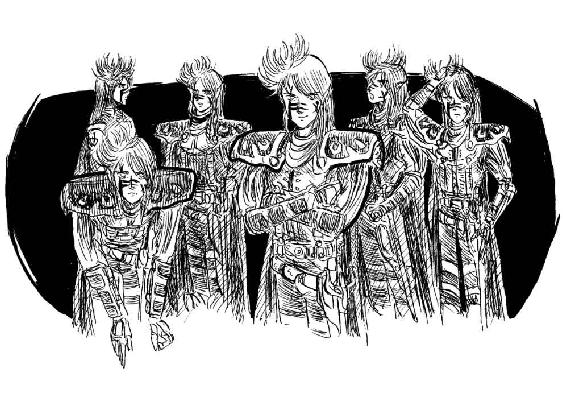
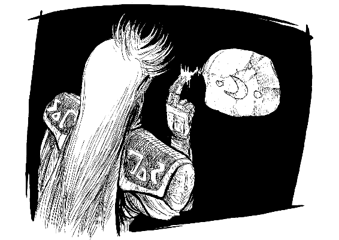
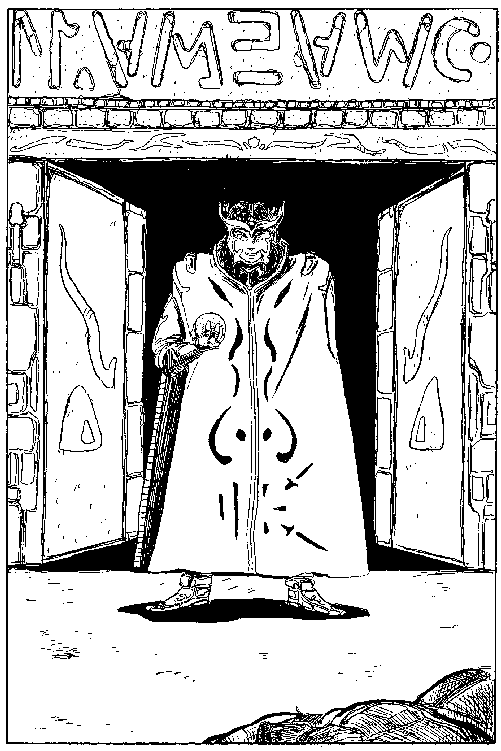
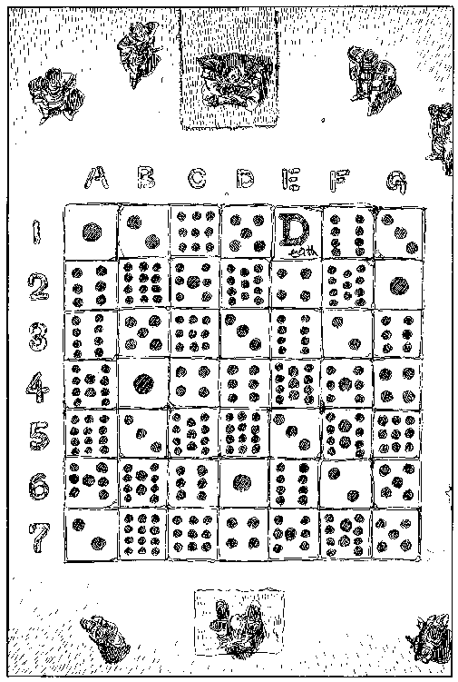
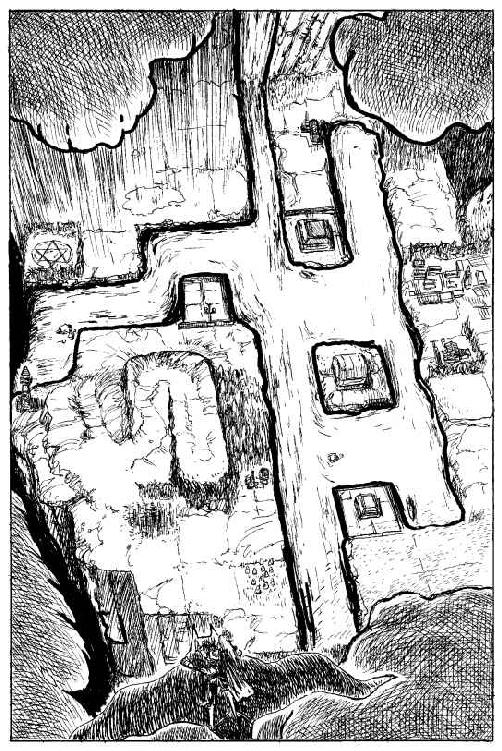

| パンタクル1 メスロンサーガ (幻想迷宮ゲームブック) | |
| 鈴木 直人 | |
| GENSOUMEIKYUU SHOTEN (2016) | |
幻想迷宮ゲームブック
パンタクル１
鈴木直人
プロローグ
森の国シャンバラーは死の冷気に包まれていた。数年前にこの地を襲った天変地異は、シャンバラーへ流れ込む大河の流れを変えてしまい、森は枯れ木の荒野と化していた。シャンバラーの南には地の底まで続くと思えるほどの深い亀裂が走り、南からの水の恵みも人々の往来をも遮断してしまった。人々は亀裂を「奈落」と呼び、その向こうに一夜にしてでき上がった谷を「鬼哭谷」と呼んで恐れた。
国王セフィロトはその死の床に、三人の息子を招いた。病などに負けぬ屈強な王だったが、どす黒い血管の浮き出た手や落ちくぼんだ眼は、死の来訪が近いことを告げていた。
「ケテルよ。ビナー、ケセドよ。愛する息子たちよ。わしを彼岸へと誘う者の正体がわかったぞ。わしの夢の中に現れたのは鬼哭谷の中に巣食う悪鬼だ。おお、何と強い呪だ。身を焼かれるようだ！」
王は身を震わせた。
「......そいつは奈落よりも深い亀裂の中にいて、わしを引き込もうとしている。もうわしは手遅れだ。......ケテル、ビナー、ケセドよ。聞こえるか？ 如意宝珠を捜すのだ。鬼哭谷のどこかにある如意宝珠をその亀裂に投げ込め。それ以外に鬼を倒す手だてはない。最も強大な鬼を倒せば、天変地異も元に戻るのだ。ああ、息子たちよ。後を頼む。わしは四人とも愛していたのに！」
そう言い残すと、王は息を引き取った。
国中の鐘が王の死を告げる頃、軍勢を引きつれた三男ビナー王子が馬を跳ばして鬼哭谷へ向かった。しかし一月たち二月たっても何の音信もなかった。
四男ケセド王子は一人で城を抜け出した。新王ケテルの誕生を祝う宴は、まるで通夜のようだった。如意宝珠を捜し、父君と兄者の仇を討つ。奈落を閉じ大河の水を元に戻した時、初めてシャンバラーの民に笑顔が戻るのだ。王家の馬、六本足のアドニラムに乗り幾夜も馬上で過ごした。鬼哭谷の近くに来た時、街道沿いの草むらに一人の異国の男が腰を下ろしているのを見つけた。無論今は好奇心など起こす気もなく通り過ぎようとしたのだが、アドニラムがその男のそばへ行くや、まるで子犬のように振舞ったのだ。
「これは珍しい。わたしの馬はあなたを知っているようだ。わたしの名はケセド。ぜひお名前を聞かせてください」ケセドは男にあいさつをした。
「旅の医師ミンダルカムイと申します。ケセドとおっしゃるあなたは、もしやシャンバラーの王子様ではありませんか？」
異国の男は長い髪を掻き上げ、ケセドを見つめた。まだ若いが貴族的な仕種は、彼の素性が卑しからぬことを物語っていた。二人は急速に親しくなった。アドニラムが男を好いているのは明らかで、ケセドはミンダルカムイと名乗る青年との親交を深めていった。奈落の近くの旅籠に泊った時、ケセドは王のいまわの言葉を話して聞かせた。
「......父君はさぞ無念だったと思います」
「王様は『四人を愛している』とおっしゃったのですね」とミンダルカムイが尋ねた。
「そうなのです。父君には四人の王子がいたのですが、第二王子が生まれながらの黒魔術に通じていることを嫌い、追放したと聞きます。でも父君はそのことを後悔されていたのでしょうね。わたしも、もしメスロンという名の魔道士に出会えたら、父君の言葉を伝えたいと思うのです」
翌日二人は奈落を渡る唯一の吊り橋の前に辿り着いた。この時にはミンダルカムイはすっかりケセドの従者として働いていた。
「ケセド王子。わたしが先に吊り橋を渡ります。アドニラムとあなたはわたしが安全を確かめてからお渡りください」
ケセド王子は年上のミンダルカムイを信頼し、黙ってうなずいた。
一歩一歩用心深く歩を進めるミンダルカムイの背を頼もしげに見守るケセドが小さな叫びを喚げた。吊り橋が大きく揺れ、次の瞬間崩れ落ちたのだ。ミンダルカムイは奈落の向こう岸に這いつくばるようにしてつかまっていた。しかしケセドとアドニラムはこちら側に取り残された。
二人の間にあった吊り橋の切れた綱が奈落の淵に垂れてゆっくりと揺れていた。
ゲームの進め方
ゲームブックをはじめて読む方へ
幻想迷宮書店でゲームブックをすでに購入したことがある経験者の人はこの項目を読む必要はありません。ページをめくり、すぐ次の項目であるパラグラフ直リンクについてに進んでください。ゲームブックは知っているけど、電子書籍でやるのは初めてだという人、またはゲームブックって何？ という人は、長い時間は取らせませんから、少しだけ説明を聞いていってください
はじめて聞く人は、もしかするとコンピューターゲームの攻略本の類と思われるかもしれませんが、そうではありません。
ゲームブックとは小説とゲームが融合したものです。一見した形式は小説で、その内容は章番号のように一、二、三...と数字で区切られています。この番号で分けられたそれぞの章を「パラグラフ」と呼びます。
小説なら、まず最初の一を読み、次は二、三と読み進めますよね？ ところが、ゲームブックは違います。
ゲームブックでは、読みはじめは小説と同じように、最初から読んでいくのですが、最初に一を読み終えたら、その終わりに記されている選択肢である番号の中から、読者であるあなたが選んだものが物語の続きになるのです。
どの道を行くか、戦うか逃げるか、いかにして難問を解くかといったことを、あなたが選んでいくことで、物語の展開や結末が変わり、まるでゲームのように楽しめるので、ゲームブックと呼ばれているのです。
あなたが選ぶべき選択肢は太字の漢数字になっています。これをタップすると、そのパラグラフにジャンプし、続きを読むことができます。
また、それぞれのパラグラフの終わりには必ず"▲"のマークが登場します。この印が見えていなければ、現在読んでいるパラグラフには続きがあるということです。うっかり、次ページにある選択肢を見落としたりしないように注意してください。
パラグラフ直リンクについて
この本ではしばしば進むべきパラグラフの番号が本文中に登場していない時があります。それは隠された財宝への隠し扉かもしれませんし、暗号を知っている者しか引き出せない情報かもしれません。それを知るには、あなただけが知っている特定のパラグラフにジャンプする必要があります。しかし、その番号が本文になければタップできませんよね。そんなときは一度「目次」に移動して"パラグラフ直リンク"というところから、任意の番号を指定してください。
アドべンチャーシートヘの記入
魔道士メスロンとしてこの本の世界に旅立つ前に、まずあなたの能力を設定しなければなりません。これらを記録する用紙のことをアドベンチャーシートと呼びます。「パンタクル１」では、主人公メスロンの能力の他、冒険の状況や道具など、記録しておくべき要素が多い作品です。電車の中で通勤・通学中に遊ぶのはちょっと大変かもしれません。落ち着いたところで読むほうが、より楽しめるでしょう。また、「ドルアーガの塔」シリーズと同様、戦闘や運試しの際にサイコロを使いますので、紙と鉛筆とサイコロを用意するか、それらの代用となるアプリを同時に使うことをおすすめします。
アドベンチャーシートがただのメモ帖では味気ないという人のために、幻想迷宮書店のサイトではアドベンチャーシートを用意しています。これには本を遊んでいく過程で、記録していくことになるあなたの能力、装備や宝物、冒険の状態を表す記号などを記録していくためのフォーマットがあらかじめ用意されています。印刷してご利用ください。
魔力の設定と魔法
サイコロを一つ振り、出た目があなたの満足できる数ならばそれに10を加え、原魔力ポイントの欄に記入します。もしサイコロの目が小さすぎると思うなら、もう一度だけ振り直してもかまいません。ただし振り直しは一度だけしか許されません。振り直した場合も、同様に10を加え、原魔力ポイントとします。また、出発時のあなたの魔力ポイントは原魔力ポイントと同じ値ですので、同じ数値を書き込んでおきましょう。魔力ポイントとは、魔法を使うためのエネルギーを数値化したもので、魔法を使うことで消耗します。
もし不幸にして魔力ポイントが０になってしまったら、あなたの精神的活動は停止し、永遠の昏睡に陥ります。それは死に等しいものです。また、減少した魔力ポイントを回復できる場合でも、その最大値は原魔力ポイントまでとなります。魔力ポイントは、甘露水という薬を飲むことにより回復できますが、甘露水は容易に手に入りません。
原魔力ポイントは戦闘の経験を積み、経験記号（後述）を増すことにより増加します。出発時のあなたは魔法使いとして天才と謳われており、その若さにもかかわらず、すでに十五種類もの魔法をマスターしています。とはいえ、あなた自身がメスロンと化すためには、このあと登場する「魔法の書」を読んでおさらいをしておく必要があるでしょう。
メスロンはこの十五の魔法を駆使するために、万能章と呼ばれる魔法の道具を持っています。万能章は小さな円形の蜜蝋で作られており、魔法の符号が刻まれています。万能章は全ての魔法の源であり、この小さな道具を失った時は魔法が使えなくなってしまいます。
技量の設定と武器、防具
サイコロを一つ振り、出た目があなたの満足できる数ならその値を技量ポイントとします。もしサイコロの目が小さすぎると思うなら、一度だけ振り直しが許されます。得られた数値をアドベンチャーシートに記入してください。これは剣の扱いなど物理的な戦闘アクションにどれだけ長じているかを示す値で、多ければ多いほど「強い」ということになります。
メスロンは優れた魔道士ですが、全てを魔法で解決することはできないほど今回の敵は強力です。従って技量ポイントはたいへん重要なパラメータとなります。技量ポイントも原魔力ポイント同様に経験記号を増すことにより増加します。出発時のあなたは『鬼麻呂』という名の愛剣を携えています。片手で扱える長さの両刃の直刀で、見事な細工の施されたバランスのいい白銅の柄がついています。決して折れることのない強靭さを持つ優れた武器です。鬼麻呂の武器ポイントは３で、これに技量ポイントを加えた数が出発時のあなたの攻撃力となります。
また、メスロンは小さな革鎧を着ています。特別なものではありませんが、軽くて動きやすいうえに敵の攻撃をいくらかは防いでくれることでしょう。防具ポイントは２です。これも書き込んでください。これに技量ポイントを加えた数が、あなたのスタート時の防御力となります。
体力の設定
まず原魔力ポイントと技量ポイントを足します。次に、32からその二つのポイントの和を引いてください。得られた値があなたの原体力ポイントになります。つまり、原体力ポイントは、魔力、技量とも優れたていれば小さく、逆に魔力、技量とも劣る者は大きくなるわけです。出発時のあなたの体力ポイントは原体力ポイントと同じ値ですので、その数を書き込んでおきましょう。
この値は、あなたが生きていくためのスタミナの量を示しています。敵と戦ってダメージを受ければ体力ポイントは減っていきます。もし体力ポイントが０になるとあなたは死んだことになり、冒険もそこで終りになります。
体力ポイントを回復させるには、どこかで食料を見つけて食事をとるか、魔法による体力回復しかありません。いずれの場合でも体力ポイントは原体力ポイントを超えてはいけません。
運ポイントの設定
サイコロを一つ振り、出た目に６を加えて得られた数があなたの原運ポイントとなります。運ポイントも出発時はこれと同じ値になります。この数字は冒険の途中、知恵や勇気だけでは解決不能の状態に陥った時などに、運試しのできる回数を示しています。
運試しをするには、まずサイコロを二個振ります。出た目がその時のあなたの運ポイント以下だった場合は、幸運（吉）ということになります。逆に出た目が運ポイントより大きかった場合は、不運（凶）ということになります。運ポイントは、運試しは一回するごとに、成功失敗に関らず、１ずつ減っていき、どんどん運試しの成功率が落ちていきます。何かのきっかけで運ポイントを増やせることもあるかもしれませんが、原運ポイントを超えてはいけません。
万能章の使い方
アドベンチャーシートの左下部分に『万能章』があります。万能章にはあなたが最初から習得している、十五の魔法の名前と、それぞれ対応している選択肢の数字、そして、いくつかの空欄が用意されています。空欄はゲーム中に知り得た新しい魔法を記していくためのものです。出発時には何も記入せず、このまま使います。もし、アドベンチャーシートを印刷せず、メモ帖で冒険を開始するなら、この万能章の内容を事前にすべて書き写しておく必要があります。
ゲームを進めていくと「ここで万能章を使っていい」という指示が出てきます（その指示がない場所で魔法を使うことはできません）。魔法を使うときは、まず、万能章を使う場面である、そのとき読んでいるパラグラフの番号をメモするか、記憶してください。そして、使う魔法を選び、万能章に記載されている魔法に対応したパラグラフに進むと、記憶した番号に応じた「成功か」「失敗か」の判定があり、進むべきパラグラフの指示があります。「『二六五』で万能章を使ったなら『四五三』へ進め」というような調子です。
この『パンタクル１』がまだ紙の本だった時代、日本全国のメスロンたちが魔法を使うときは、アドベンチャーシートから切り取った万能章をしおりのように本に挟み、魔法のパラグラフに飛ぶことで華麗に魔法を操ったものでした。しかし、電子書籍として生まれ変わった本書において、タップすることができない万能章にしか魔法のパラグラフが記載されていないのでは、当時を知るメスロン諸氏はあんまりだと思われるでしょう。そこで、本書では魔法を使ってもいい場面では必ず、パラグラフ末にミニ万能章を設置し、そこから魔法名をタップすることで万能章の番号にジャンプできるようになっています。
ただし、ミニ万能章の効果範囲は出発時から覚えている十五種類の魔法に限られます。冒険の途中で習得する新たな魔法を使いたいときは、先述しました「パラグラフ直リンク」をご利用ください。
戦闘方法
敵と出会い、いざ戦闘ということになれば、以下のルールに従って戦います。
- １ まず『万能章』を使うか『鬼麻呂』を使うかを決めてください。『万能章』を使うなら、先に説明したとおり、今いる番号を記憶することを忘れずに魔法を選んで２のステップへ進みます。『鬼麻呂』ならば３のステップへ進みます。
- ２ まず定められた数の消費魔力を魔力ポイントから引きます。次にこの魔法が敵に対し有効かどうかを見ます。有効ならば一瞬にして敵を倒しているかもしれませんし、次の戦いを有利にできるような指示があり、３のステップへ進みます。無効ならすぐに３のステップへ進むことになります。
- ３ まず敵の技量ポイントと武器ポイントを足して敵の攻撃力、次に技量ポイントと防具ポイントを足して防御力を算出しておきます。この時、２のステップで何らかの指示を受けていたら、敵の力を弱めることができます。またその指示があなた自身に作用するものなら、一時的にあなたの力を高めることができます。
- ４ サイコロを二個振って、出た目にあなたの攻撃力をたします。再びサイコロを二個振り、出た目に敵の防御力をたしてどちらが大きいかを見てください。攻撃力が防御力より大きければ、敵に傷を負わせたものとして敵の体力ポイントを２ポイント減らします。攻撃力が防御力以下ならば攻撃は失敗したことになり、敵の体力ポイントは減らせません。
- ５ サイコロを二個振って、出た目に敵の攻撃力をたします。再びサイコロを二個振って出た目にあなたの防御力をたしてどちらが大きいかを見てください。攻撃力が防御力より大きいなら、あなたの体力ポイントを２減らします。攻撃力が防御力以下なら、あたたは敵の攻撃を巧くかわしたわけで、体力ポイントを減らさなくても良いのです。
- ６ ４～５のステップを敵の体力ポイントが０になるか（敵が複数ならば全員の体力ポイントを０に）、あなたの体力ポイントが０になるまで繰り返します。敵を倒したなら『勝った』という分岐へ進み、あなたが倒されたなら『負けた』という分岐へ進みます。この時点では２のステップで得た「魔法による効果」は消えたことになります。あなたが一時的に強くなっていたら、強くなったまま次へ進んではいけません。
経験記号
ゲーム中様々な経験をするたびに、「記号○を記しておくこと」という指示があります。アドベンチャーシートに該当する記号を書き入れて下さい。ひらがなやアルファベットの記号もありますが、敵を倒した時だけは漢字の記号がもらえます。
この漢字の記号は経験値と同じ意味があります。漢字記号が８つたまれば、あなたの原魔力ポイントを１増やすことができ、同時に原技量ポイントも１増やすこともできるのです。16個たまればさらに１ずつ増やします。24個の時も同様に、特に指示がなくても増やすことができます。幻想迷宮書店のサイトからアドベンチャーシートを入手した場合、経験記号は最初から薄い色で表示されています。記すように指示があった記号を経験記号欄から探してチェックして下さい。もし、探し出した漢字記号に何の手も加わっていなければ、あなたは、今戦った敵を初めて倒したことになります。その漢字にチェックを入れると同時に経験値ゲージを一マス分増やしてください。
もし、探し出した漢字にすでにチェックが加えてあれば、今倒した相手は以前にも戦ったことがあるということになります。重ねて記号をチェックする必要はありませんし、経験値ゲージを増やすこともできません。同じ漢字記号で重ねて経験を積むことはできないのです。
たとえば、ある場所でゴブリンを倒し記号「下」を得たとします。そこで再びその場所を通り、ゴブリンばかり倒し続けた結果、「下・下・下・下......」という吐きそうな経験を積んだとしても、記号「下」は一度しか記すことはできません。漢字記号に限らず、全ての記号は一種類につき一度ずつしか記せないルールであることを覚えておいてください。また、漢字以外の記号は記すだけでなく、消す時もあるので、後から消せるように鉛筆を使うことをおすすめします。
戦闘時の運試し
戦闘の際にも、傷を負わせたばかりの敵にさらに追い撃ちをかけたり、敵から受けたばかりの傷をできるだけ軽くするために、運試しをするかどうかをあなたが決めることができます。
敵に傷を負わせたばかりのとき、運試しを行って吉と出れば、もっと深い傷を負わせたものとして、敵の体力ポイントをさらに２減らすことができます。しかし凶と出れば、傷は浅かったということになり、せっかく２減らすことのできた敵の体力ポイントを１増やしてやらねばなりません（つまり通常のように２ポイント減らすことができず、１ポイントだけを減らすのです）。
敵に傷を負わせられたばかりのとき、運試しを行い吉と出れば、あなたの体力ポイントを１増やすことができます（つまり敵の攻撃で減った２ポイントのうち、１ポイントを取り戻せるのです）。しかし、凶と出たら、あなたは深刻な一撃を受けたものとして、あなたの体力ポイントをさらに１減らしてください。攻撃を受けた時の運試しは体力ポイントが２から０になった時にも行えます。運試しの結果、凶と出ればあなたの体力ポイントはマイナス１となるわけですが、これは０と同じものと扱い、指示された項目へ進んでください。吉と出れば、あなたの体力ポイントは１で踏みとどまり、首の皮一枚繋がったということになります（体力ポイント１の状態で攻撃を受けた場合、運試しを行ってはいけません）。
忘れてならないのは、運試しをするたびに、あなたの運ポイントを１減らさねばならないことです。このルールは大巨匠スティーブ・ジャクソン氏の作品と偶然にも（!?）同じです（ジャクソン先生ごめんなさい）。
マッピング
これから旅立つ場所は、山あり谷あり森あり川あり、迷宮ありというわけでかなり複雑な構造をしています。しかし、必ず正確な地図が描けるようになっています。ただし、マッピングが重要になる箇所は限られており、ほとんどの場合地図なしでも先へ進めるでしょう。...というのは甘いかもしれませんが。
ちなみにメスロンは旅に出る前に、ふとしたことから干支コンパスというわけのわからない道具を手に入れています。あなたの位置がわかるというものだそうですが、果たして役に立つのでしょうか？ この干支コンパスは特に持ち物欄に記す必要はありません。
その他の装備
武器、防具とは違う、他の変わった道具について説明しましょう。
まずあなたの荷物の中には、陽炎灯と呼ばれるローソクが四本入っています。これについては「魔法の書」の中で詳しく述べていますので、説明は省きますが、持ち物欄に記す必要はありません。四本持っているということだけ覚えておきましょう。
さらに「甘露水」の入った壜を四本持っています。持ち物欄に記入してください。この液体は飲めばたちどころに魔力ポイントを４回復させてくれる霊薬です。一度に何本飲んでもかまいませんが、飲めるのは、「ここで休みをとることができる」と指示された場所だけですし、回復された魔力ポイントが原魔力ポイントを越えることはできません。出発時には持っていませんが食糧についても同様で、「休み」をとった時のみ食事が許されます。
その他に、あなたの荷には革のマントや万能章を左手の甲に留める手袋などが入っていますが、これらには防具ポイントは与えられていません。メスロンの質素な財産は、これで全部です。ここで冒険を始められてもかまいませんが、これから説明する「魔法の書」は必ず一読しておくようお勧めします。
魔法の書
次の頁から始まるこの書物は出発前に必ずよく読んでおきましょう。メスロンの魔法は、全て漢字で表記されていますので、比較的覚えやすいと思います。魔法の中には戦いに適したものや、戦いには役立たないものもありますが、状況が戦いであってもなくても十五の魔法を全て使えるようにできています。従って状況を把握しないで魔法を使うと見当はずれのことが起きたり、魔法の反作用で命を落としたりすることもあり、注意しなければなりません。また、この魔法は役に立たないと思えても、意外なところで強力な働きをしてくれる場合もあります。この書をどれだけ理解しているかによって、あなたの旅の成否が決まることでしょう。
火界 消費魔力ポイント５
魔道士の魔法のうち、最も強力な破壊力を持つのがこれであろう。
呪文を唱えると同時に足元の床を一蹴りすると、たちまち周囲に火炎の嵐を起こす。この地獄の業火に耐えられる者はほとんどいない。
ただしこの魔法には、使う場所をわきまえないとひどい反作用を喰らう危険がある。火炎の嵐は魔道士を中心として半径三十メートルほどの地域に拡がるのだが、建築物内などの閉ざされた空間では火炎が魔道士自身を襲ってしまうのだ。従って、この魔法を使う場合そこが閉ざされた空間でないことを確認する必要がある。
また、水の上や蹴ることのできない空中にいる時は発火しない。
金剛力 消費魔力ポイント４
戦闘時の魔法のうち、最も信頼できるのがこれだ。
戦闘前にこの呪文を唱えれば筋肉に力がみなぎり、通常よりも強大な力で敵を攻撃し、はるかに強靭な敵の攻撃を受け止めることができる。しかも反作用はないし、使う場所が限定されることもない。
この魔法を使い、成功という判定があれば、あなたの技量ポイントに２を一時的に加えることができる。ただしこれはあくまでも一時的なもので、戦闘終了時には技量ポイントを元に戻さなければならない。
戦闘時以外でも力が必要な状況ではぜひ試してみたい魔法である。
𩸽縮劣拳 消費魔力ポイント２
この魔法は魔道士の身長を約十分の一に縮める働きをする。つまり戦闘前にこの魔法を使ったならまず勝ち目はなく、移動時にこの魔法を使っても足は速くならない。何のために覚えたのかよくわからないぐらい取り柄のない魔法だが、メスロンは時々この魔法を使って遊ぶことがあるという。
土呑護 消費魔力ポイント２
一瞬にして敵を葬り去る恐ろしい魔法である。戦闘前に「どどんご！」と唱え、敵の足元に指先で念を送る。すると大地の一部が柔らかい泥と化し、地上の敵を土中に呑み込んでしまうのだ。この魔法が成功した時は、敵が一人なら剣を抜く必要もない。敵がグループの場合も戦闘前に敵の数を減らすことになるので、かなり有利になるだろう。
ただし使える場所は限られている。床が敷物で覆われていたり岩だったりすれば効果はない。また敵が空を翔べたり、重さのない霊魂のようなものだったり、極端に足の速い生物だったりすれば念を受けた泥の上に立ってくれないわけで効果は期待できない。
三十六計 消費魔力ポイント２
この魔法は『陽炎灯』という道具を用いなければならない。陽炎灯は小さなローソクであり、火を灯しても明るくならない不思議な灯である。しかしこの灯はこの世界からは見えないだけで、魔界では煌々と輝いているのだ。
陽炎灯をどこか安全な場所で灯して旅に出ていくなら、どんな絶体絶命のピンチであっても大丈夫だ。三十六計の魔法はどの状況であっても魔道士を魔界へとワープさせる。魔界内にはこの世界に戻る何の目印もないが、陽炎灯さえあらかじめ灯しておけば、それが目印となって元の安全な場所へと導いてくれるのだ。この魔法を使いこなすことが最も大事な生き残りの策となろう。
ただし、陽炎灯は時間がくれば消えてしまうし、これを灯さずに魔界へワープしたなら、魔道士は永遠に魔界を彷徨うことになるだろう。
馬佐呂 消費魔力ポイント３
戦闘時に魔道士を有利にする魔法。これを唱えて戦いに臨めば、目にもとまらぬ速さで剣を操ることができ、敵が身構える前に何度も攻撃を繰り返すことが可能になる。
この魔法を唱えて成功と出たら、敵が攻撃してくる前に魔道士の攻撃を四回～八回（！）繰り返すことができる。成功率も高く反作用もない便利な魔法である。敵がグループであれば、強そうな奴だけ先に始末しておくこともできるし、全員に一撃ずつお見舞いしておくこともできる。ただし、敵が剣よりも速く攻撃した場合（たとえば光を浴びせたり、毒をほとばしらせたりした時）には、この魔法は効果がなくなる。

身外身 消費魔力ポイント３
この魔法は戦闘中の敵の目を欺く一種の幻術である。「しんがいしん！」を唱える魔道士の姿が六人現れ、敵にはどれが本物かわからなくなる。もちろん六人のうち五人は幻でしかないので、攻撃も防御もできないのだが、敵が欺かれたまま幻を相手に戦ってくれれば魔道士本人は一切の攻撃を受けぬまま勝利することも可能だ。ただし偶然にも魔道士本人に敵の攻撃が命中すれば、術は一瞬にして破れ、幻は消えてしまう。
魔法を唱え、成功と出たら剣をとっての戦いであなたの攻撃の後すぐにサイコロを一つ振る。２～６の目なら敵は幻と戦っている。あなたは無傷のまま再び攻撃することができる。敵がグループなら敵の人数分だけサイコロを繰り返し振る。もしサイコロの目が１ならば、あなたは見つかってしまったので、その時点で通常の戦闘に戻らねばならない。

聴念天 消費魔力ポイント１
この魔法を唱える際には、三日月の刻印の入った『語り石』をイラストの中で探す必要がある。『語り石』に向かって魔法を使えば、石は小さく振動し封じ込められた古代の魔法を語りだすであろう。
この新たに得られた魔法を万能章に記すことにより、自在に使いこなせるようになる。
ただし、万能章に残された空欄は五つしかない。もし、それを超えて、新たに魔法を覚えようとした時は覚えた魔法のいずれかを消さねばならない。
唯一、この魔法での問題点は『語り石』を見つけるのが異常に困難であるという点だ。三日月の刻印ということはわかっているのだが大きさもまちまちで、どんなふうに置かれているかもわからない。冒険の途中で出会う風景や敵のイラストの中に『語り石』があるかどうかをじっくり観察すべし。見つけたらすぐにこの魔法を使うことだ。『語り石』の力を借りずしてあなたの成功はありえない

十字輝章 消費魔力ポイント１
左手で十字を切り、呪文を唱えると万能章が眩いばかりの光を放つ。この魔法が成功すると、敵はその聖なる光に目をやられ技量が下がったり溶けだしてしまうことがある。剣での攻撃が効かない相手や戦闘以外でも試してみたい魔法である。敵がグループであっても、効果は変わらない。ただし敵の肉体的特徴によっては、効果が得られない場合もある。
鹿茸 消費魔力ポイント２
この魔法には失敗はありえない。いついかなる時でも呪文を唱えるや魔道士の体力ポイントを６回復させてくれるのだ。反作用もなく、魔道士が望むなら他の者に体力をプレゼントすることもできる。
ただし、どんなに体力があっても助からない状況もあるので、いつもこの魔法ばかり使うわけにもいかない。
阿知地 消費魔力ポイント２
敵が鋼鉄の武器を持っていたら、この魔法はきわめて有効である。「あちち！」と唱えると鋼鉄の武器は高熱を発する。敵が熱を感じるまともな神経の持ち主であれば、武器を取り落とし素手でつかみかかってくることになる。成功率もきわめて高い。ただし、敵の武器が棍棒のように木製だったり、銅剣など材質の違うものならば効果はない。戦闘以外でも相手を驚かすことのできそうな魔法である。敵がグループでも効果は変わらない。
風天虎 消費魔力ポイント２
この魔法を唱えると、風が吹くはずである。が、しかし、そよ風が吹くだけのこともあるし、戦いが終わって魔道士が立ち去ってから大竜巻が起こるということもある。実に気まぐれであてにならない魔法だが、どこかで使い道があるはずだ。神風が吹くことを願って根気良く試してみるのが良い。
幻水金 消費魔力ポイント１
目に見えるものが全て真実とは限らない。魔道士の眼前に桃源郷が拡がっていても、すぐに足を踏み出してはならない。なぜならそれは邪悪な幻術師が作り出した幻なのかもしれないのだ。この魔法はそんな幻術破りの魔法だ。この魔法を唱え、成功と出た場合はあなたの眼に別のものが見えてこよう。
魔防胴風 消費魔力ポイント２
敵が鎧などの防具を身につけていたら、この魔法はきわめて有効である。呪文を唱えると敵の胴鎧はまるで豆腐のように崩れ落ち、何の役にも立たなくなる。
この魔法が成功したら敵の防具ポイントがいくつであっても０にして戦うことができる。成功率もきわめて高い。
使用上の注意は次の二点である。
１ 鉄鎧にしか効かない。布や草などの防具には何の効果もない。
２ 鎧の前面に魔除けの護符がついていたら、効果がない。
この原則さえ守れば良い。敵がグループであっても全員の防具ポイントを０にできる便利な魔法である。
霧荒星 消費魔力ポイント不明
歴戦の冒険者である魔道士メスロンには、苦楽を共にした戦友が何人かいる。その中でも"ゴールデンナイト"の異名を持つ、ある戦士とは大親友とも呼べる間柄である。この魔法はその戦士がメスロンにプレゼントした何冊もの魔術書のうちの一つに載っていた古代語の魔法である。
メスロンはまだこの魔法を使ったことがなく、一度機会があれば使ってみたいと思っている。
ちなみに黄金の戦士は「決して使ってはならない。使う時は死を覚悟せよ」と注意してくれたのだが......。そんな危険な魔法なら最初から教えるなよな。
一
「きっと助けに行きます。河の上流へ回れば鬼哭谷の中央まで行かれますから、船で迎えに行きます。待っていてください」

ケセドの悲痛な声が鬼哭谷に響きわたった。ミンダルカムイは淋しげに手を振って、アドニラムに飛び乗り走り去るケセド王子の姿を見送った。
王子の姿が見えなくなるや、ミンダルカムイは「旅の医師」の装束を解き始めた。背負袋から革鎧を出すと、それを馴れた手つきで身につけた。腰には白銅の柄の長剣「鬼麻呂」を下げ、後ろに束ねた長髪を解いた。革の黒マントをはおり、顔に「戦化粧」を施すと、ミンダルカムイは魔道士の姿を現した。セフィロトの第二王子、シャンバラーを追放されたメスロンがそこに立っていた。
「ケセド！ わたしはおまえのために吊り橋の綱を切った。悪く思うなよ。父王と弟ビナーの仇はこのメスロンが一人で討つことを誓う」
左手の甲に万能章の輝く手袋をつけるとメスロンは歩き始めた。この一、二年望郷の念断ち難く、友人たちと別れて故郷へ戻ってきたのだが、シャンバラーの国を追放された身ゆえ大手を振って戻ることもできず歩き回るうちに、弟ケセドに出会ったのだ。別れた時、まだ赤子だった弟が兄とわからぬのは無理もない。アドニラムはそれでもメスロンを覚えていた。
故国の変貌と父王の死、それに父の最後の言葉を知った今、あなたの行動は決まった。兄弟を危険にさらすことなく父の仇を討つこと。そしてシャンバラーを元の平和な地に戻すことこそあなたの使命なのだ。荷物の中から「陽炎灯」を一本取り出すと、目に見えぬ火を灯した。鬼哭谷の影の濃い荒野へとあなたは進んでいく。一〇五へ進め。
二
その頃夜叉もまた魔界へと忍び込んでいた。鋭い眼光で周囲を油断なく見回す。はるかな高みに赤い光が瞬いている。そのかたわらに黒いコウモリのごとくマントを翻す魔道士の姿が、みるみる小さな黒点となっていく。
夜叉は舌打ちした。逃げ足の早い奴。まあいい。いずれ奴は我が玉座の前で倒れ伏すことになろう。夜叉の己への自信にはいささかの揺るぎもなかった。あなたは無事魔界を通り抜けた。一〇五へ進め。
三
宮毘羅王は首を横に振った。
「呪いの矢を買うような愚かな者は一人もおらぬ。わたしを騙してどうしようというのだ」言葉は穏やかだが、彼が少なからず腹を立てているのが感じとれた。あなたはうなだれた。「......しかし、おまえがわたしを騙すつもりでなかったと言うなら、許してやらぬでもない。もうよい。その矢筒を持って立ち去れ」
あなたは言われたとおり、矢を持って立ち去ってもいい。矢を抱えて北へ歩くなら一三八へ、南なら四六六へ進む。謝って矢筒を差し出し、薪にでもしてくれと言うなら四〇六へ、謝って織物を買ってくれと言うなら七三へ進め。
四
あなたは全ての体力を失って倒れた。あなたの行動の一切は無に帰した。ただし、もしあなたが金剛石を持っていたら、四四四へ進む。持っていないのなら、もはやこれまでで冒険は終わる。
五
降り続く雨が髪を濡らし額を流れる。雨に煙る大地は遮るものもなく広大だ。あなたは干支コンパスが〈酉―人馬〉を示す地点に歩いてきた。記号「Ｆ」がなければ体力ポイントを１減らす。もしここで体力ポイントが０になったら四へ進め。また、もう体力魔力とも残り少ないと思えるなら、ここでは食事や甘露水をとることが許される。ルートに従って力の補給を行うこと。さあ、準備ができたら先を急ごう。北へ歩くなら二九九へ、西は一九四へ、南は四一四へ、東は二五七へ進む。また、遮るもののないこの地では斜行も許される。西南へ歩くなら一四八へ、東南なら二〇四へ進む。東北と西北の方角は川になっている。
六
干支コンパスが〈子―処女〉を示す地点へ歩いてきた。記号「Ｆ」がなければ体力ポイントを１減らす。もし体力ポイントが０になったら四へ進め。北の荒野の先は奈落だ。西は川が流れており、その水流は奈落へと落ち込む瀑布となっている。南には卵塔場がある。東は奈落だ。あなたは右手の袖で汗を拭った。空は暗く、昼夜の別は相変わらず定かでない。ふと見ると、偶然にも岩場の陰にローソクが一本灯っているのを見つけた。奴のものだ。あなたはためらうことなくローソクの火を踏み消した。記号「Ｘ」を記しておくこと。すでに記してあるなら重ねて書く必要はない。南へ歩き出すなら三八四へ進め。
七
妖女「丑の刻参り」は死んだ。記号「水」を記入し、「Ｅ」を消しておくこと。これであなたは呪縛から開放され、原体力ポイントに２を加えることができる。また記号「き」があるなら、さらに原体力ポイントに４を加えていい。長期間、大きなハンデを背負って旅を続けてきたあなたは、以前よりも高い体力を手に入れたはずだ。一七六へ進め。
八
寺院の門をくぐるや、腐肉の臭気が濃く漂ってきた。平屋の伽藍には血膿のような悪臭を放つ水溜りができていて、倒れた書棚や仏像がその中に沈んでいる。寺院内は暗く、動くものの気配を感じることはない。あなたは思い切って役立ちそうな道具がないかと探索したが、あるのは壊れた物や値打ちのなさそうな品ばかりだ。寺院の人々は質素だったのだろう。信心深い人々もあの天変地異で命を落としたのだろうか。あなたは意を決して悪臭を放つ水溜りの中へ手を入れてみた。
運試しを行い、吉と出た場合のみ四九四へ進む。運試しを行わないなら、何も見つかることはない。凶と出た場合も同様で、運ポイントを減らすことを忘れずに寺院を立ち去るしかない。四五五へ進む。
九
髪結いの女は馴れた手つきで巻き毛を掻き上げ、先を揃えるべくはさみをあてていく。あなたはマントの下で鬼麻呂を油断なく握りしめるが、おかしな仕種はない。どうやらとりこし苦労だったようだ。
「如意宝珠ですって？ まあ！ それはきっと素敵な宝石なのでしょうね。ちょっと待って......もしかしてあれかしら......？」
「知っていることがあれば教えてください」とあなたが尋ねた。
「北の霧の中に鬼の住処があるの。夜叉という鬼が大きな光る珠を持っているそうよ」
彼女の知っていることはそれだけらしい。髪の手入れをすませ外へ出た。記号「Ｄ」を記す。歩きながら、ふと脳裏に「わらづと」、「ローソク」、「人形」、「髪の毛」という単語が浮かんできて、急に背筋が凍るような気持にとらわれた。強力な呪術「丑の刻参り」に使う小道具ではないか!! ブードゥーの呪いの人形もそうだ。洋の東西を問わず、人を死に至らしめるまがまがしい力にとり憑かれたかもしれないのだ。町へ戻るなら二五一へ、北へ歩くなら四〇五へ、西なら二四へ進む。
一〇
あなたは大石獣と向かい合い、鬼麻呂を抜いた。
大石獣 技量18 武器０ 防具０ 体力24
二回ずつ攻撃し合った後なら逃げ出してもいい。南へ逃げるなら六九へ、北なら三七八へ進む。無論この実力差ではメスロンの敵う相手ではないのだが、続けて戦って奇跡的に勝てば二五六へ進む。負ければ四へ進む。
一一
全ての魔力を失った今、魔道士は眠れる屍となって大地に倒れた。もはや彼の頭脳が再び動き出し、正義のために戦うことは不可能となった。
ただしもしあなたが魔界へ戻る手段を講じていたら、何とかなるやもしれぬ。記号欄にローマ数字（ⅠⅡⅢⅣ......）があるか？ あれば四九九へ進む。なければもう二度と立ち上がることはない。
一二
大理石の門を通り抜けたあなたは、鬼が棲むと人の言う霧の中の宮殿に忍び込んだ。干支コンパスは〈寅―蟹〉を示している。ここでは体力ポイントを減らす必要はない。
四方を壁に囲まれた宮殿内は意外に狭く、出入口はメスロンが入ってきた一カ所しか見当たらない。耳を澄ますとどこからか水の滴る音が聞こえる。目が闇に馴れてくると、室内の様子が少しずつ見えてくる。巨大な石造りの鬼神像と主のいない玉座、大きなつづらと杯を乗せた卓が目につく。
もしイラスト内で気になる数字を見つけたら、その数字へ進んでみてもいい。その場合は、目次から飛べる「パラグラフ直リンク」を使うこと。何も気づかなければ記号「川」があるか否かを見ること。あれば三六八へ、なければ三〇七へ進む。
一三
摩睺羅迦に対し、「呪われていない剣」を使うことにしたあなたは、大上段に振りかぶるや、柄まで折れよというほどの一撃を見舞った。しかし摩睺羅迦は片手を上げただけでその必殺の剣を受け止めてしまった。低い押し殺したようなしわがれ声。呪いの言葉を呟いている。
「剣よ。命じられた方角の逆へ跳べ！」
次の瞬間、まるで何かに弾かれたかのように剣はあなたの頭上へと襲いかかった。剣は呪われたのだ。持ち物の「鬼麻呂」を「呪われた剣」に書き直すこと。以後は剣の呪いが解けるまで、他の武器ポイントの明示された武器を使うか、素手で戦うことになる。また体力ポイントを４ポイント失う。体力ポイントが０になったら四へ進む。
まだ体力が残っているなら、記号のチェックを行う。記号「る」があるなら一二五へ進め。なければ「呪いの手斧」を試してみてもいいし（三八八へ進む）、「独鈷」を試してみてもいい（二二七へ進む）。「呪われた剣」でもう一度攻撃するなら九四へ、逃げ出すなら五八へ進む。
一四
妖女の手があなたの腰の鬼麻呂をつかむ。カラスそっくりの奇声とともに、あなたの胸に剣を突き立てた。悲鳴もうめきも喚げられなかった。呪縛があなたの全ての自由を奪っているのだ。体力ポイントを６ポイント失う。体力ポイントが０になったら四へ進め。
人形を懐中に隠し、薄笑いを浮かべながら妖女は立ち去っていく。屈辱と苦痛に耐え、剣を胸に突き立てたまま、あなたはそれを見送るしかなかった。自分の手で剣が抜けるようになるまでの時は長く感じられた。鬼麻呂の血を拭い、よろめきながら立ち上がる。記号「Ｄ」を消し、代わりに「Ｅ」を記すこと。あばら家の外へ這うようにして出た時、妖女の姿は影も形もなかった。四五五へ進め。
一五
南へ向けてメスロンは走った。大石獣は地響きをあげながら背後に迫る。すでに見知った岩場に走り込むや、落とし穴の上を跳んだ。次の瞬間鈍い音がした。あなたは立ち止まり、振り返った。巨獣が前肢と鼻面を穴に突っ込んで身を震わせている。死んではいない。岩場の陰に身を潜め、様子を窺っていると、巨獣は鼻を少し欠いただけで南へ立ち去っていく。どうやら助かったようだ。あなたは胸をなで下ろした。二七二へ進め。
一六
乳のような濃霧の中を魔道士は手探りで歩いていく。ふいに片足が空を切り、あなたはバランスを崩した。次の瞬間身体が宙に投げ出されたように感じた。崖を踏みはずしたらしい。急いで万能章を使うこと。魔力以外に助かる道はない。
一七
牛頭天王は腕の傷をさすりながらあなたを見つめた。
「......旅の方。わたしは鬼ではない。あなたがもし望むなら、中へ招待しよう。ただし一つ条件がある。わたしの腕に噛みついた魍魎が近くにいるはずなのだ。この傷をつけた犯人に天罰を与えてくれたことを証明してくれたら、梯子を下ろしてあげよう」
もしすでにどこかで魍魎を倒しており、その骸を持っているなら、その時メモした番号に一七を加えた数へ進め。ただし、進んだ先で牛頭天王との話がつながっていなければその番号はまちがっていたのだ。その番号をメモ欄から消すこと。その後、パラグラフ直リンクを利用してここに戻ってこれるよう、この番号（一七）を覚えておくおくこと。戻ってきたなら二九九へ進む。まだ魍魎と戦ってないのなら、やはり二九九へ進む。
一八
魔法を念じると、壁の一角に埋め込まれた語り石が細かい振動を始める。それはまるでされこうべが歯を鳴らして笑っているようだ。
「！」
中陰童子が驚いて立ち上がる。その目が語り石に張りついたまま動かない。石の振動は大きく速くなり、蜂の大群が部屋じゅうを飛び回るような音になった。
「ガー、ザッマ・マ・魔防ゥゥ那須ノ魔法ヲヲヲ解キ放ツ――」
あなたは新たな魔法を得た。魔防那須の魔法だ。万能章を取り出し、そこに魔法名と番号「一二一」を書き込んでおくこと。この魔法はパラグラフ末のミニ万能章からは使えないので、使う時はパラグラフ直リンクから一二一にジャンプすること。
語り石の振動が止まった。中陰童子の目が空ろに周囲を見回す。あなたに目を留めた時初めて彼の目の残忍さが戻った。三七六へ進め。
一九
魔法の力であなたは十数センチの大きさになった。怪物は初めは驚いたようだったが、気をとり直しあなたを虫ケラのように踏み潰した。小さくなったあなたは、避けようがなかった。四へ進め。
二〇
この魔法を唱えると、あなたの肉体は消える。目の前にもし敵がいたなら、急に姿が見えなくなりうろたえていることだろう。あなたは魔界へ旅立ったのだ。次元の異なる魔界は、黒い光と白い闇の支配する不思議な空間だ。上下や左右の区別も定かでなく、重さすらない。魔道士はこの宇宙の涯のような世界にあって、赤い陽炎灯の光だけを頼りに泳ぐように飛翔していく。陽炎灯があれば、ここで迷うことはない。魔力ポイント２を減らすこと。もしここで魔力ポイントが０になれば、一一へ進む。まだ魔力ポイントがあれば以下の指示に従う。
万能章を使用した番号 → 進むべき番号
一六 → 一〇五 三三 → 一〇五
四四 → 一六九 四八 → 四六六
七一 → 一六九 七七 → 一〇五
八二 → 一六九 九一 → 一〇五
九六 → 二七四 一〇一 → 一〇五
一〇二 → 三四一 一〇五 → 一〇五
一一六 → 三四一 一一七 → 一〇五
一二七 → 一六九 一三一 → 二一六
一三五 → 一六九 一四二 → 二七四
一四四 → 三四一 一五二 → 一六九
一五九 → 二七四 一六八 → 三四一
一七七 → 一〇五 一八五 → 二七四
二〇四 → 一六九 二一五 → 二七四
二二三 → 三四一 二三八 → 四六六
二四〇 → 三四一 二五二 → 三四一
二六〇 → 一〇五 二七四 → 二七四
二九六 → 一六九 三〇七 → 二
三二四 → 二七四 三二七 → 三四一
三四一 → 三四一 三四七 → 四六六
三四九 → 一六九 三五三 → 一〇五
三六五 → 二七四 三七九 → 一九七
三八四 → 三四一 三八七 → 一〇五
四〇四 → 一六九 四〇九 → 二七四
四四七 → 二七四 四六六 → 四六六
四六七 → 三四一 四六八 → 二七四
四七九 → 三四一 四九一 → 二七四
これ以外の場所で万能章を使っているなら、万能章のある場所に戻れ。
二一
「ふん！」と嗅鼻が鼻を鳴らした。「おまえに何がわかるんだい。貧弱な鼻なんだろう？ あたしにはわかる。おまえが十歳にもならないうちに国を追放されたこともね」
「おれには見える!!」と視目が言う。
「魔法の実験と称して術を唱えるおまえが......。まだ九つだ。馬小屋を火事にした。はっはっは。セフィロト王の馬を殺したんだ。国を追われるのは当然の報いだ。かあさんと呼んで泣いている。何と愉快な眺めだ。おまえはみじめな魔術師よ」
視目嗅鼻はあなたの肺腑をえぐる言葉を並べている。あなたはそれに耐えた。一八六へ進め。
二二
魔法を唱えたあなたは、真っ暗な空の彼方で雲がちぎれるのを目のあたりにし、後退した。黒いビロードのような雲の一部が蛇の尾のように垂れ下がり、くねくねと蛇行を繰り返して下りてくる。耳を聾するような鳴動が聞こえ、比留子たちは空を仰いだ。そして、それが彼らの最後の姿となった。突風が彼らを襲った。それは巨大な竜巻となり、ひき起こした魔道士自身をも巻き込もうとしていた。あなたは岩壁に爪を立て必死に身を守っていた。
やがて竜巻が消えた時、比留子の姿は影も形もなかった。記号「正」と「京」の二つを記しておくこと。二二三へ進め。
二三
メスロンを背に乗せた妖魔は、ついに迦楼羅に追いついた。人面鳥の真上を飛行し、いつでも攻撃できる体勢をとった。迦楼羅が左右に蛇行しようと、見失うことなく追跡できる。魔法の効果はまだ失われていない。
「かるらっ！」とあなたは叫んだ。
「逃げても無駄だ。如意宝珠を渡せ。ぼくの目的はおまえではない。宝珠さえ渡せば......」
しかし聞き入れるような迦楼羅ではなかった。奴はふいに急降下した。あなたは妖魔に降下を命じた。
地上すれすれで、空を力強く一掻きするや、迦楼羅は急上昇。再び空中戦が始まる。
迦楼羅 敏捷力９ 航続力10
迦楼羅の航続力を０にしたら三五五へ進む。その前にこちらの航続力が０なら三一四へ進む。
二四
干支コンパスが〈午―羊〉を示している。ここでも体力ポイントを１減らさなければならない。体力ポイントが０になったなら四へ進め。
立ち止まって、あなたの周囲を改めて眺める。小高い丘の上に立っているので付近はよく見える。東に民家の並んだ町が見えている。南には蛇松の紅い毒針が生い繁っており、道はない。北には街道が延びている。西は丘の下に奈落が黒々と口を開けている。東へ歩くなら一五四へ、北なら一三九へ進む。
二五
娘の手があなたに触れた時、二人はどちらからともなく見つめ合った。
自分もまた鬼であるという業が、迦陵頻を制した。血にまみれて戻ってきた魔道士を愛おしむ気持を笑顔の仮面の下に隠した。この人の使命が成功すれば、自分も他の鬼同様この世界に留まることはできない。それでも彼女は努めて明るく振舞った。
「おめでとう」
「ありがとう」とあなた。
「お預かりしていた如意宝珠をお返しします。それに約束どおり大太法師がお供します。あなたの目的地はもうすぐそこです。きっと願いが叶いますわ。でももし良ければここで休んでいってくださいませんか？」
「お気持だけ受け取っておきます。あなたには充分助けて頂きました。もう行かなくてはなりません」
固い決意の少年に、優しい鬼女の気持をおもんばかる余裕はなかった。別れ際に彼女は金剛石を二つ連ねた念珠を渡してくれた。今生の別れとなることを知らず、大太法師の頭に乗ってあなたは手を振った。
如意宝珠に印された丸印を消し、「金剛石」二個を加えておくこと。
巨人大太法師はあなたを頭上に乗せ、川を渡り始めた。急な流れが渦を巻き、大太法師の背を押していく。干支コンパスは〈未―双女〉、〈未―蟹〉と変わり、そこで左手へ折れて〈午―蟹〉へ。前方には鬼門石窟が見えてきた。大太法師があなたを地上に降ろす。あなたは最後の陽炎灯に火を灯した。記号欄に数字があれば、ローマ数字でもアラビア数字でも消し、新たに「５」を記して二七四へ進め。
二六
あなたは鬼麻呂を抜き、身構えた。緊那羅との戦いが始まる。
緊那羅 技量９ 武器１ 防具５ 体力16
敵の体力ポイントが残り２ポイントになったら、一一一へ進め。あなたがその前に負けたら四へ進む。
二七
ドアの中は東西二ブロックの短い通路になっている。水位に一尺を加えておくこと。もしここで水位が一八尺ならば四へ進む。
東と西の端にそれぞれドアがある。また西のブロックには下の階への穴があり梯子がかかっている。水が下の階に満ちてきているようだ。先を急がなければならない。東のドアに入るなら四三一へ、西のドアなら一八〇へ進む。下へ降りるなら一五五へ進め。
二八
曲がり角に立っている。北の通路は四ブロック先で西へ折れていて、曲がり角の東壁にドアが一つ見えている。西の通路は二ブロック先に北へのドアが見える。
ここでも、あなたの足元の床が大きく切り欠かれた穴になっている。記号「ノ」があるだろうか？ あれば穴は下の階へと通じているはずだ。下へ降りる意志があれば二七八へ進む。その気がないか、あっても記号が合わなければ北七六へ進むか、西四六へ進む。
二九
鬼麻呂を抜くや、力いっぱい斬りつけた。刃は即身仏の肩に喰い込んだ。それは一撃で敵を倒すほどの強打だったが、どろっとした体液をほとばしらせただけで痛みすら感じていないようなのだ。ひからびた唇の端が歪み、黄色い欠けた歯が見えた。笑っている。
首を締めつける骨ばった指に力がこもってきた。もがいてもはずれない。体力ポイントを２ポイント失う。もしここで体力ポイントが０になったら四へ進む。まだ体力ポイントがあれば、一三一へ戻り魔法を選び直そう。あなたの魔法でしか倒せないのだ。
三〇
南に急な登り坂が続いている。よく踏みしめられた道が南北に続き、うっすらと土埃が舞っている。東の崖下には街道が見えているが、ここからは降りられない。西はさらに高い崖となっている。干支コンパスは〈辰―蠍〉を示している。記号「Ｆ」がなければ、ここでも体力ポイントを１ポイント失う。体力ポイントが０になったら四へ進む。北へ下るなら三五八へ、南の坂を登るなら、記号「甲」があれば二四二へ、なければ二五二へ進む。
三一
干支コンパスが〈卯―処女〉を示す地点に立っている。南北に街道が走り、その両脇には変種の杉林が生い繁っている。林の合間から西に流れる河が見え、東には高い崖が見えている。ここでは体力ポイントを減らす必要はない。
もしここで記号「Ｄ」があり、記号「き」がなければ二一八へ進まなければいけない。両方あるか、もしくは両方ともなければ、北へ歩いても三四一、南へ歩いても四五五いい。
三三
干支コンパスが〈寅―金牛〉を示している。ここでも体力ポイントを１減らさなければならない。体力ポイントが０になったら四へ進む。木立の開けた場所で、あなたは不気味な光景を目にした。三人の人影が白い土饅頭の上で何かかじっている。それが骨の山で、人影が「餓鬼」とわかるまで多くの時を要しなかった。
鬼哭谷の数少ない住民たちは、奴らの突き出た腹の中に消えたのだろうか。飛び出していって剣を抜くなら四四八へ、その前に魔法を使うなら万能章へ、気づかれぬようにこのまま立ち去るなら一六五へ進め。
三四
あなたは二人の歓喜天を倒した。記号「林」、「兵」の二つを記していい。歓喜天の持ち物には、体力ポイントを８回復させる鬼グルミの団子が含まれていた。口に含むとまったりとした甘味が拡がる。体力ポイントを８回復させていい。
雨に煙る平原を再び歩き出す。裂け目の多くなってきた革マントを翻した。北へ歩くなら五〇へ、西は二七二へ、西北は二九六へ、東は二三三へ、東北なら一四八へ進む。
三五
魔法を唱え、あなたは万能章を上に掲げた。狂暴な羅刹の咆哮とほぼ同時にあなたの長靴が地を蹴った。紅蓮の炎が全く唐突に大地から生え出た時、咆哮は悲鳴に変わった。
あなたは片手を額に当て、降りかかる火の粉を避けながら炎の壁を突破してくるかもしれない羅刹の姿を追った。しかし、その必要はなかった。真っ赤な光の中で崩れるように倒れる四人の黒い人影が見えたのだ。
炎は現れた時と同じ唐突さで、夢のように消えた。付近の暗さに目が馴れてきて初めてあなたは動くものの気配も何もないことを知る。完全な沈黙の時が流れ、あなたは一つ大きく息を吐いた。
記号、「古」、「血」、「火」、「作」を記すこと。また、漢字記号による成長のルールを忘れてないだろうか？ もし運良くここで経験値ゲージが八マス埋まっていたら成長することができる。ルールに従い、技量ポイントと原魔力ポイントをそれぞれ１ずつ増やすこと。
あなたは旅を続けるため、歩き出した。東の白い霧に入るなら九一へ、西へ歩くなら二九四へ進む。
三六
猩々三匹と一匹ずつ戦う。
猩々Ａ 技量８ 武器０ 防具４ 体力６
猩々Ｂ 技量９ 武器０ 防具４ 体力６
猩々Ｃ 技量８ 武器０ 防具５ 体力６
三七
鬼は降服したあなたの頭に強い一撃を与えた。たまらず倒れ伏したあなたの耳に、鬼の不気味な笑い声が響く。だんだん気が遠くなっていく。意識が薄れ、深い闇の中に沈んでいった。一六一へ進め。
三八
魔法の呪文は深い亀裂に吸い込まれたのか、あなたを救ってくれなかった。落下しながら、あなたは父セフィロト王の顔を想い浮かべていた。体力ポイントを０にし、四へ進め。
三九
その時、神風が吹いた。一陣の強い突風が白鬼とあなたの間を吹き抜け、細かい土砂を吹き上げた。焔虎は尾を下げ、その場にうずくまった。風はなおも激しさを増し、地上のもの全てを吹き飛ばすほどの勢いで駆け巡っていった。
あなたが目を開けた時、白鬼たちが這うようにして砦へ逃げ帰るのが見えた。焔虎はと見ると、砂中に半分ほど埋まった焚火のようにしばらくくすぶっていたが、そのうち真っ黒な炭と化して煙も上がらなくなった。
「やっぱり――」とあなたは呟いた。「火を消すのは砂が一番良いってことかな」
記号「合」を記しておくこと。あなたは焔虎を倒したのだ。砦の中では次の攻撃を準備しているらしい。あなたは早々に立ち去ることにした。三〇四へ進め。
四〇
この魔法を唱えるや否や、25ポイント（！）もの魔力ポイントをあなたから奪ってしまう。もしここで魔力ポイントが０になったら一一へ進め。まだ魔力ポイントがあれば、次の指示に従う。
万能章を使用した番号 → 進むべき番号
一六 → 三八 三三 → 四四八
四四 → 三四九 四八 → 四八
七一 → 一七四 七七 → 二二〇
八二 → 一七九 九一 → 三二五
九六 → 三七六 一〇二 → 二六
一〇五 → 一〇五 一一六 → 四九
一一七 → 三二九 一二七 → 一一五
一三一 → 二九 一三五 → 一三五
一四二 → 二三一 一四四 → 九七
一五二 → 一五二 一五九 → 二三一
一六八 → 三四三 一七七 → 三〇〇
一八五 → 一八五 二〇四 → 四九八
二一五 → 六五 二二三 → 九八
二三八 → 二三八 二四〇 → 九七
二五二 → 四一三 二六〇 → 三二二
二七四 → 二七四 二九六 → 一〇
三〇七 → 一九八 三二四 → 六五
三二七 → 三六四 三四一 → 三四一
三四七 → 一八二 三四九 → 三四九
三五三 → 二七六 三六五 → 三六
三七九 → 二六五 三八四 → 三八四
三八七 → 一八一 四〇四 → 四八三
四〇九 → 八五 四四七 → 四七
四六六 → 四六六 四六七 → 四六七
四六八 → 三二〇 四七九 → 一五一
四九一 → 四九一
これ以外の場所で万能章を使っているなら、万能章のある位置へ戻れ。
四一
魔法陣の中央に、新たな煙が上がる。次に現れたのは尖った鼻先を持つ鮫のような怪物だ。青紫色の肌に菱形の平たい広大な翼がついている。エイに似てるとあなたは思った。魔界の造化の神はよほど気紛れらしく、戯れにこんな魚を造り出しては空を飛ばしているのだろうか。横一列に並んだ八つの眼が、あなたを見つめている。翼の長さは二十メートルもあろうか。彼と契約するのなら六四へ進め。気に入らなければ追い返してもいい。手を振れば彼は消えてくれる。一五二へ進み、やり直すこと。
四二
土蜘蛛は夥しい体液の海の中に沈んだ。あなたは勝ったのだ。記号「両」を記しておくこと。
「やれやれ、これでは魔法陣が台無しだ」
と、戦いの間隠れていた牛頭天王が顔を出して呟いた。
「あんたの魔法は鬼どもの仕組んだ罠だったようだな。ふむ、もう一度本当の語り石を捜してきなさい。後はわたしが何とかしておくよ」
「ありがとう」と言ってあなたは石窟を出た。雨はまだ降り続いている。二九九へ進め。
四三
あなたの選んだ首はとくにおかしなところもない、ただの亡者の首だ。絶え間なく発せられる恨みの言葉は聞いているだけで胸が悪くなってくる。他の首を調べるなら二二八へ戻ること。
首を調べるのはやめて、下の階に降りるなら二〇八へ進む。
四四
岩棚の一部を踏みしめた時、それはまるで砂糖菓子のように脆く崩れてあなたを呑み込んだ。巧妙に仕組まれた落とし穴だ。広い井戸のように水の溜った穴だったせいか、落下のショックは小さく怪我もなかった。
「ガチャン！」という嫌な音がして、見上げるとぽっかりと開いた穴の上に鉄柵がいつのまにか下りている。そして柵の目越しに一人の「煩悩魔入道」が覗いていた。くぐもった笑い声をあげ、うれしそうに鍵をひらひらさせた。奴は苦しむ人間を見るのが大好きな嫌な鬼だ。

「この鍵が欲しかろう？ えっ、どうだ。その鉄の鍵でここを開け、出してくださいと土下座しろ」
「嫌なこった。ぼくはおまえになんか頭を下げない。自分の力で出てみせる」
土下座しようが、どうせ奴に助ける気などない。しかしこのままここに置いていかれれば、流れ込む雨で明日には溺死してしまう。記号「ふ」を記しておくこと。奴の鍵を奪う魔法はあるだろうか？ 万能章を使え。
四五
干支コンパスが〈辰―天秤〉を示している。記号「Ｆ」がなければ、体力ポイントを１減らす。体力ポイントが０になったら四へ進め。
長い山道を越えてきたので、体力や魔力の衰えを感じるならここで休んでもいい。甘露水でも食料でも好きなようにとってかまわない。ここは尾根とでも言うべきか、山の頂き近くの山道で東と西は険しい下りの崖になっている。北は山頂らしく、何やらちらちらと灯りが見えている。南は同じような山道が続いている。北へ歩くなら一〇二へ、南なら五九へ進む。
四六
通路の途中の北壁にドアがついていて、あなたはその前に立っている。鍵はかけられていない。中へ入るなら記号をチェックし、「Ｅ」があるなら三五九へ進む。なければ一七六へ進む。東の通路は二ブロック先で北へ折れている。西への通路も二ブロック先で北へ折れている。東へ歩くなら二八へ、西なら一六六へ進め。
四七
あなたは剣を抜き、三人の制多迦童子と向き合った。三人と同時に戦わねばならない。
童子Ａ 技量６ 武器７ 防具２ 体力10
童子Ｂ 技量７ 武器７ 防具２ 体力８
童子Ｃ 技量６ 武器６ 防具２ 体力４
あなたはどの童子を攻撃してもいいが、その後三回続けて攻撃を受けなければならない。もし戦いの途中で一人でも倒せれば、童子の攻撃は二回に減る。あなたが勝てば二七七へ進む負ければ四へ進め。
四八
さきほどの開けた丘へやってきた。左側の鬼の砦では白鬼たちが弓を構えているのだろう。もし記号「呂」があれば、すでに彼らを倒しているはず。北でも南でも好きなように歩くことができる。北へ歩くなら二六九、南へ歩くなら四五四へ進め。「呂」がないなら、万能章を使ってもいいし、思い切って南へ走るなら九九へ進む。北へ戻るなら二六九へ進め。
四九
人面百足と鬼麻呂で戦うことになった。敵は一匹だが、あなたが一回攻撃するたびに百足の攻撃を二回受けなければならない。
人面百足 技量７ 武器０ 防具０ 体力12
あなたが勝てば四一七へ進む。負ければ四へ進む。その前に降服するなら三七へ進む。
五〇
干支コンパスが動いていない。強い呪術がコンパスを狂わせているのかもしれない。雨はいつになったら止むのか。再び袖口で額を拭い、あてずっぽうに歩き出す。見渡す限り雨の平原だ。北は四六三へ、東北は一九四へ、東は四一四へ、東南は二三三へ、南は三五六へ、西南は二七二へ、西は二九六へ、北西は三〇六へ進む。
五一
麻の布に果実を入れ、あなたはそれを絞り上げた。空き壜を並べ、その中に果汁のカクテルを注ぎ込む。青臭そうな緑色の液が壜の中に溜まっていった。壜を全て充たした後、簡単に布で栓をしてから土の中に埋めた。確か「甘露水作りの秘伝」にはそう書いてあったが、温度の安定した暗い場所での熟成が必要なのだ。記号「９」を記しておくこと。
立ち上がり、あなたは旅を急ぐことにした。熟成が終わった頃に掘り返すのが楽しみだ。北へ歩くなら四五五へ、南なら二三六へ進め。
五二
魔道士メスロンは三ブロック四方の小部屋に来ていた。ひんやりした空気が漂っている。石窟の中はまるで墓所のようだ。東壁の中央と西壁の中央にドアが一つずつある。東のドアに入るなら三八二へ、西なら一〇八へ進め。
五三
鈍い衝撃音がして、目の前に星が散った。頭上から何者かに襲われたと理解するまでにかなりの時を要した。体力ポイントを２ポイント失う。もしこれで体力ポイントが０になったら四へ進む。ふと見ると、骨を棍棒代わりに持つ餓鬼が、倒れ伏したあなたの背にさらに一撃を加えようとしている。ふらつく足に言いきかせるように力を込め、あなたは骨を避けて後方に跳んだ。林の上からはなおも二匹の餓鬼が降りてくる。魔力は使えない。鬼麻呂で戦いぬくしかない。
餓鬼Ａ 技量５ 武器２ 防具０ 体力４
餓鬼Ｂ 技量４ 武器１ 防具１ 体力６
餓鬼Ｃ 技量６ 武器２ 防具１ 体力４
餓鬼は一匹づつ襲いかかってくる。三匹全てを倒したら六七へ進む。その前に体力ポイントが０になれば四へ進め。
五四
魔法を念じると、次第に濃霧が嘘のように消えていく。やはり幻術だったのだ。しかしこんな子供だましの技も見抜けないようなあなたではなかった。あなたはイラストでここから先の地形を見ておくことができる。夜叉の宮殿も見えるだろう。
しばらくあなたは風景を眺め、その情報を頭の中に叩き込んだ。幻水金の効果が弱まるにつれ、再び風もないのに霧があたりを包み始める。九一へ進む。
五五
魔法を使うと、卵形の墓石が少しずつ宙に浮いていく。まるで見えない巨人の手で引き上げられていくようだ。あなたは急いで駆け寄り、台座の中を覗いた。
何の変哲もない二抱えもありそうな大石が置かれていた。表面に磨き上げられた部分が、鏡のように輝いている。あなたはその部分にそっと触れた。この石は「賢者の石」だ。魔術師バラケルススは賢者の石を自らの剣に仕込んでいたという。この石で研いだ剣は、武器ポイントを上げることができるのだ。あなたの鬼麻呂の武器ポイントを４に書き直しておくことができる。
剣のパワーアップをすませ、あなたは台座を離れた。墓石はまた元の位置に収まった。三八四へ進め。
五六
「何を言うか！」と視目嗅鼻は怒りに語気を荒くした。「おまえのことは、いやおまえに限らず全ての亡者のことは、視て嗅いで知っている」
「あたしたちを怒らせて情報を聞き出そうという小賢しい狙いもね。全部わかってるのよ」
あなたはなおもいくつもの質問を投げつけた。「ぼくの生年月日は？」「六六年六月六日」「生まれた国は？」「シャンバラー」......
答えは全て正しかった。が、あなたは最後の切り札ともいえる言葉を用意していた。
「......そんなのは、ぼく自身も知っていることばかりだ。ぼくの知らないことに答えろ。そうしたら、おまえたちを敬おう。答えろ。ぼくの荷を閻羅たちはどこへ落としたのだ？」
「札の下よ。三の下にある八の札が、おまえの荷に乗って――」
途中で視目は慌てて言葉を切った。運良く大事な情報を手に入れることができた。一八六へ進め。
五七
水音がして、あなたは歩を止めた。足元を川の水が洗っている。いつのまにか、浅い瀬を歩いていたようだ。干支コンパスは〈寅―双女〉を示している。ここでも体力ポイントを１減らす。体力ポイントが０になったら四へ進む。
霧の晴れ間に黒い巨大な影が近づいてくるのが見える。よく見ると、どうやらそれは船のようだ。へさきとともにシャンバラーの旗を見つけ、あなたは愕然とした。乗り込むなら三一六へ、北へ戻るなら一五八へ進む。
五八
あなたは敵の目前で踵を返し、逃げ出すことにした。 摩睺羅迦の高笑いが遠くなり、聞こえなくなった時初めてあなたは胸をなで下ろした。強い。どうやって戦えばいいのか。奪った摩睺羅迦の体力ポイントをメモしてあるなら、消しておくこと。
一三八へ進め。
五九
あなたが走ってきたところは、山道の曲がり角になっていて、北へ登り道、東へ下り道になっている。西と南は険しい急な崖になっていて、下ることはできない。干支コンパスは〈巳―天秤〉を示している。記号「Ｆ」がなければここでも体力ポイントを１減らす。これにより体力ポイントが０になったら四へ進め。
西を眺めると、崖の直下に森があり、その先に川が流れている。さらに一里先には川の中州があって、ぼんやりと石窟らしき巨大建築のシルエットが見えている。南の眺めもおもしろい。崖の直下には山道が東西に走り、鋼の扉がそれに面している。その扉の向こうには、タイルのように石の札を並べた広場が見えている。北へ歩くなら四五へ、東なら二四二へ進む。
六〇
魔法を使うと、卵形の墓石が徐々に浮き上がっていく。まるで天から宙吊りにされたように数メートル上空で停止した。あなたは急いで駆け寄り、台座の中を覗いた。しかし、中には何も入っていなかった。三八四へ進め。
六一
魔法は強力な炎の嵐となって吹きまくった。炎熱地獄に生まれた鬼とて、耐えられるものではなかった。荒れ狂う魔法の炎は、かっきり十分は燃え続けた。やがて燃えるものもなくなったのか、唐突に消えた。閻羅五人の身体は黒い炭と化し、風に吹かれるままに散っていく。あなたは門の外へと走り出た。記号「在」、「各」、「民」、「沢」、「毛」の五つを、記す。すでにあるなら手を加えなくていい。
あなたの背後で、生き残った閻羅が扉を閉めた。鬼に恐れられるのは本望だと、あなたは思った。東へ歩くなら三七五へ、西なら二三六へ進む。
六二
太刀を投げ出し、中陰童子は腰を落として後退った。化けの皮がはがれた惨めな姿だ。
「ぼくの如意宝珠をどこへやった」
「......教える！ だからわたしを黄泉に送り返さないよう約束して頂きたい」
「いいだろう」とあなたは答えた。殺してしまっては如意宝珠を隠した場所がわからなくなってしまう。
「この鬼門石窟の最上階へ行け。そこには亡者の魂を封じ込めた生首壁があるはず。そこの四六二番目の首を見よ」
「本当だな」
「早く行って確かめたらいい」
「もし嘘だったら......覚悟しておいたほうがいい」
あなたの脅しに中陰童子は再び土下座した。二九三へ進む。
六三
あなたは妖女の呪縛で、金縛りにあっている。妖女は右手で人形をつかみ、左手は油断なくあなたの武器をまさぐっている。
「あんたもさぞ無念だろうね。魔術使いの端くれなのに、呪によって命を落とすのはね。あたしは情け深い女だから、おまえ自身の武器で殺してやろう。覚悟はいいね」
と言って丑の刻参りはあなたの荷から、黒い柄の手投げ斧を取り出した。「呪いの手斧」だ。数歩後ろへ下がり、あなたの眉間に狙いをつける。
「さらば！」
と言うなり、斧を力いっぱい投げつけた。その時、斧にかけられた呪いが力を発揮した。一直線に進む斧が、空中で何かにぶつかったかのようにはね返ったのだ。そしてそれは女の眉間に突き刺さった。
身体の自由が戻ってきた。呪が解けたらしい。あなたは呪いの人形をつかみ、わらを引っこぬいた。一房の巻き毛が入っていた。記号「水」を記し、記号「Ｄ」を消す。さらに記号チェックを行う。記号「き」があるなら、原体力ポイントを４増やすこと。「き」がないなら、原体力ポイントを２だけ増やすこと。妖女の死体に目をくれもせず、あなたは家を出た。四五五へ進む。
六四
空飛ぶ魚、巨大なエイ形の妖魔とあなたは運命を共にする決心をした。
「妖魔よ。ぼくに力を貸して欲しい。迦楼羅の空中庭園へ行き、如意宝珠を取り戻すまでの契約をしたい。承諾してくれるか？」
妖魔は返事の代わりにその翼をあなたの目の前に下ろした。乗れ、というのだ。
「ありがとう」
あなたは彼の背に跳び乗った。次の数値をメモに記しておくこと。航続力40、敏捷力８。
「さあ！ 行こう」
ポンとその背を叩くと、妖魔は力強く飛び立った。下で手を振る牛頭天王の姿は小さくなり、そのうちに見えなくなった。四〇四へ進む。
六五
阿修羅との戦いは続く。
阿修羅 技量14 武器10 防具10 体力24
交互に三回ずつ攻撃し合った後で、運試しをする。吉と出たら二五三へ進んでいい。進みたくないか、または凶ならさらに三回ずつ攻撃し合い、再び運試しをする。吉が出るまで何度でも戦わなければ、逃げることはできない。体力ポイントが０になれば四へ、奇跡的に倒せたら四二七へ進め。
六六
さらに近づくと砦の様子がはっきりと見えてくる。白鬼たちがあちらこちらで胸を射抜かれて倒れていた。呪いの矢を射かけたために、自滅したのだ。しかし全ての鬼が黄泉の国へ帰っていったわけではない。
大門が音もなく開く。そして鬼が出現した。摩睺羅迦だった。半頭をかぶり、魔尼宝珠を手にしている。

奴が強力な呪術の使い手であることはすでに知っている。さあ、どうやって戦うか。魔力を使うよりも、手にする武器を選ばなければならない。まず「鬼麻呂」を、すなわち「呪われていない剣」を使うなら一三へ進む。「呪いの手斧」を使うなら三八八へ、「独鈷」」を使うなら二二七へ、「呪われた剣」を使うなら九四へ進む。「輪宝」を使うなら一五〇へ進む。
六七
三匹の餓鬼を倒した。記号「寺」だけ記すこと。まったくひどいめにあった。まだ頭が痛むし、経験もあまり増えなかったのだから。二一一へ進め。
六八
あなたは「どどんご！」と大きく叫んだ。崖沿いの狭い道の一部に、念を送る。比留子は一列になって走り寄ってくる。ずるっと落ち込むようにして、先頭の一匹の姿が消えた。土の中に呑み込まれたのだ。続いてその上に次の一匹が重なるようにして落ちる。その次も。そして四匹目の比留子も土中に呑み込まれた。泥の中からかすかに悲鳴が聞こえたが、すぐに静かになってしまった。記号「正」及び「直」を記しておくこと。あなたは比留子を倒したのだ。二二三へ進め。
七〇
魔法を使うと、あなたの身体は小さく縮んでいく。十数センチの身長になった。これなら大理石の門の下の隙間も通り抜けることができる。大成功だ。あなたは難なく夜叉の宮殿に忍び込んだ。身体が元の大きさになるのを待って歩き出す。一二へ進め。
七一
二人の歓喜天が鼻を上げ、戦いの意思をあらわにした。あなたは万能章を曇らす雨の滴を拭い、剣を握りしめながら近づいていった。
万能章を使ってもいいし、鬼麻呂を使ってもいい。一七四へ進め。
| 火 界 | 金剛力 | 𩸽縮劣拳 | 土呑護 | 三十六計 |
| 馬佐呂 | 身外身 | 聴念天 | 十字輝章 | 鹿 茸 |
| 阿知地 | 風天虎 | 幻水金 | 魔防胴風 | 霧荒星 |
七三
「ほう、これは美しい。見事な織物だ」と、宮毘羅王は気に入った様子だ。ポンポンと手を叩いて小姓を呼び、いくつかの品を持ってこさせた。
鉄の小片を継ぎ合わせた鎖帷子がある。独鈷」と呼ばれる握りの短い武器と、半頭と呼ばれる鉄製の面具もある。矢羽根の文様が輝き美しい。また、輪宝と呼ばれる武器がある。車輪の周囲に突起の突き出た形で、回して使う。他国ではチャクラムとも呼ぶらしい。
「どれか気に入ったものがあれば、この織物と換えてやろう。さ、どれも確かなものだぞ。呪いもかけられていない」と宮毘羅王。
もし気に入ったものがなければ、丁重に辞退して引き下がってもいい。三〇四へ進む。鎖帷子を選ぶなら九二へ、独鈷なら一二二へ、半頭なら一九九へ、輪宝なら一三三へ進む。
七四
干支コンパスが〈寅―人馬〉を示す地点へやってきた。記号「Ｆ」がなければ、体力ポイントを１減らす。もしここで体力ポイントが０になったならば四へ進む。
北は奈落が口を開けているのが見える。東もそうだ。西には竹林がうっそうと繁っているのが見える。南には道が続いている。西へ歩くなら一一九へ、南なら二七五へ進む。もしここで魔力体力の衰えを感じたら、甘露水または食料をとってもいい。
七五
麻の布切れを取り出すと、その中に果実を入れ絞り出した。空き壜の中に果汁を注いでいく。黄色っぽい酸味の強そうな液が壜の中に溜まっていく。壜を充たした後、布で栓をしてからあなたは土を堀り、そこに埋めた。
冷暗所でよく熟成させないと、甘露水はできないのだ。記号「８」を記しておくこと。次にここへ来た時、熟成が終わっていれば掘り返すことができるだろう。その時が楽しみだ。北へ歩き出すなら四五五へ、南なら二三六へ進む。
七六
西と南の通路の曲がり角に立っている。西を見ると、二ブロック先に北へのドアがある。南は四ブロック先で西へ折れている。また、あなたの東壁にもドアがある。さらにあなたの足元の床は、ここでも大きく穿れた穴になっている。記号「ニ」があるならば、穴は下の階へ通じているはずだ。下へ降りるのなら九六へ進む。その気がないか、記号が合っていなければ、西へ歩いてもいい。三三一へ進む。南でもいい。二八へ進む。東のドアに入るなら二〇七へ進む。
七七
蛇松の林の中を猛毒の枝葉を気にもせず近づいてくるものがあった。青白いぼんやりとした光のようなもので、初めあなたは蛍の群れかといぶかしんだ。近づくにつれ、周囲に吐き気をもよおさせる臭いが充満してくる。あなたは油断なく身構え、そのものの出現を待った。
光るガスのような鬼面の怪物が姿を現した。
木石の精霊「魑魂」だ。白っぽい身体を透かして、向こう側の枝や葉が見えている。話しかけようとするあなたに対し、危険なほどの距離にまで近づいてきた。戦わねばならない。万能章を使ってもいいし、鬼麻呂を抜いてもいい。二二〇へ進む。
| 火 界 | 金剛力 | 𩸽縮劣拳 | 土呑護 | 三十六計 |
| 馬佐呂 | 身外身 | 聴念天 | 十字輝章 | 鹿 茸 |
| 阿知地 | 風天虎 | 幻水金 | 魔防胴風 | 霧荒星 |
七八
札は閻羅たちの手で全て裏返しにされた。メスロンにはもうどこに何があったかわからない。酒天童子は残忍な笑顔で語りかけた。
「さあ、ゲーム開始だ。おまえが記憶力などない痴呆であることを、見せてもらう。まず１だ。１はどの場所にある？」
１はどの場所にあったか？ どれか一枚【札】を選ぶこと。覚えてなくても、あてずっぽうでも何でもとにかくめくってみるしかない。
| Ｇ | 【札】 | 【札】 | 【札】 | 【札】 | 【札】 | 【札】 | 【札】 |
| Ｆ | 【札】 | 【札】 | 【札】 | 【札】 | 【札】 | 【札】 | 【札】 |
| Ｅ | 【札】 | 【札】 | 【札】 | 【札】 | 【札】 | 【札】 | 【札】 |
| Ｄ | 【札】 | 【札】 | 【札】 | 【札】 | 【札】 | 【札】 | 【札】 |
| Ｃ | 【札】 | 【札】 | 【札】 | 【札】 | 【札】 | 【札】 | 【札】 |
| Ｂ | 【札】 | 【札】 | 【札】 | 【札】 | 【札】 | 【札】 | 【札】 |
| Ａ | 【札】 | 【札】 | 【札】 | 【札】 | 【札】 | 【札】 | 【札】 |
| １ | ２ | ３ | ４ | ５ | ６ | ７ |
八〇
魔法の力であなたは小鳥のように小さく縮んだ。すぐに踏み潰されれば、あなたの命は一瞬にして失われていよう。しかし、おのれの力を過信する夜叉は、そうはしなかった。魔道士の力がいかに自分より劣るかを見せつけ、その闘争心をくじくこと。自己の圧倒的な優位を証明し、恐怖と畏敬を植えつける。そのほうが食べた時にうまいというわけだ。
あなたは密教像の下にある小さな割れ目に潜り込んだ。その姿を夜叉が笑った。
「はっはっは、どこへ逃げても無駄だ。わたしにはおまえ以上に魔法を使いこなす力がある。待ってろ。今、そこへ行ってやる」
夜叉はおのれの力に酔っていた。密教像の中へ逃げたあなたを追い、魔法を唱えた。夜叉もまた、小さな蛇のように縮んだ。
「今、行くぞ！」
くぐもった笑いを狂人のように繰り返し、像の下の割れ目に潜り込む。
「どこだ。どこにいる？」
闇の中に夜叉の声が谺した。奴の目が突然恐怖に襲われ、大きく開かれた。頭上に巨人のように立つあなたの顔を発見したからだ。そう、あなたは像の中に入るや、元の大きさに戻っていた。夜叉はそのあなたの足元に這うただの虫だった。まるで虫ケラを潰すように、あなたの右足がそれを踏んだ。悲鳴も聞こえず、戦いはあっけなく終わった。一六三へ進め。
八一
あなたの頭上へと長い螺旋階段が続いていく。東西三ブロックの小部屋の端に、この地下迷宮の出口があった。ここでも水位に一尺を加えること。もし二十二尺ならば、あなたは溺死してしまう。四へ進め。
もしまだ水位が二十二尺でなければ、東のドアの中に戻ってもいい。一〇三へ進む。上に登ってもいい。四五七へ進む。
八二
天魔波旬との戦いの途中、空中庭園から飛び立つ巨大な鳥が見えた。距離が遠すぎて、その姿はよくわからない。記号「月」、「金」、「土」の三つを記しておくこと。あなたは天魔波旬の群れとの戦いを中断し、鳥の行方を追うために妖魔の向きを変えた。巨鳥は迦楼羅に違いない。敗勢をいち早く察知し、逃亡を企てたのだ。あなたと妖魔はスタミナの続く限り迦楼羅を追わなければならない。もし、スピードを上げて追いつくことができれば何とかなるだろう。妖魔の力だけで迦楼羅を追うなら一七九へ進む。妖魔の手助けになる魔法を捜し、それを使ってみるなら万能章を使うこともできる。妖魔の航続力が残り少なく、追跡をあきらめるなら四六四へ進め。
| 火 界 | 金剛力 | 𩸽縮劣拳 | 土呑護 | 三十六計 |
| 馬佐呂 | 身外身 | 聴念天 | 十字輝章 | 鹿 茸 |
| 阿知地 | 風天虎 | 幻水金 | 魔防胴風 | 霧荒星 |
八三
あなたは歩き疲れ、立ち止まる。干支コンパスは〈巳―人馬〉を示している。記号「Ｆ」がなければ、ここでも体力ポイントを１失う。体力ポイントが０になったら四へ進め。
ここは南北に街道が通じている。東は急な斜面になっていて、崖下に降りることは困難だ。西は登ることのできない崖で、その斜面のそばに館が見える。ぼんやりと明るい窓が気味悪い。ここでは食事も甘露水も自由にとっていい。食べたものは数を減らしておかねばならない。
準備ができたら立ち上がり、旅を続けよう。北へ歩くなら二一四へ、南なら四〇八へ進む。西の館に忍び込むなら三二七へ進む。
八四
羅刹の後を気づかれないように尾行していく。霧はミルクをぶちまけたように濃い。それでも彼らの影を追って見失うことはない。干支コンパスが〈子―双女〉、〈丑―双女〉そして〈丑―蟹〉と次々に変化する。体力は失わない。まもなく白い門の前へ来た羅刹たちは、そこに溶け込むように入っていった。あなたは門に駆け寄った。三五三へ進む。
八五
二匹の鬼面百足と戦う。二匹は同時に攻撃しない。一匹ずつ戦っていい。また、彼らの攻撃をあなたが受けてしまった時、あなたのダメージは体力ポイントを１失うだけだ。
鬼面百足Ａ 技量13 武器０ 防具０ 体力８
鬼面百足Ｂ 技量12 武器０ 防具０ 体力８
八六
記号「上」、「石」の二つを記していい。三匹の餓鬼を倒したあなたは、うずたかく積まれた人骨の山に一拝すると、再び歩き出した。命ある者の代表として戦う責任感が、あなたの疲れをいやしてくれた。北へ歩くなら二二六へ、南なら一六〇へ進め。
八七
あなたがやってきた場所は、鬼門石窟の三階にある通路だ。ここが鬼門石窟の最上階にある「生首壁」のようだ。亡者の首が七つずつ列をなして並んでいる。亡者の悲鳴や怨嗟の言葉が通路に渦を巻いて谺する。並んでいるそれぞれの首が呪詛を口走る。
この恐ろしい光景に、あなたは表情を硬くした。
あなたはここで亡者の首の一つを調べてみてもいい。ただし、黄泉の世界の住人になろうとしている彼らの魂に触れることは大変危険な行為でもある。十分に覚悟した上で、首を調べてみるなら二二八へ進め。
首たちのおしゃべりにつきあう気がないなら、ここで他にすることはない。下へ降りて決戦の時に備えよ。二〇八へ進め。
八八
あなたは一か八か視目嗅鼻の人頭幢を怒らせてみることにした。
「あはは、笑っちゃうな。何でも視て嗅いで知ってるって？ よくそんな嘘が言えるもんだよ。そういうのを『世間知らず』って言うんだ。待ってなよ。きみたちがいかに物事を知らないか、このぼくが証明してみせるよ」
視目嗅鼻は怒りに唇を震わせた。運試しをすること。吉と出れば五六へ進む。凶なら二一へ進む。
八九
東西四ブロックの通路の途中に立っている。水が注ぎ込む音が響いている。緊那羅の奸計により、この地下迷宮が水没するのは時間の問題のようだ。あなたはこの迷宮を抜けるまで、水位を全て加算していかなければならない。どこをどう通っていくかによっては、地下迷宮を脱出する前に、水没した通路で溺死するかもしれないのだ。遠回りしたり、迷宮を丹念に探索する余裕はない。また、最初に灯した陽炎灯はもう消えているはずで、これもあてにはならない。
まずここでは水位に一尺を加える。ここですでに水位が二十二尺になっているなら溺死ということで、四へ進む。
周囲を落ちついて見回してみよう。東の端にドアがある。あなたの頭上には夜叉の宮殿に通じる穴があるが、これを登ることはできない。東のドアを開けて中へ入ってみよう。四六一へ進む。
九〇
魔道士メスロンのいる場所は、鬼門石窟の入り口にある石扉がある東西五ブロックの通路だ。この通路の東端と西端にドアがある。入り口の石扉は通路のちょうど中央の南壁についている。どの扉からも何の物音も聞こえない。
どうやらここから先は迷路になっているらしい。悪逆非道の鬼神を倒すべく、あなたは歩き出した。東のドアに入るなら一七一へ、西なら三五四へ進む。石扉を出て大太法師に階層を押してもらうなら二七四へ進む。
九一
何の匂いもしない。いやむしろ奈落を渡るシャンバラーの風が快いくらいだ。それなのに、この濃密な霧はあなたの視界を奪い、まるで乳の河を渡っているように思える。このまま進むのは危険なような気がする。もし、あなたの知っている魔法で霧が晴れると思うなら、ここで万能章を使ってもいい。霧が晴れなくても、とりあえず歩き出すのもいいだろう。干支コンパスは〈子―双女〉を示しているのが何とか読み取れる。ここでは体力を失わない。さあ、どっちへ進もう。北なら一六へ、東は七二へ、西は二七〇へ、南は一五八へそれぞれ進む。
| 火 界 | 金剛力 | 𩸽縮劣拳 | 土呑護 | 三十六計 |
| 馬佐呂 | 身外身 | 聴念天 | 十字輝章 | 鹿 茸 |
| 阿知地 | 風天虎 | 幻水金 | 魔防胴風 | 霧荒星 |
九二
あなたは織物と鎖帷子を交換した。この帷子は皮鎧の上に着るベストのような仕立てになっている。あなたの防具ポイントに１を加えることができる。宮毘羅王も満足気だ。
「そなたのような若衆にはよく似合う。いや実に凛々しい。また何か欲しければいつでも訪ねてまいれ。ただし、その時も金貨かこのように美しい織物を持ってくるのだぞ」
あなたは礼を言い、引き下がることにした。「織物」を持ち物から消し、防具欄に「鎖帷子」を記入しておくこと。三〇四へ進む。
九三
魔法を使うと、卵形の墓石が徐々に浮き上がっていく。あたかも見えない蜘蛛の糸が、天から墓石を引っ張り上げているようだ。墓石は数メートル上空で停止した。あなたは急いで駆け寄り、台座の中を覗いた。
黒光りする長靴が一足収められている。手に取ると驚くほど軽い。歩揺などの飾りは一切なく、誰の足にもぴったり合うように長い紐で編み上げてある。白い鳥の羽が左右についている。これは「鶴翼の靴」だ。この靴をはいている限り、どんな山道を歩こうとも体力を失うことはない。記号「Ｆ」を記しておくこと。持ち物に記入する必要はない。どうやら素晴らしい宝を手に入れたようだ。やがて墓石は元の位置に降りてきた。三八四へ進め。
九四
あなたは「呪われた剣」を使うことにした。摩睺羅迦は、どんな武器にも呪いをかけてしまう。だから、これは一か八かの大バクチなのだ。もし奴がこれに呪いを重ねてかければどうなるのか......。その答えはすぐにわかるはずだった。
振りかぶり、摩睺羅迦めがけて斬りつける。どうしたことか。奴は剣に何もしないのだ。剣は空中の一点で停止し、逆にあなたの頭上へあなたの力そのままに襲いかかってきた。体力ポイントを４ポイント失う。もしこれにより体力ポイントが０になったなら、四へ進む。
「その剣はすでに呪われている。呪術をこれ以上使うまでもない」
摩睺羅迦はすでに呪われた剣であることを見破っていた。次にあなたのとる行動は？
もし記号「る」があるなら四七八へ進む。記号がなければ、別な武器に持ち換えてもいい。独鈷」を試してみるなら二二七へ、呪いの手斧なら三八八へ、逃げ指すのなら五八へ進む。
九五
扉を開けて中へ入ると、女は愛想よく「いらっしゃいませ」と応じた。一瞬ここが鬼哭谷であることを疑いたくなるような雰囲気があった。
「今日開店したばかりの髪結いですのよ。お代は結構。幸運を呼ぶヘアースタイルにしません？」
屈託のない声だ。部屋の中を見回すと、内職にしているのか、わらの束と、それを編んで作ったらしい「わらづと」が隅に積まれている。鏡台の前には十数本のローソクが明るく灯っている。
幸運を呼ぶ（？）ヘアースタイルを注文してみるなら九へ進む。水と食料を分けてもらえないか尋ねるなら四五〇へ進む。話をしたいだけだと言うなら三八三へ進む。家をまちがえましたと謝って外へ出るのなら二五一へ進む。
九六
あなたは穴の下にある階段を、足音を忍ばせながら降りていく。ぼんやりとした灯りが灯る三ブロック四方の部屋がそこにあった。
記号「虫」があれば、イラストを見たうえで四九一へ進む。
記号がなければ、ここであなたは見たことのある烏帽子が揺れているのを目にする。あの中陰童子だ。円座にあぐらをかき、脇息にもたれてくつろいでいる。太刀を脇に置き、膳の上から白っぽいモチのようなものを口に入れているのは、恐らく死人の魂であろう。
「中陰童子！」と、あなたは呼び捨てた。
あわてて太刀を取る童子。他の鬼はともかく、こいつは許せない。鬼麻呂で斬りつけるなら三七六へ進む。万能章を使ってもいい。
| 火 界 | 金剛力 | 𩸽縮劣拳 | 土呑護 | 三十六計 |
| 馬佐呂 | 身外身 | 聴念天 | 十字輝章 | 鹿 茸 |
| 阿知地 | 風天虎 | 幻水金 | 魔防胴風 | 霧荒星 |
九七
閻羅一人ずつと戦う。
閻羅Ａ 技量６ 武器３ 防具２ 体力４
閻羅Ｂ 技量７ 武器４ 防具０ 体力４
閻羅Ｃ 技量５ 武器５ 防具１ 体力４
閻羅Ｄ 技量７ 武器５ 防具１ 体力４
閻羅Ｅ 技量６ 武器４ 防具２ 体力４
五人の閻羅を倒したら二八八へ進む。負けなら四へ、もし戦闘中に降服するなら三七へ進む。
九八
魔法を使ったが、何の効果もない。柱の上のローソクは小さな光を投げかけている。魔力の無駄使いだったようだ。二二三へ戻れ。
九九
あなたは開けた丘の上を走り出した。案の定砦から矢が雨のように降り注ぐ。
もしここで、充分な準備をしていると思うなら、運を天に任せて立ち止まってもいい。四九五へ進む。
このまま走り抜けようと思うなら、サイコロを一つ振り、何本の矢があなたに当たったかを調べなければならない。サイコロの目の数が当たってしまった矢の数だ。一本につき２ポイントの体力ポイントを失う。
残りの体力ポイントが０なら四へ進む。
残りの体力ポイントが１～６なら四二〇へ進む。
残りの体力ポイントが７以上なら、あなたは矢衾を抜けたとして、北二六九または南四五四の行きたい方向へ逃げ込むことができる。
一〇〇
この魔法を使うには魔力ポイント５を要する。魔力ポイントを５減らしておくこと。もしこれで魔力ポイントが０になれば一一へ進む。
まだ魔力ポイントがあれば、魔法の結果を見定めることができるのだが、この魔法は建物内などで使うと非常に危険だということと、水の上などでは使えないということを常に気にしながら使うべきであろう。
成功
万能章を使用した番号 → 進むべき番号
三三 → 三九二 七七 → 一四九
一〇二 → 一一一 一一六 → 一四六
一四四 → 六一 二二三 → 三三七
二四〇 → 六一 二五二 → 二二九
二六〇 → 三五 三四七 → 二〇二
三七九 → 一三六 四六六 → 三八九
四七九 → 四三七
失敗（条件が悪く発火しなかった場合、または、魔法の反作用を受けた場合、もしくは目的の効果が得られなかった場合）
一六 → 三八 四四 → 三〇三
四八 → 四八 七一 → 一七四
八二 → 一七九 九一 → 三二五
九六 → 三〇三 一〇五 → 一〇五
一一七 → 三〇三 一二七 → 一一五
一三一 → 三〇三 一三五 → 三〇三
一四二 → 三〇三 一五二 → 一五二
一五九 → 三〇三 一六八 → 三〇三
一七七 → 三〇三 一八五 → 三〇三
二〇四 → 四九八 二一五 → 三〇三
二三八 → 二三八 二七四 → 二七四
二九六 → 一〇 三〇七 → 三〇三
三二四 → 三〇三 三二七 → 三〇三
三四一 → 三四一 三四九 → 三〇三
三五三 → 二七六 三六五 → 三〇三
三八四 → 三八四 三八七 → 一八一
四〇四 → 四八三 四〇九 → 三〇三
四四七 → 三〇三 四六七 → 四六七
四六八 → 三〇三 四九一 → 三〇三
もし、これ以外の位置で万能章を使ったなら、その番号へ戻ること。
一〇一
あなたが降りた場所は、東西三ブロックの廊下だ。ドアは一つ、下へのドアがあるだけで、中は暗くて何も見えない。上のドアはこの廊下の東端に位置しているが、もちろん上へ戻ることはできない。廊下の端に大きな長びつがある。ふたを取ると、良い香りがした。その中には干した木の実や食用きのこなどが入っていたのだ。
あなたはここで五食分の食料を手に入れることができる。この場所へは何度でも来れるが、あなたが、ここから持って出られるのは五食分だけである。この食料は一食につき体力ポイントを６回復させてくれる。ただし、食事をしてもいいという指示のある場所でしか食べられない。持ち切れない食料を、あなたは胃袋に収めた。それでも食料が底をつくことはなかった。体力ポイントを原体力ポイントまで戻してかまわない。さあ腹ごしらえがすんだ。立ち上がり、下へのドアを開く。その時、物の怪の唸り声が聞こえた。下へ降りるなら一七七へ、用心して三十六計の魔法を使うなら二〇へ進む。
一〇二
山頂へと登りつき、あなたは一息ついた。干支コンパスは〈卯―天秤〉を示している。記号「Ｆ」がなければ、ここでも体力ポイントを１減らさなければならない。北、西、東の三方が断崖で降りることはできない代わりに、ここからの眺望は良い。北にははるか遠くに故国のシャンバラーの町の灯りが見えている。相変わらず昼夜の別がわからないような闇が谷を支配している。
この山頂に煌々と灯を灯す廃墟がある。壁も天蓋も崩壊し瓦礫となって散乱しているが、太い大黒柱は数本残っている。その柱と柱の間に梁が渡されていて巨人の骸骨めいた光景を呈していた。むき出しの室内には無数のローソク立てが並んでいる。千本ほどのローソクが並べられ、燃えていた。記号のチェックを行うこと。「主」または「と」があるなら、ここには誰も現れない。南へ歩き出すしかない。四五へ進め。
記号「主」も「と」も記録になければ、ここであなたは柱の陰から現れる緊那羅と出会うことになる。戦況が不利になれば、いつでも逃げ出すつもりらしく、落ちついている。ローソクの火が揺らぎ、あなたは足早に近づく。奴がこっちを振り向いた。なるべく早く片づけなければ、逃げられてしまうだろう。鬼麻呂を使うなら二六へ進め。万能章を使うこともできる。
| 火 界 | 金剛力 | 𩸽縮劣拳 | 土呑護 | 三十六計 |
| 馬佐呂 | 身外身 | 聴念天 | 十字輝章 | 鹿 茸 |
| 阿知地 | 風天虎 | 幻水金 | 魔防胴風 | 霧荒星 |
一〇三
東西三ブロックの通路に立っている。東と西の壁にドアがついている。通路の中央には梯子があり、下の階へ通じている。ここでも水位に一尺を加えること。合計が二十二尺になったら四へ進む。東のドアに入るなら二五八へ、西なら八一へ、下へ降りるなら四一一へ進む。
一〇四
娘はあなたの話を聞いて、輝くばかりの美しい顔を曇らせた。記号「す」を記すこと。
「......如意宝珠を奪ったのは中陰童子ですわ。おかわいそうに」
「すぐに奴を追います。どこに隠れたか心当たりはおありでしょうか？」
「鬼門石窟に逃げ込んだと思われます。でも......」
彼女は後を追うには砦の鬼たちを倒さなければ不可能だと言う。この地からは鬼門石窟までの水とが全て砦の横を通ることになり、鬼たちを倒した後でなければ、とても安全に渡河することは無理だというのだ。先の矢の攻撃を知っているあなたは頷いた。
「これをお持ちなさい」と娘が絹の織物を差し出す。金糸で鶴と天女の柄があしらわれたとても美しい物だ。この品を渡せば武器商人の宮毘羅王が役に立つ品と替えてくれるというのだ。織物をもらっていくなら一二八へ進む。これ以上の親切は心苦しいと思うなら辞退してもいい。三四五へ進む。
一〇五
あなたは鬼哭谷の荒野に立っている。干支コンパスが〈卯―羊〉という二つの目盛りを示している。これが方位と星座で、位置を示しているらしいのだが、今わかっていることはここが鬼哭谷へ入る唯一の道だった吊り橋のそばだということと、すぐそばに陽炎灯が灯っているということだ。
所々に「蛇松」と呼ばれる樹木が繁っている。ここへ来るまでに何度か見ているあなただが、この樹には毒を持つ針状の葉があり、その葉で獣をとらえて溶かして養分としてとり込んでしまう光景は、実に気味の悪いものだ。この樹木には近づけないし、乗り越えることもできない。東には河が流れているのが見える。河の向こうには山があり、ちらほら灯りが灯っているのも見える。この谷のどこかに仇を討つべき鬼が棲んでいる。それを可能にする宝、如意宝珠が隠されているのだ。あなたは歩き始めた。北へ向かうなら一七二、東なら一六〇、南なら二四九へ進め。また、ここで魔法を使いたければ万能章を見て、選んだ魔法をタップすること。
| 火 界 | 金剛力 | 𩸽縮劣拳 | 土呑護 | 三十六計 |
| 馬佐呂 | 身外身 | 聴念天 | 十字輝章 | 鹿 茸 |
| 阿知地 | 風天虎 | 幻水金 | 魔防胴風 | 霧荒星 |
一〇六
あなたは視目嗅鼻をおだててみることにした。
「いやー。参ったな。そんなに素晴らしい目や鼻をお持ちなら、何でもわかってしまうんだね。きっと素晴らしい智恵をたくさん持ってるんだろうな。ね、ぼくはどうせここで死ぬんだろうけど、その前に話を聞かせて欲しいな。亡者になっても視目嗅鼻さんから話を聞かせてもらってれば、他の亡者からも尊敬されるよ」
そのおだてに人頭幢はうれしそうに揺れた。運試しをすること。吉と出れば二五〇へ進む。凶ならば四九三へ進む。
一〇九
とどめを刺そうとするあなたの剣を、狐のような素早い宙返りでかわし、八百比丘尼はその衣を宙に投げた。
と、その薄絹は金色に輝く砂か、宙に舞う細かい金箔片のように拡がり、比丘尼の姿を包んでいく。きらきらと光る霧に包まれ、比丘尼の姿は掻き消すように見えなくなった。
逃げられてしまった。いや、逃げたというよりも反撃のチャンスをどこかで窺っているような、そんな殺気が部屋の中に残っている。あなたは部屋を出ることにした。西のドアから出るなら四九二へ、南のドアなら一〇七へ進む。
一一〇
魔法を使うと、卵型の墓石が徐々に浮き上がっていく。あなたは急いで台座の中を覗いた。しかし残念なことに、中には何も入っていなかった。三八四へ進む。
一一一
緊那羅は体力のほとんどを失い、ピンチに追い込まれた。逃げ出したほうが賢明と悟り、三十六計の魔法を使った。記号「と」と記しておくこと。
「さらばだ！」
と一声叫び、あなたの前から消えていく。あなたは鬼神のローソクを全て消しているだろうか？ 消してあれば奴の居場所は一つだ。如意宝珠を取り戻すため、三十六計の魔法を使って後を追うこと。万能章を使わず、三一七へ進め。ローソクが、まだどこかに残っているようなら、それを捜すしかない。この廃墟を去り、南へ歩け。四五へ進む。
一一二
魔法を使うと、ふいに霧が消えた。夜叉の幻術なのだろうか。ここは四里四方のほぼ正方形の河原になっている。あなたのいる門の前から北と西へは行くことができるが、東は切り立った崖のようになっていて、そちらへ歩くと川へ落ちてしまう。西は一里先の河岸近くに幽霊船らしきものが漂っている。さらに西は蛇松の林だ。
しばらく景色を眺めているうちに、また霧が出てきた。魔力の効果が弱まったらしい。北へ歩くなら七二へ、西なら一五八へ、門を開けるなら三五三へ進め。
一一三
鬼門石窟の地下道に立っている。ここは石ではなく土でできた道が東へ続く。ここからは階段が上の階へ通じている。地下道は一ブロックの巾で東へ通じており、五ブロック先で南へ折れているのが見える。階段をのぼるなら、記号のチェックをすること。記号「ハ」があれば三四二へ、「ヒ」があれば四二八へ、「フ」があれば二五九へ進む。この三つの記号がないなら、階段は上の階とつながっていない。東へ歩くなら二四一へ進む。
一一四
あなたは柊の根元に埋めておいた壜を掘り出した。誰にも触られた形跡はなく、あなたが埋めた時の姿で壜が出てくる。さあ、飲めるだろうか？ うまく甘露水ができているだろうか？ 記号「８」、「９」、「10」があるなら一二六へ進む。「11」なら四六九へ、「12」なら三四八へ進む。
一一五
八人の魍魎と戦う。魍魎は全て同じ実力だが、一度にあなたに襲いかかってくる。
魍魎（八人とも） 技量７ 武器２ 防具２ 体力４
あなたの攻撃一回につき、魍魎の攻撃八回を受けることになるのだ。戦いで魍魎を倒せば、攻撃の回数も七回以下に減っていくので、次第に楽になってくるだろう。
四人を倒したら三九六へ進む。その前にあなたの体力ポイントが０になれば四へ進む。
一一六
魔法を使うと、卵型の墓石がふんわりと宙に浮いた。あなたは台座に駆け寄っていく。
台座の中に発見したものは、とぐろを巻いた鋼の蛇のような怪物だった。あなたは宝を得られなかったうえに、たいへんな危険を背負い込んでしまったのだ。
怪物が動き出した。ぐいっともたげた頭は、人間のそれだ。人面百足一匹と戦わねばならない。左手の万能章を使ってもいいし、右手の鬼麻呂を使ってもいい。四九へ進む。
| 火 界 | 金剛力 | 𩸽縮劣拳 | 土呑護 | 三十六計 |
| 馬佐呂 | 身外身 | 聴念天 | 十字輝章 | 鹿 茸 |
| 阿知地 | 風天虎 | 幻水金 | 魔防胴風 | 霧荒星 |
一一七
髪結いの女があなたの目をじっと見つめている。あなたは思わずめをそむけた。
「......見たわね」
と、女が入った。
「見たよ。あれは丑の刻参りだ。倒れた寺院の裏手にあった。髪結いの女があんな強力な呪を使う魔物だったとはね」
あなたは気づいていたはずだ。黙って聞いていた女の形相がみるみる恐ろしげに変化していく。妖女だったのだ。戦わねばならない。フッとローソクの灯りが消える。女の手に大鋏が握られている。鬼麻呂を使うなら三二九へ進む。もちろん万能章を使ってもいい。
| 火 界 | 金剛力 | 𩸽縮劣拳 | 土呑護 | 三十六計 |
| 馬佐呂 | 身外身 | 聴念天 | 十字輝章 | 鹿 茸 |
| 阿知地 | 風天虎 | 幻水金 | 魔防胴風 | 霧荒星 |
一一八
あなたは大太法師の石窟の一階を西へスライドさせるように命じた。石窟の東側へ回ると、中洲の岩盤上で法師は足を踏んばる。小山のような胸を石壁に押しつけ、力を込めると、石窟の一階部分が音もなく西へゆっくり動いていく。
石窟の一階部分が西へ一ブロック分だけ動いた。
メモ欄のどこにもカタカナ記号がなければ「ケ」を記すこと。カタカナ記号がすでにあるならば、以下の指示に従うこと。
「キ」があれば、それを消しておくこと。
「カ」ならば消して「サ」を記す。
「ク」ならば消して「セ」を記す。
「ケ」ならば消して「テ」を記す。
「コ」ならば消して「カ」を記す。
「ソ」ならば消して「ク」を記す。
「セ」ならば消して「ヘ」を記す。
「サ」ならば消して「ハ」を記す。
「タ」ならば消して「ヒ」を記す。
「チ」ならば消して「キ」を記す。
「ツ」ならば消して「ホ」を記す。
「ヌ」ならば消して「ソ」を記す。
「モ」ならば消して「タ」を記す。
「ネ」ならば消して「ツ」を記す。
「ホ」ならば消して「マ」を記す。
「ヒ」ならば消して「フ」を記す。
「ナ」ならば消して「コ」を記す。
「ノ」ならば消して「ネ」を記す。
「ニ」ならば消して「モ」を記す。
なお、記号「テ」、「ヘ」、「ハ」、「マ」、「フ」があった場合、大太法師がどんなに力を込めてもこれ以上西へは動かず、記号は書き直せない。さあ、南にある門から中へ入ってみるなら九〇へ、さらにスライドさせるなら二七四へ進め。
一一九
竹の生い繁る斜面を歩いている。干支コンパスは〈寅―蠍〉を示している。ここでは体力ポイントを減らさなくてもいい。道は比較的平らで歩きやすい。薄暗い鬼哭谷の中でも、うっそうとした竹林は特に暗い。必要ならここで食事か甘露水をとってもいい。
竹林の中のどこからともなく笛の音が聞こえてくる。そっちへ行ってみるなら一四七へ、北へ歩くなら三三〇へ、東へ歩くなら七四へ、西なら一九三へ進む。南は竹林の先に蛇松の並木があって、そっちへの道は閉ざされている。
一二〇
身を伏せているあなたのそばを、四人の羅刹が歩いていく。どうやら見つからずにすみそうだ。羅刹は白い霧の中へと行軍していく。後を尾けてみるか？ 尾行してみれば、霧の中を安全に抜けることができるかもしれない。尾行するなら八四へ、このままじっと羅刹たちが去るのを待って、霧の中へ入るなら九一、逆に西へ歩くなら二九四へ進め。
一二一
この魔法は魔力ポイントを４要する。魔力ポイントを４減らすこと。もしこれにより魔力ポイントが０になれば一一へ進め。
さて、この魔法はその名が示すとおり魔防道風の強力版である。この魔法が成功した場合、敵の防具がどんな材質であろうと防具ポイントを０にすることができる。魔除けの護符を持っていたとしても、この魔法の効果を弱めることはできない。
成功
万能章を使った番号 → 進むべき番号
九六 → 三七六 一四二 → 二三一
一五九 → 二三一 一八五 → 一八五
二一五 → 三二四 三二四 → 六五
三六五 → 三六 四〇九 → 八五
四四七 → 四七 四六八 → 三二〇
四九一 → 四九一
これ以外の場所で万能章を使った場合、魔法は効果がない。メモした番号に戻ること。
一二二
織物と独鈷を交換することにした。独鈷は金剛杵の一種で、中央に握りがあり、両端が尖っている古代の武器だ。
宮毘羅王も満足気だ。あなたは礼を言い引き下がることにした。「織物」を持ち物から消しておくこと。代わりに「独鈷」を記入しておく。三〇四へ進め。
一二三
魔法を使うと、大石獣は細かく振動し始めた。石獣の身体を形成する無数の語り石が一斉に話し出したのだ。石の振動はどんどん大きくなっていく。語り石同士が共鳴している。
大石獣がおこりにかかったかのように震えて立っている。一つ一つの語り石の語りなど、聞きたくても聞こえない。ゴォーという轟音がして、同時に大石獣が粉々に砕け散った。バラバラと落下する石片を避け、あなたは後退した。粉砕された石の塵が雨に打たれて流された時、あなたの眼前には白い石の山ができていた。二五六へ進め。
一二四
魔力ポイント３を失う。これにより魔力ポイントが０になれば一一へ進め。この魔法は、剣の動きを速くする。決して足の動きまで速くできるのではないので、逃げる時には役立たない。敵に対してふるうあなたの剣が、風車のように回転するのだ。成功した場合は指示された番号に進み、あなたの攻撃を一度につきそこで敵に対して指示された回数だけ行うことができる。四回なら四回連続してあなたの攻撃を行う。その間に敵の反撃を受けることはない。指示された回数の攻撃を終え、まだ敵が生き残っていたら通常の戦闘ルールに戻らなくてはならない。失敗した場合は連続攻撃の特典はなく、通常のルールだけで戦うことになる。
成功
万能章を使った番号 → 進むべき番号 攻撃回数
三三 → 四四八 ８ 七一 → 一七四 ４
九六 → 三七六 ４ 一〇二 → 二六 ６
一一六 → 四九 ４ 一一七 → 三二九 ４
一二七 → 一一五 ８ 一四二 → 二三一 ８
一四四 → 九七 ６ 一五九 → 二三一 ８
一六八 → 三四三 ４ 二〇四 → 四九八 ６
二一五 → 六五 ４ 二四〇 → 九七 ６
二五二 → 四一三 ４ 二六〇 → 三二二 ８
二九六 → 一〇 ４ 三〇七 → 二〇六 ４
三二四 → 六五 ４ 三二七 → 三六四 ４
三四七 → 一八二 ８ 三六五 → 三六 ６
四〇九 → 八五 ４ 四四七 → 四七 ６
四六八 → 三二〇 ４ 四七九 → 一五一 ４
失敗（敵の攻撃の方が速い場合、またはあなたの剣が役立たない場合）
万能章を使った番号 → 進むべき番号
一六 → 三八 四四 → 三四九
四八 → 四八 七七 → 二二〇
八二 → 一七九 九一 → 三二五
一〇五 → 一〇五 一三一 → 二九
一三五 → 一三五 一五二 → 一五二
一七七 → 三〇〇 一八五 → 一八五
二二三 → 九八 二三八 → 二三八
二七四 → 二七四 三四一 → 三四一
三四九 → 三四九 三五三 → 二七六
三七九 → 二六五 三八四 → 三八四
三八七 → 一八一 四〇四 → 四八三
四六六 → 四六六 四六七 → 四六七
四九一 → 四九一
もしこれ以外の場所で万能章を使っていれば、その場所へ戻ること。
一二五
もう打つ手はこれしかなかった。あなたはもう一方の剣を左手に持った。二本の兄弟剣が氷のように煌く。
実は鬼麻呂も鬼郎も呪われている剣なのだが、そっくりの姿をしていて、われら王家の者以外には区別もつかないのだ。あなたは二本の剣を両手に持ち、くるくると回してどちらがどちらかわからないように持ち換えた。
あっけにとられたのは摩睺羅迦だった。呪われた剣はどっちだったか、彼にはわからなくなってしまったのだ。考える間を与えず、あなたの右の剣が閃いた。摩睺羅迦は反射的に呪をかけた。
「剣よ！ 命じられた方角の逆へ跳べ！」
剣は呪を受けて一瞬のためらいを見せた。しかし呪の上に呪を重ねたため、剣は本来の敵、摩睺羅迦を袈裟がけに斬り下ろした。鬼神の絶叫が聞こえた。
以下の二点を記録しておくこと。摩睺羅迦の体力ポイントを４ポイント奪ったという点。一方の剣の呪いが解けているという点の二点だ。
もしここで、奪った敵の体力ポイントの合計が16になったら二一〇へ進む。
さあ、次の攻撃に移るなら四七八へ、逃げるなら五八へ進む。
一二六
壜の中に入っている液体は、鼻をつく嫌な臭いがする。甘露水のような無色ではなく、どろどろした緑色だった。これは甘露水ではない。どうやら調合をまちがえたようだ。あなたは壜の中味を全て柊の根元に捨てた。運ポイントを１ポイント失う。記号「そ」と「８」～「10」の記号を消しておく。やり直すしかないようだ。三九三へ進め。
一二七
沼地から泥まみれの手が突き出され、続いて魚のような頭が無数に現れる。魍魎たちの出現だ。二足で立ち上がった姿が雨に濡れ、死霊めいて見える。数は全部で八人。あなたは戦わねばならない。
もしここで牛頭天王に出会っていたら、彼に怪我を負わせた魍魎はどれかを考えること。その番号を一つだけメモして戦う。まだ牛頭と出会ってないなら、倒すことだけ考えればよい。万能章を使ってもいいし、鬼麻呂を使ってもいい。一一五へ進む。
| 火 界 | 金剛力 | 𩸽縮劣拳 | 土呑護 | 三十六計 |
| 馬佐呂 | 身外身 | 聴念天 | 十字輝章 | 鹿 茸 |
| 阿知地 | 風天虎 | 幻水金 | 魔防胴風 | 霧荒星 |
一二八
あなたは「織物」をもらっておくことにした。「ありがたく頂きます。あなたのためにも摩睺羅迦を倒し、この谷を平和にすると誓いましょう」と、あなたが言うと、娘は淋しそうに笑った。実はこの娘は天女のように見えるが迦陵頻という半人半鳥の生き物なのだ。
もしあなたが谷を支配する呪力を破壊すれば、彼女もまたここには存在できなくなる。でも心優しい鬼はあなたに尽くすつもりだった。
「すぐに出発します。大太法師よ、ぼくを向こうへ降ろしておくれ」
大太法師の手に乗り、あなたは崑崙山を出た。蛇松の向こうへ降りるや、南へ向けて走った。迦陵頻はその姿の無事を祈り、両手を合わせた。四八へ進む。
一二九
干支コンパスが〈戌―金牛〉を示している。記号「Ｆ」がなければ、ここでも体力ポイントを１減らさなければならない。体力ポイント０になったら四へ進む。
ここは東西に丈の高い浜荻が繁っている。巾の狭い道が南北に走り、浜荻の繁みを貫いている。目よりも高い草のせいで、見通しは良くない。
記号「め」があるか、もしくは持ち物の「如意宝珠」に丸印があれば、ここでは何も起こらない。北または南へ歩くことができる。北なら四五四へ、南なら四二二へ進め。
記号「め」がなく、如意宝珠に丸印もなければ、あなたは先刻より誰かに尾行されているような気がして、立ち止まる。一人......いや一人ではない。気配は前後から感じる。あなたは走り出した。
右の繁みに入り、右、右、右と走って一回りしてここへ戻るなら一八七へ進む。
まっすぐ道を走り、ふいに左の繁みへ折れ、左、左と一回りしてここへ戻るなら二一九へ進む。
左の繁みに入り、右へ折れてそのまま、まっすぐ走り、それから右に折れて道へ戻るなら、二八〇へ進む。
左の繁みに入り、しばらく進んでから、右、右と折れて道へ戻るなら四〇二へ進め。
一三〇
魔法を使うと、卵塔が音もなく宙に浮かび上がっていく。あなたは急いで台座を覗き込んだ。
夜目にもそれとわかる美しい輝きを持つ宝石が二つ、台座の奥にひっそりと置いてある。これは鬼哭谷の最高の宝物の一つ金剛石なのだ。金剛石は地上で最も硬い石で一種のお守りである。あなたは二つの「金剛石」を布に包み、皮鎧の下に大事にしまった金剛石を二つ加えておくこと。
もしここですでに一度金剛石を手にしていたなら、ここではもう何も取ることはできない。
墓石が再び降りてくる。まだ卵塔場に用があれば三八四へ進め。
一三一
話しかけたあなたの声が、空しく響く。やはり死んでいるのだろう。即身仏に両手を合わせ、あなたは目を閉じた。その時だった。
即身仏が床を蹴ってあなたに跳びかかった。「死人憑き」が即身仏に憑依したのだ。その骨ばった硬直した指があなたの首に喰い込んだ。身をもがき床の上を組み合ったまま転がると、即身仏の眼球がポロリと落ちた。首を締める力はますます強くなる。万能章を使うか？ それとも鬼麻呂を使う（二九へ進む）か？
| 火 界 | 金剛力 | 𩸽縮劣拳 | 土呑護 | 三十六計 |
| 馬佐呂 | 身外身 | 聴念天 | 十字輝章 | 鹿 茸 |
| 阿知地 | 風天虎 | 幻水金 | 魔防胴風 | 霧荒星 |
一三二
猩々を倒したあなたは、肩で息をついた。記号「豆」、「草」、「心」の三つを記しておいていい。猩々は「冬虫夏草」の粉を持っていた。あなたはそれを服用する。原体力ポイントを２増やしていい。これは大きなおみやげだった。先を急ごう。ここは曲がり角になっていて、北は三ブロック先で西へ折れている。東も同じように三ブロック先で南へ折れている。北へ歩くなら二四一へ、東なら三九八へ進む。
一三三
あなたは輪宝を選んだ。まだ使ったことのない武器だが、かえって摩睺羅迦には効果があるかもしれない。「織物」を消しておき、代わりに「輪宝」を記しておくこと。
宮毘羅王もまた、織物を肩に当て喜んでいた。取引は終わった。あなたは礼をして引き下がる。
三〇四へ進め。
一三四
ここは東西五ブロックの長さの経堂になっている。何の物音もせず、ここにも生き残っている人はいないようだ。記号「も」があれば、ここでは何も起こらない。大本尊に手を合わせ、下の扉から降りること。四四三へ進む。「も」がなければ一七〇へ進む。
一三五
魔防道風の魔法が効いたらしかった。しかし、これだけでは鉄柵をはね上げることはできない。魔防道風のおかけで錠の部分はぐずぐずに崩れかかっている。もう一度万能章を使う。助かる術は魔法にしかない。
| 火 界 | 金剛力 | 𩸽縮劣拳 | 土呑護 | 三十六計 |
| 馬佐呂 | 身外身 | 聴念天 | 十字輝章 | 鹿 茸 |
| 阿知地 | 風天虎 | 幻水金 | 魔防胴風 | 霧荒星 |
一三六
荒御霊の追跡をかわせるか運試しをすること。
凶と出たら二六五へ進む。
吉と出たら、あなたの魔力があなたを救ったことになる。突進する竜と槍の矛先をかわしたあなたは、蛇松の壁に突っ込んだ荒御霊の死にざまを見ることができる。太い針ほどの葉が、みるみる彼らをとり込んでいく。悲惨な最期だ。記号「甲」、「乙」、「丙」の三つを記すこと。三五八へ進め。
一三七
麻の布切れの中に果実を入れ、絞って果汁を作る。空き壜の中に徐々にそれを溜めていく。良い香りのジュースが壜を充たした。あなたは布で栓をし、柊の根元に埋めた。
冷暗所での熟成が、甘露水には必要なのだ。記号「12」を記しておくこと。次にここへ来た時、熟成が終わっていれば掘り返すことができるだろう。その時が楽しみだ。北へ歩き出すなら四五五へ、南なら二三六へ進む。
一三八
干支コンパスが〈酉―蟹〉を示している。記号「Ｆ」がなければ体力ポイントを１減らす。体力ポイントが０になったら四へ進め。
ここから北に砦が見える。川を下ってきたシャンバラーの軍勢は、ここでの大きな合戦を突破できず敗れたようだ。砦の前にはシャンバラー軍の若き兵士たちが骸となって横たわっている。弟ビナーもここで命を落としたのだろう。
砦の門が閉ざされている。この砦に近づくなら、記号のチェックをすること。「今」または「世」があれば四四二へ進む。どちらもなく「呂」があれば六六へ進む。これらのどの記号もなければ三四七へ進む。南へ戻るなら三〇四へ進む。また食事も甘露水もとりたいだけとっておくのが良い。どのみち大きな戦になるのだから......
一三九
あなたは畑の中にある道を歩いている。干支コンパスは〈巳―羊〉を示している。ここでは体力を失うほどの疲れはない。
畑とはいっても、今はただ雑草の生い繁る荒れ地と化して黄金色の麦の穂など見るべくもない。それでも近くに奈落以前の食料があるかもしれないという望みを抱き、あなたは歩き続ける。北へ歩くなら二四九へ、南は二四へ、東は四〇五へ進む。西は奈落の亀裂が口を開けている。
一四〇
ここもまた、三ブロック四方の小部屋になっている。東洋的な浮き彫りのほどこされた壁以外には見るべきものは何もない。ドアは北壁と西壁にそれぞれ一つずつあるだけだ。北のドアに入るなら七九へ、西のドアなら四四七へ進む。
一四一
酒天童子は残念そうに唇の端を歪めた。
「当ておったか。しかし、何度も続けて偶然はないぞ。さあ、次は４だ。４の札がどこにあったか、もはや覚えてはおるまい」
次は４の札だが、あなたは位置を覚えているだろうか。先と同じ要領で【札】をめくること。鬼たちの遊びにつきあうのは屈辱的だが、逃げ出すチャンスを見出すまでは忍耐が必要なのだ。
| Ｇ | 【札】 | 【札】 | 【札】 | 【札】 | 【札】 | 【札】 | 【札】 |
| Ｆ | 【札】 | 【札】 | 【札】 | 【札】 | 【札】 | 【札】 | 【札】 |
| Ｅ | 【札】 | 【札】 | 【札】 | 【札】 | 【札】 | 【札】 | 【札】 |
| Ｄ | 【札】 | 【札】 | 【札】 | 【札】 | 【札】 | 【札】 | 【札】 |
| Ｃ | 【札】 | 【札】 | 【札】 | 【札】 | 【札】 | 【札】 | 【札】 |
| Ｂ | 【札】 | 【札】 | 【札】 | 【札】 | 【札】 | 【札】 | 【札】 |
| Ａ | 【札】 | 【札】 | 【札】 | 【札】 | 【札】 | 【札】 | 【札】 |
| １ | ２ | ３ | ４ | ５ | ６ | ７ |
一四二
二匹の鬼面百足を倒し、あなたは肩で息をついた。何か苛立たしかった。さっきは確かに体力を奪ったはず。なのに二つに分裂して生き返るとは納得できないと思った。
しかし、まあいい。もう鬼面百足は倒れただろう。あなたの剣は急所を貫いた。いや、待てよ。念には念を入れてもう二、三度突き刺してみよう。と、近づいたその時だった。
鬼面百足の死骸が、白い霧となって散った。白い霧状の気体は流れ星のように尾を引きながら、宙に螺旋を描いて飛び回った。そしてそれは再び一匹の完全な鬼面百足の姿となった。あなたはうんざりした。鬼麻呂で戦うなら二三一へ進め。万能章を使ってもいい。もうこのまま戦わずに無視（！）してみるなら四八四へ進む。
| 火 界 | 金剛力 | 𩸽縮劣拳 | 土呑護 | 三十六計 |
| 馬佐呂 | 身外身 | 聴念天 | 十字輝章 | 鹿 茸 |
| 阿知地 | 風天虎 | 幻水金 | 魔防胴風 | 霧荒星 |
一四三
あなたは川沿いの浜荻の繁みに足を運んだ。河原に近いこの繁みの中には、いくつかの岩石が転がっている。奈落ができた頃に地下から押し上げられたものか、それとも崖から削れ落ちたものなのか。三日月の印の石は見つからなかったが、あなたは丹念に石くれを裏返して調べた。中に、比較的新しい刻みの入った石がある。雨に打たれて字は判読しにくいまでに磨滅しているが、次のような言葉だけは見えた。
「......ミナミフタツ、ニシヒトツ、マボロシムカデ......」
何の言葉だろう。あまり意味がないように思え、あなたは石を元どおりにした。南へ歩いていくなら五へ進む。この地域をまだ見回りたければ二九九へ進む。
一四四
のぼりの上に乗った二人の首が、突然大声を張り上げ、あなたをあわてさせた。この二人は人頭幢「視目嗅鼻」だったのだ。
「閻羅どもよ！ 出あえ。新参の亡者が門を叩いておる。出迎えてわれら流のもてなしを味あわせてやろうぞ」と視目、つまり男の首が叫ぶ。
「この香りはセフィロトの二子、魔道士となって彷徨うメスロンのもの。閻羅よ。臆するな。奴の弱点は万能章。それさえ奪えば赤子も同然よ」と叫ぶのは嗅鼻、女のほうだ。
門が開き五人の閻羅が飛び出した。太い金棒に虎の下ばきというおなじみのスタイルだ。万能章を使ってもいいし、鬼麻呂で戦ってもいい。九七へ進む。逃げることはできない。
| 火 界 | 金剛力 | 𩸽縮劣拳 | 土呑護 | 三十六計 |
| 馬佐呂 | 身外身 | 聴念天 | 十字輝章 | 鹿 茸 |
| 阿知地 | 風天虎 | 幻水金 | 魔防胴風 | 霧荒星 |
一四五
あなたは魔法の力で小さくなった。とたんに妖魔の翼が力強くはばたく。
「どうだい？ 楽になった？」と問うあなたに、妖魔は軽いキリもみ飛行で返事をした。敏捷力に２を加えていい。一七九へ進め。
一四六
魔法の呪文を唱え、あなたは片足でステップを踏んだ。爆発的は炎の渦が大地から立ち登り、人面百足を焼く。炎が消えた時、もう怪物の姿は小さい黒い炭と化していた。記号「下」を記しておくこと。卵塔場は元の静けさに戻った。北へ歩くなら六へ、東なら一六七へ、まだ卵塔場に用があれば三八四へ進め。
一四七
竹林の中に踏み入って、どうやら道に迷ってしまったらしい。もう一里近く歩いているが、何も見つからないのだ。干支コンパスはぐるぐると針が回っていて、壊れた時計のようだ。何か強い呪力がこの地に作用している。あなたの勘で歩くしかない。まっすぐ笛の音に向かってあるくなら一七八へ、笛の音に対して右へ歩くなら三七二へ、左なら二三七へ、笛の音の反対側なら一五七へ進め。
一四八
ふいに雨が止み、あなたは頭上を見上げる。中天に何か黒くて巨大な飛行物体が見えた。あれは迦楼羅の空中庭園だ。あそこに如意宝珠があるのだ。ここは暗くて静かな場所だ。あなたは濡れた髪を掻き上げ、あたりを見回す。
干支コンパスが、呪力の地域を抜けたためか、針が〈戌―蠍〉を示したまま止まっている。この場所にはほこらが三つ並んでいる。中には三日月のような印がある石が奉られている。
聴念天の魔法を使うなら、どの石を使うかを決めたうえで四七〇へ進む。必要があれば、ここで食事をしてもいいし甘露水を飲むこともできる。もうこの場所に用がなくなれば立ち去ることにしよう。
北へ向かって歩くなら一九四へ、北東なら五へ、東なら四一四へ、東南なら四四九へ、南なら二三三へ、南西なら三五六へ、西なら五〇へ、西北なら四六三へ進む。
一四九
あなたは魑魂を倒した。全ての体力を奪われた妖怪は、最後にもう一度明るく光るとそのまま掻き消すように消えてしまったのだ。
記号「中」を記し、「い」を消しておくこと。「中」がすでにあれば、重複して書くことはできない。あなたは剣を収めると、冒険の旅に再び歩み出す。北へ歩くなら二九四へ、東は二二六へ南なら一七二へ進む。
一五〇
あなたは摩睺羅迦に向けて輪宝を投げつけることにした。摩睺羅迦は輪宝を見るや、さっとその顔色を変えた。明らかに恐れている。心理的に優位に立った魔道士は、じりじりと距離をつめた。
摩睺羅迦がそれを押しとどめるように両の手の平を突き出す。呪の構えだ。
輪を力いっぱい投げつけるあなた。ああ！ しかし何としたことだろう。残念ながらあなたは武器の扱いに長けていない魔道士だった。輪宝はその手を離れた瞬間、右に大きくそれ、大きな弧を描いて川に水音をたてた。
摩睺羅迦は構えを解き、さげすみの笑いを浮かべている。「輪宝」を持ち物から消しておくこと。六六へ進め。
一五一
あなたは目の前の比留子と戦わねばならない。
比留子 技量５ 武器２ 防具２ 体力６
倒したら一八九へ、あなたの負けなら四へ進め。戦闘中敗れそうだと判断したら、その場で降服することもできる。三七へ進む。
一五二
牛頭天王が梯子を下ろし、あなたを中へ招き入れる。秘密の魔法陣を見せてくれるというのだ。横穴の奥に続く長い地下道を一里近く歩いたころで、ぽっかりと開けた場所に出た。そこは四方を岸壁に囲まれた岩棚で、床面は美しく磨かれた鏡のような一枚岩盤になっている。改めて干支コンパスを見ると、〈申―山羊〉を示している。
床面に直径十メートルほどの円が描かれている。幾何学的に美しく定められた数字が、その円の内側に記されている。全ての方位の邪霊を払い、真に必要な妖魔を呼び出すための聖なる場所だ。あなたは初めて使い魔を呼び出した時のことを想い出した。その時呼び出した大烏の使い魔レイベンは、まるで友人のようだった。
魔法陣を使用する魔法を知っているなら、万能章を使っていい。もしこの魔法を知らないなら牛頭天王と共に戻ってもいい。二九九へ進む。
| 火 界 | 金剛力 | 𩸽縮劣拳 | 土呑護 | 三十六計 |
| 馬佐呂 | 身外身 | 聴念天 | 十字輝章 | 鹿 茸 |
| 阿知地 | 風天虎 | 幻水金 | 魔防胴風 | 霧荒星 |
一五三
あなたは焔虎と五人の白鬼を倒し、崩れるように腰を下ろした。疲れていた。
記号「合」を記すこと。また記号「明」があるかどうかを調べ、もしなければ三〇五へ進む。「明」があるなら、冒険を続けよう。
あなたが一休みしている間に、砦の中は次の攻撃陣を組織しているらしく、大門の中は騒がしくなってきた。どうやら直接砦に攻撃をかけても、敵を全滅させることは難しいと気づき、あなたは南へと後退することにした。三〇四へ進む。
一五四
干支コンパスが〈午―金牛〉を示している場所へ来ている。体力ポイントは減らさなくていい。
ここはかつての町であった地域らしく、ほとんど潰れかかった家並が続いていた。恐らくこの鬼哭谷が奈落によって他の世界と隔離された時、大地震が起こって家々が倒壊したのだろう。生き延びた人がいるだろうか。
町は静まり返り、ただ風の吹く音だけが聞こえる。昼なのか夜なのかわからないような薄暮の世界だ。どこかに人影がないか捜し回るなら四三八へ、手近の空き家に入り、休みをとるつもりなら三一一へ進む。町を出る北への道を辿るなら四〇五へ、西への道なら二四へ進む。南は蛇松の群生林、東は川でどちらも見るべきものはない。
一五五
ここは東西二ブロックの通路で、西壁にドアがあり、東壁のそばには梯子が上へと延びている。どこからか水が流れ込んでいて、あなたはずぶ濡れになっているはずだ。ここでも水位に一尺を加えること。もしここで水位が十五尺になっていれば、あなたは溺死してしまう。四へ進め。まだ水位に余裕があれば、水はあなたの足元を濡らすだけだ。梯子を登るなら二七へ、西へのドアに入るなら三七〇へ進め。
一五六
痛む頭をさすりながら、あなたは立ち上がった。不覚をとったようだ。けれど命に別状はなく、何よりの幸いといえた。
しかし、あなたは次の瞬間絶望の淵に突き落とされたような衝撃を受けた。如意宝珠が見当たらないのだ。背負袋の中に大事にしまっておいた宝を、苦労してやっと取り戻したばかりの至宝を、たかが野盗ごときに奪われてしまった。あなたはコブのできている頭を掻きむしりくやしがった。
「如意宝珠」を持ち物から消し、記号「め」を記しておくこと。いつまでも落胆していてもしょうがない。あなたは不屈の闘志を燃やし復讐を誓う。浜荻の上に踏みならされた跡があり、人のものよりも巨大な足跡が残されている。茶色っぽい毛の塊も落ちていて、あなたは中陰童子と猩々の仕業であることを確信した。足跡を追って南へ行くなら四二二へ、北へ歩くなら四五四へ進め。
一五七
あなたは竹林の中で道に迷っている。もう一里以上も歩いているのに、一向に笛の音に近づかない。疲れて腰を下ろした。記号「Ｆ」がなければ体力ポイントを１減らすこと。もしここで体力ポイントが０になれば竹林の中で遭難したことになる。四へ進め。
もし食料を持っていれば、ここで食事してもよい。笛の音がまた聞こえ始め、あなたは立ち上がった。笛の音の方角へ歩くなら一八三へ、笛の音に向かって右に歩くなら二三七へ、左なら一七八へ、笛の音と逆の方向へ歩くなら四一八へ進む。
一五八
あなたは一人、霧の中を歩いている。干支コンパスは〈丑―双女〉を示している。五里霧中どころか自分の足の先すら見えない霧で、危険なことこの上ない。北へ歩くなら九一へ、東なら三五三へ、西なら四五九へ、南なら五七へ進む。
一五九
あなたは一歩一歩階段を降りてゆく。凄まじい妖気が階段の下から吹き上げてくるのを感じ、思わずひるみそうになるのだが、それは同時にあなたの目的地が近いことを示しているのだ。背筋に走る戦慄は、恐怖よりもむしろ恍惚感なのかもしれない。
階段の下に恐ろしげな怪物の姿を見つけた時、あなたの体内の「気」は爆発しそうなほど充実していた。さあ、この難敵を片づけなければならない。怪物は鬼面百足だ。
記号「あ」があれば四八四へ進む。「あ」がなければ万能章を使ってもいいし、鬼麻呂を使ってもいい。二三一へ進む。
| 火 界 | 金剛力 | 𩸽縮劣拳 | 土呑護 | 三十六計 |
| 馬佐呂 | 身外身 | 聴念天 | 十字輝章 | 鹿 茸 |
| 阿知地 | 風天虎 | 幻水金 | 魔防胴風 | 霧荒星 |
一六〇
あなたは今、鬼哭谷の中央を流れる川のそばに立っている。川巾は狭いところで一里、広いところは三里あり、ここから東に見える向こう岸までは三里ある。川に向かって左側、すなわち北の下流は霧が出ていてよく見えない。川の上流には中洲があり、石造りの建物らしいものがあるが、はっきりとは見えない。
干支コンパスは〈卯―金牛〉を示しているが、こいつの使い方がわかってくるのは先のことだとあなたは思った。ここまで歩くのに、あなたは体力ポイントを１消費した。体力ポイントを１減らさなければならない。何しろあなたは魔道士なのだ。若いとはいってもぶ厚い書物に囲まれて魔道研究にいそしむ身でありながら、こんな荒地を歩き続けては、体力を減らさぬわけがない。屈強戦士にして、戦友、テンペストほどの体力があればどんな山歩きもこなせるだろうが、あなたはそういうわけにはいかなかった。
従って、もしここで体力ポイントが０になればあなたはここで行き倒れになったものとして、四へ進まねばならない。
さて、まだ体力のあるメスロンなら、さらに詳しく周囲を見ることができる。あなたの南は蛇松の並木になっていて近寄ることもおぞましい。北は黒々した森だ。西はゆるく道が上がっている。北へ歩くなら三三へ、西なら一〇五へ進む。むろん川を泳いで渡ることはできない。
一六一
目を覚ました時、あなたは後ろ手に縛り上げられ柱にくくりつけられた恰好で座っていた。腰の鬼麻呂と左手につけた万能章がなくなっている。鬼も馬鹿ではないということだろう。仕方がない。捕まったのだ。
あなたは落ちついて周囲を見回した。ここは四方を壁に囲まれた巨大な檻のような場所だ。北に鉄の扉があるが、この恰好では逃れることはできなかろう。
「目を覚ましたか。魔道士メスロン」
正確に名前を呼ばれたので、あなたは驚いてもう一度あたりを窺う。
「ここだ。どこを見ている」
声は頭上からだった。あなたが縛られている柱というのが、まともな柱ではなかった。
人頭幢という地獄ののぼりだ。人の首が二つ並んでついていて、それがあなたに話しかけているのだ。男の首を「視目」、女の首を「嗅鼻」といい、閻魔大王が亡者の生前の行いを知るのに用いたもので、彼ら「視目嗅鼻」は大変な物知りなのだった。
「視目嗅鼻だな。してみるとここは地獄か？」と問うと、首はカラカラと笑った。
「ここは鬼哭谷。地獄よりも恐ろしいところよ。おまえはこれから死のゲームを楽しむことになる」
「おまえの恐怖と不安の臭いが今から楽しみよ」
この二人（いや二首だろう）はもしかしたら利用できるかもしれない。すくなくともあなたの命の次に大事な二種の神器を鬼たちがどこへやったか、その手掛かりだけは聞き出しておきたい。あなたは話しかけた。
「視目嗅鼻は知らないことがないって、本当かい？」
「もちろん」と男首。
「もちろん」と女首。
さあ、この二人（二首だってば！）を怒らせてみるなら八八へ進め。おだててみるなら一〇六へ進め。
一六二
魔法の力であなたは身を縮めた。これならどんなに目の良い鬼が見ても、黒い蝶ぐらいにしか見えないのだ。これでこの矢衾の丘も、大手を振って歩くことができる。北へ歩くなら二六九へ、南なら四五四へ進む。矢は射かけられることはない。
一六三
やっとの思いで夜叉を倒した。記号「川」を記しておくこと。あなたは一度大きく肩で息を吐き、そしてゆっくりと夜叉の玉座へ近づいていく。こんなにも早く如意宝珠を手に入れることができるとは、あなたは運が良かった。水路を使うより、吊り橋で鬼哭谷に侵入したのが良かったのだ。などと、考えながら如意宝珠を手に取ろうとしたその瞬間、玉座の下から太い腕が出てそれをつかんで消えた。あなたはあっけにとられた。玉座の下に潜む何者かが如意宝珠を鼻先でかすめ取っていったのだ。運ポイントに４ポイントを加えたうえで三六八へ進め。
一六四
翼を持つ黒豹形の妖魔と、あなたは運命を共にする決心をした。
「妖魔よ。ぼくに力を貸して欲しい。迦楼羅の空中庭園へ行き、如意宝珠を取り戻すまで、ぼくと一緒に戦う契約をしてくれ」
妖魔は返事の代わりに、あなたの前に足を屈めて伏せ、耳を下に向けた。服従の礼らしい。
「ありがとう」
あなたは彼の背に乗った。次の数値をメモに記しておくこと。航続力32、敏捷力８。
「さあ！ 出発だ」背中の柔らかい毛をさすってやると、妖魔は力強く飛翔した。牛頭天王が手を振る。その姿は小さくなり、そのうちに見えなくなった。四一五へ進む。
一六五
ここであなたは運試しをしなければならない。凶と出た場合、あなたは立ち去る時に乾いた一本の人骨を踏み、大きな音をたててしまう。餓鬼は新鮮な肉を逃すことはない。四四八へ進み、戦うこと。
吉と出れば、あなたはこの場を静かに立ち去ることができる。北へ向かうなら二二六へ、南なら一六〇へ進む。
一六六
北と東に通路のある曲がり角に立っている。北は四ブロック先で東へ折れ、その曲がり角にドアがついているのが見える。東は二ブロック先に北へのドアがある。何の物音もせず、ひっそりと静まり返っているのは、あなたの到来を待ち構えていたような気がする。北へ歩くなら二五九へ、東なら四六へ進む。
一六七
ゆるい坂道の途中であなたは疲れを感じ、立ち止まった。干支コンパスが〈丑―天秤〉を示している。ここでも記号「Ｆ」がなければ体力ポイントを１減らす。もし体力ポイントが０になったら四へ進むこと。
行き倒れで死なずにすんだなら、周囲の景色を見ることができる。あなたのいる場所から北を見ると、奈落の深い亀裂が見えている。あまり近づくと目が眩むので近寄らないほうが良い。東と南にはゆるい下り坂の道が続いている。西は登り坂で何やら卵のようなものが並んでいるのが見える。
東へ歩くなら三三〇へ、南は一九三へ、西なら三八四へ進め。
一六八
あなたは竹林の中に一軒の民家を発見した。古ぼけた民家が無傷で残っているのは、恐らく竹林の根が固く張り巡らされて、奈落出現時の地震から家を守ったのだろう。
記号「仙」があるだろうか？ もしあなたのメモに「仙」があればここには誰も現れない。二八一へ進む。
「仙」がなければ一匹の鬼が現れる。
「笛の音がよほどお好きと見える。旅のお方、中にお入りになりませぬか？」
礼儀正しい仮面の下に、何があるのだろう。しかしここまで来て帰るわけにもいくまい。あなたは家に通された。
「魔道士様......ですな。われらの仲間うちでは、あなたの勇気が賞賛されております。いや、これは失礼。わたくし『死魔童子』と申す鬼でございます。緊那羅様もあなたが訪ねてきたら、最高のもてなしをせよとの命を下されました」
あなたは壁を背にし、革マントの下で油断なく身構えた。戦うことになるだろう。
「......ここへお通ししたのは、あなたの炎の術を封じるため。そして、わたくしのこの術をお見せするため！」
死魔童子が二本の長剣を煌かせた。その剣は、両手に持つと、まるでコマのように回転したのだ。さあ、万能章を使え。魔力が足りないなら鬼麻呂の力で倒せ（三四三へ進む）。
| 火 界 | 金剛力 | 𩸽縮劣拳 | 土呑護 | 三十六計 |
| 馬佐呂 | 身外身 | 聴念天 | 十字輝章 | 鹿 茸 |
| 阿知地 | 風天虎 | 幻水金 | 魔防胴風 | 霧荒星 |
一六九
あなた三十六計の魔法で魔界へとワープした。ここには重力はなく、あなたは自由に飛び回ることができる。白い闇と黒い光の世界をあなたは上昇下降を繰り返し、陽炎灯を捜した。
しかし、目印はどこにもなかった。あなたの今まで灯していた陽炎灯は全て消えてしまったのだ。あなたはもう魔界を脱出することはできない。今後、百年、二百年と妖魔として生き続けるしかないのだ。
もしまだあなたが冒険に執念を燃やしているなら、全ての経験記号を消してやり直すしかない。
一七〇
記号「も」を忘れずに記入しておくこと。寺院の経堂に、奇跡が起こった。本尊と思われる仏像の目が見開かれたのだ。僧侶でもなければ信者でもないあなたに、仏像が話しかけた。あなたは反射的に鬼麻呂の柄を握ってしまう。
「......これこれ。そう警戒せずともよい。わしはこの寺の仏だが、あの天変地異の時取り残され、今日までずっと一人でおった。僧も信者も皆逃げてしまったのだ。その時わしは決めた。この寺を最初に訪ねてくれた人間に『仏の慈悲』を与えようと。なに、信者でなくともかまわん。考えてみればわしは熱心に拝ませてばかりいて、何一つ恵みを与えておらなんだ。だからいざという時に皆に忘れられたのだろう。反省しとるのだ」
仏像は淋しかったのか饒舌だった。
「では、『仏の慈悲』を授ける。次に来た時には必ず拝んでくれ」
仏像の目は閉じた。あなたは持ち物を調べたが何も増えていない。でも、ほんの少し元気になったような気がした。原体力ポイントに２ポイント、体力ポイントに２ポイントをそれぞれ加えていい。仏像の一方的なプレゼントを受け一礼すると、あなたは下のドアから跳び下りた。四四三へ進む。
一七二
あなたは鬼哭谷の道を歩いている。西は巾一里ほどの大地の亀裂、すなわち奈落が南北に走っている。東には街道に沿って蛇松の並木が続く。
干支コンパスの針が〈寅―羊〉を示しているが、これの意味がわかるのはまだ先のことだろうとあなたは思った。ここまで歩いてきて、あなたの体力ポイントは１失われた。体力ポイントを１減らさなければならない。何しろあなたは山育ちの勇者ではなく、シャンバラーの第二王子だったのだ。こんな獣も通わぬ荒地を旅して体力を減らさないわけにはいかなかった。従って、もしここで体力ポイントが０になれば、あなた行き倒れになったものとして四に進まねばならない。
さて、まだ体力があれば、街道を北に向かって三一三へ進むか、南に向かって一〇五へ進め。北は黒々とした森になっている。
一七三
あなたは疲れた身体をわら蒲団の上に横たえた。すぐに軽い寝息をたてて寝入ってしまう。薬や食料で力を回復していても、度重なる修羅場をくぐり抜けての緊張は、意識下にしびれのような疲れを残していた。この場の安心感から、すぐに寝入ってしまうのは無理のないことだった。
疲れだけでなく、実はもう一つ理由があった。この家には「狐狗狸」という下級霊が潜んでいたのだ。
あなたの魔力ポイントは、原魔力ポイントの半分以上だろうか。もし半分以上なら三一二へ進む。半分以下なら二〇一へ進め。
一七四
あなたは歓喜天二人に対し、鬼麻呂を抜いた。彼らの胸にあるのは魔除けの護符だ。魔防道風は効かなかったはずだ。
歓喜天Ａ 技量９ 武器２ 防具３ 体力６
歓喜天Ｂ 技量10 武器２ 防具３ 体力４
一人ずつ相手にしていい。どちらから先に戦ってもよい。
二人を倒したら三四へ進む。あなたの負けなら四へ進む。
一七五
あなたの手に、小さな丸いものが引っかかった。引き上げてみると一本の数珠が絡まっている。汚れていても、何かの役には立つだろう。あなたはそれを布で拭い、背負袋に収めた。持ち物に「念珠」を記しておくこと。寺院を出よう。四五五へ進め。
一七六
ここは三ブロック四方の部屋で、窓もなく階段もなく、ドアは入ってきた南にしかない。入ってまず驚かされるのは、壁に太い犬釘で打ち込まれたわら人形の数だ。数百は並んでいる。部屋の中央に祭壇がしつらえてあり、その周りには悪徳の限りをつくした残滓が散らばっている。黒ミサかサバトが毎夜のごとくここで繰り拡げられているのか。そして呪の念を世界に向けて送り続けているのだ。祭壇には欲界の魔王「大自在天」の名が記されており、血糊がこびりついている。あなたは思わず部屋を飛び出した。これ以上中を見ていると気が変になりそうだった。四六へ進め。
一七七
ドアから下へ跳び下りたあなたの背後に「目鬼」が立っていた。あなたは壁際に跳び退いた。
鋭い爪が空を切り、あなたはすんでのところで難を逃れた。狭い真っ暗な小部屋だ。逃げ場はどこにもない。戦うしかないようだ。目鬼の様子はよく見えないが、何か光る鏡を持っているようだ。万能章を使ってもいいし、鬼麻呂を抜くなら三〇〇へ進む。
| 火 界 | 金剛力 | 𩸽縮劣拳 | 土呑護 | 三十六計 |
| 馬佐呂 | 身外身 | 聴念天 | 十字輝章 | 鹿 茸 |
| 阿知地 | 風天虎 | 幻水金 | 魔防胴風 | 霧荒星 |
一七八
あなたは竹林の中で道に迷っている。もう一里以上も歩いているのに、一向に笛の音に近づかない。疲れて腰を下ろした。記号「Ｆ」がなければ体力ポイントを１失う。もしここで体力ポイントが０になれば四へ進め。
もし食料を持っていたら、ここで食事をしてもいい。笛の音がまた聞こえる。あなたは立ち上がり、歩き始める。笛の音の方角へ歩くなら一八三へ、笛の音に向かって右へ歩くなら一五七へ、左なら二三七へ、反対なら四一八へ進む。
一七九
迦楼羅があなたと妖魔の前方を飛行している。今の距離は十リーグだ。あなたたちは、追いつかなねばならない。つまり、十リーグの距離を０にしなければならない。
迦楼羅のスピードは一分間に十五リーグ。
あなたたちのスピードは一分間に、サイコロ二つを振って出た目と妖魔の敏捷力をたした数ということになる。つまり、サイコロの目が６と２で、妖魔の敏捷力が10ならばそれをたした18が、あなたたちのスピードということになる。
スピードが15より速ければ、簡単に差を縮めることができるが、15以下なら逆に距離は開いていくばかりだ。
以下にこのスピード競争のやり方を簡単にまとめる。
今の距離プラス15－あなたのスピード（妖魔の敏捷力＋サイコロ二つの目）
が次の距離となる。
また、妖魔は一分ごとに航続力を１ポイント失っていく。サイコロを振るたびに妖魔の航続力から１ポイントを引かねばならない。さあ、この計算を繰り返し、もし迦楼羅との距離が０になれば二三へ進む。距離が一向に縮まらず、航続力がなくなってきたら、妖魔の選択か魔法の選択に誤りがあったのだ。追跡をあきらめて地上へ戻ってもいい。四六四へ進む。その前に航続力が０になれば三一四へ進む。
一八〇
水位に一尺を加えること。もしこれで水位の合計が十八尺になったなら、あなたはここで溺死してしまう。四へ進め。まだ水位に余裕があれば、先へ進むことができる。ここは東西二ブロックの通路で、東壁にドアがある。また床の中央に穴が開いていて、下への梯子がある。東のドアに入るなら二七へ、下へ降りるなら三七〇へ進む。
一八一
しかし、魔力はあなたを救うことはできない。あなたは奈落の底へ落ちていく。四へ進め。
一八二
砦の大門の前で、あなたは一匹の焔虎と五人の白鬼と対峙している。命知らずの焔虎が火炎の息を吹きつけた。あなたは横に滑るように走り、それを避けて鬼麻呂を抜いた。
一度にこれらの五人と一匹を相手にしなければならない。つまり、あなたが一回攻撃した後、敵方はその生き残り数だけ攻撃を繰り返す。
焔虎 技量８ 武器０ 防具０ 体力８
白鬼Ａ 技量７ 武器４ 防具２ 体力２
白鬼Ｂ 技量７ 武器４ 防具２ 体力２
白鬼Ｃ 技量７ 武器４ 防具２ 体力４
白鬼Ｄ 技量７ 武器４ 防具２ 体力４
白鬼Ｅ 技量７ 武器４ 防具２ 体力２
焔虎の攻撃があなたに当たった時は、体力ポイントを３ポイント失うことになる。炎の息は通常の武器よりも殺傷力があるのだ。また、焔虎との戦闘中は、「戦闘中の運試し」を行ってはならない。二回の攻防を行ってからなら、逃げ出してもいい。二五五へ進む。その前に体力ポイントが０になれば四へ進む。勝ったら一五三へ進む。
一八三
あなたは竹林の中で道に迷って途方に暮れていた。もう１里以上も歩いているのに、一向に笛の音に近づかない。あなた疲れて腰を下ろした。記号「Ｆ」がなければ体力ポイントを１失う。もしここで体力ポイントが０になれば、あなた竹林で行き倒れになったものとして四へ進む。
笛の音がまた聞こえてきた。あなたは痛む足を引きずるようにして歩き出す。笛の音のする方角へ歩くなら四一八へ、笛の音の方角に向かって右へ歩くなら二三七へ、左なら一五七へ、笛の音と反対の方角へ歩くなら一七八へ進む。
一八四
あなたは「どどんご！」と大声で唱え、敵の足元へ念を送る。魔力の効き目はすごく、百足はみるみるうちに泥の中に呑み込まれ、消えていった。魔道士メスロンの前に現れる敵は、皆こんな目にあうのだ。思い知ったか！ と、あなたは腕をさする。地のうねりが静まった時、再び土砂を跳ね上げて百足が這い上がってきた。奴は土中では自由に動けるらしい。あなたは諦めて剣を抜いた。四九へ進め。
一八五
ここもまた、三ブロック四方の小部屋になっている。ドアは北と南にしか見えない。何の物音も聞こえず、気配もない。
北のドアに入るなら一〇八へ、南のドアなら四七二へ進む。またここで万能章を使いたければ使ってもいいし、食事も甘露水も好きなだけ飲食することができる。
| 火 界 | 金剛力 | 𩸽縮劣拳 | 土呑護 | 三十六計 |
| 馬佐呂 | 身外身 | 聴念天 | 十字輝章 | 鹿 茸 |
| 阿知地 | 風天虎 | 幻水金 | 魔防胴風 | 霧荒星 |
一八六
人頭幢がおしゃべりを止めた。閻羅を引きつれて、酒天童子が現れたからだ。偉そうに上座に座ると、ふんぞり返る。手下の閻羅がいそいそと中庭に並べられた札を表にしていく。あなたの縛られている柱の前に、何やら畳半分ほどの大きさの札が並べられていて、その表を今初めてあなたに見せてくれる。

「メスロンとやら」と酒天童子。
「白洲に引き出された気分はどうだ？ われら鬼族はおまえの処刑を決めるにあたり、おまえの手で処刑方法を選ばせることにした。どの札がどこにあるかとっくりと眺めておくがいい。札を裏返しにして、この酒天童子の質問する札の位置を当てられたら、処刑を引き延ばすことができる。外れたら鞭打ちの刑だ。もし『死の札』を引いたら、その場で首を斬る。このゲームはおまえが死ぬまで続くのだ」
なるほど奴らはあなたに一方的な神経衰弱をやらせようとしている。しかしこれにあなたの運命がかかっている。メモをとってはいけない。どの札が〈Ａ―１〉にあって......というようになるべく位置を覚えること。一分もイラストを見つめれば、充分だろう。七八へ進め。
一八七
背後に一人いる。前方に二人いる。あなたは決断し、右の浜荻の繁みに脱兎のごとく飛び込んだ。それを見て背後の一人がやはり右の繁みに飛び込むのを予想しなかったあなたの考えは、砂糖四つのコーヒーより甘い。
少し走ってから右へ折れる。つまり逆走していくと、怪しい人影にますます近づいていく。もう一度右へ折れるところで、二人ははち合わせをした。浜荻の陰から強烈な一撃を喰らい、あなたは気を失った。体力ポイントを２失う。もしここで体力ポイントが０になったら四へ進む。まだ体力があれば一五六へ進む。
一八八
二本の剣を風車のように振り回す。指先に柄をかけて回してから、左右の手の間をお手玉のように往復させる。なるべく摩睺羅迦の眼をごまかすのだ。
間合いをつめ、あなたは「呪われた剣」を振りかざした。
「剣よ！ 命じられた方角の逆へ跳べ！」
摩睺羅迦も必死に呪を唱える。しかしこの賭けは、あなたの勝ちのようだった。呪の上に呪が重なり、剣は本来進むべき方角、すなわち摩睺羅迦の眉間を絶ち割った。
以下の二点を記録しておくこと。あなたの剣は二本とも「呪われていない剣」になったという点。摩睺羅迦の体力ポイントをさらに４ポイント奪ったという点。もしこれにより摩睺羅迦の体力ポイントを合計16ポイント奪ったのなら二一〇へ進む。まだ16ポイントに満たない場合、次の攻撃をしてもいい。三一九へ進む。逃げ出してもいい。五八へ進む。
一八九
比留子はあなたの一撃で、奈落沿いの狭い山道に倒れ伏した。全ての体力を失い、比留子の心臓が停止した時、彼の種族保存本能が奇妙な現象を惹き起こす。
「バン！」という大きな音と共にその死体は破裂し、中から『比留子の種』ともいうべき黒くて固い球体がものすごい勢いで弾け飛んだ。
あなたその一つをみぞおちに喰らい、うめき声をあげた。体力ポイントを３失う。もしここで体力ポイントが０になったら四へ進め。
まだ体力があれば、次の指示に従うこと。
いきなり経験記号をチェックすることは出来ない。まずメモ欄に、「正」の字の一画めだけを記す。すでに一画めは先程記しているなら、二画めを加える。同じ要領で一画ずつ加えながら、まだ「正」の字が完成していないのなら、一五一へ進む。まだ比留子を全て倒したわけではない。
「正」の字が完成しているのであれば、メモした記号を消し、アドベンチャーシートの記号「正」を記すこと。勿論、すでに記してあるならば二重に記す必要はない。ここで戦いは終わる。あなたは無事この道を抜けて南へ歩いていく。二二三へ進む。
一九〇
あなたの筋肉に、どんな勇者にも負けない力がみなぎってきた。重い鉄柵に肩とうなじを押し当て、思いっ切り身体を伸ばす。「ブチッ」と鈍い音がして鉄鎖が弾け飛び、続いて鉄柵も宙に舞った。あなたは脱出に成功した。
入道の姿はもうない。背負袋を引き上げ、天に向かって口を開き、乾いた喉を潤した。二七二へ進む。
一九一
その時、心臓に突き刺すような痛みが走った。あなたは胸を押さえて蹲る。「丑の刻参り」の強力な呪力が、あなたの身を侵し始めたようだ。原体力ポイントを２減らすこと。ただしすでにこの場所で減らしていたなら、重ねて減らす必要はない。今後は、呪いをかけている妖女を倒さない限り、このままということになる。
しばらく痛みに耐えていると、心臓発作のような痛みは消えていく。奴が人形遊びをやめたのだろう。あなたはよろめくようにして歩き出す。東へ歩くなら二七〇へ、南なら三一三へ進む。
一九二
三方を壁に囲まれた通路の端に立っている。ここには梯子があるが、上の階とこの階とがある形でズレているのならば、梯子は上へ通じていよう。記号「ナ」があれば、頭上のフロアの穴と梯子がぴったり合っている。上へ行くなら三八二へ進む。
記号「ナ」がなければ、梯子の上は穴がなく、二階の床面が見えるだけだ。西へ戻るしかない。西は二ブロック先に南へのドアが見える。二二二へ進む。
一九三
干支コンパスが〈寅―天秤〉を示している地点にやってきた。ここでは記号「Ｆ」のない者は体力ポイント１分の疲労を感じているはず。体力ポイントを１減らすこと。体力ポイントが０になったら四へ進む。
北に向かうゆるい登りの街道がある。東には狭い道があり、竹林の中へと延びている。南は高い崖になっていて、登ることはできない。西は道の先に土饅頭が見えている。北へ歩くなら一六七へ、東なら一一九へ、西なら三四一へ進む。
一九四
雨に煙る大地を一人歩いている。革マントを伝って雨滴が滝のように流れ落ちている。もう一里以上歩いているはずだが、干支コンパスがまたもやぐるぐる回っているために、位置はわからない。ここで記号「Ｆ」がなければ体力ポイントを１減らすこと。
北は川が濁流となって流れている。他の方角は全て雨が視界を遮っているため判然としない。東へ歩くなら五へ、東南なら四一四へ、南なら二三三へ、西南なら五〇へ、西なら四六三へ進む。
一九五
炎の魔界の中で、緊那羅は佇んでいた。髪は逆立ち、目を血走らせた憤怒の形相だ。
「魔界での我が灯りを全て消しおったな！」
「先回りして、全部消させてもらった。苦労の甲斐があったよ」と、あなたは事もなげに返した。
「......きさまのせいで、もう二度とあの世界へ戻れぬようになった。この礼に余はきさまを西へ送ってやる（注......西へ送るとは、西方浄土へ送る、つまり殺すということです）。冥土のみやげに如意宝珠がどこにあるか教えてやろう。この谷の上空にある『空中庭園』ならば、天翔ける馬でも持たぬ限り行きつくことはできぬ。もう、おまえの手の届くところにはないのだ！ おまえの負けよ!!」
と吐き捨てるように叫んだ緊那羅が、勝ち目のない戦いを挑んできた。あなたはその一撃を軽くかわし、すれ違いざまに鬼麻呂の鋭い刀身を見舞っていた。サイコロを振るまでもなく、この戦いはあなたの勝ちだった。
記号「主」を記しておくこと。鬼神は「漆の碗」を持っていた。これも持ち物に加えておくこと。あなたは自分の「陽炎灯」の光を見つけると、そこから元の世界へと戻っていく。次の目的地は「空中庭園」だ。どこまでも如意宝珠を追うのが、あなたの使命なのだ。運ポイントに４ポイントを加えていい。三四一へ進め。
一九六
魔法の念を語り石に向けて放つ。中央の石が小刻みに震えだす。蠅の羽音に似た音が聞こえてくるだろう。高く低く唸るようなこの世のものならぬ声が、古えの魔法を解き放った。
「ブーンウンウン......ジーッ」
「ザザァー......ヨ......ヨウ......妖魔......招喚ノ魔法ヲ......授ケル。コレハ、魔法陣ヨリ魔道士ノ僕、使イ魔トシテノ妖魔ヲ魔界ヨリ呼ビ出ス法ナリ......」
あなたは「妖魔招喚の魔法」を会得した。万能章に魔法名と「四九七」のナンバーを記しておくこと。この魔法は魔法陣のないところでは使えない。また、この魔法はパラグラフ末のミニ万能章からは使えないので、使う時はパラグラフ直リンクから四九七にジャンプすること。一四八へ進む。
一九七
蛇松に激突する直前で、あなたは魔法「三十六計」を使った。とたんにあなたの身体は幻のように消えていく。
そこへ荒御霊を乗せた竜が突っ込んでいった。それは完全な自殺行為だった。どうしてもあなたを倒すという一念が、空振りに終わった一瞬だった。蛇松の繁みに突っ込んだ竜の群れは、数本の蛇松をなぎ倒して繁みの中に消えていった。そして二度と現れることはなかった。蛇松は鬼だろうが獣だろうが全て自分の養分にとり込んでしまう植物だ。
記号「甲」、「乙」、「丙」の三つを記しておくこと。次にここへ来た時のあなたは、大量の養分を吸って大きくなった蛇松を見ることであろう。三四一へ進め。
一九八
あなたは鬼麻呂を抜き、夜叉との勝負に出た。
夜叉 技量13 武器０ 防具６ 体力12
最低一回ずつ攻撃し合った後なら、もう一度魔法を使ってもいい。ただし金剛力の魔法を二回使っても、技量ポイントは２ポイントしか増やせないルールは変わりない。もう一回魔法を使うなら三〇七へ、その前に体力ポイントが０になったら四へ、奇跡的に剣での戦いに勝ったなら一六三へ進む。
一九九
あなたは「半頭」を選んだ。面具を頬に当て、紐を後ろで結ぶ。顔の全面を覆うわけではなく、額と頬の部分だけを守る防具だ。防御力そのものよりも、軽さと使いやすさで今後の戦闘に役立ってくれるだろう。防具ポイントは２だ。「半頭」を防具欄に加えていい。
宮毘羅王はその裂けたような口を開いて笑っている。
「その半頭を選ぶとは、実に賢明な若者よ。この品物の中ではそれが一番価値のある品だ。大事にするがよい」
あなたは礼を言い、引き下がった。持ち物から「織物」を消しておくこと。三〇四へ進め。
二〇〇
あなたは祭壇上の杯に興味を惹かれた。その中にはよく冷えた琥珀色の液体が入っている。その香りを吸い込むと、抑えが利かなくなる。喉の乾きが、それを飲み干せとあなたに命じている。
ままよ。毒であってもかまうもんかと、あなたは一気に飲み干した。なんという美味。大きく息をつき、あなたは自分の身の変化をゆっくりと待つ。
しかし、このいやしさはあなたに吉と出た。今飲んだものは、夜叉が魔力を補給するための「金丹の薬」だったのだ。あなたの魔力ポイントを原魔力ポイントまで戻しておくこと。あなたはここへ来るたびに何度でもこの薬を飲むことができる。杯はまたひとりでに金丹の薬を生み出しているだろう。
記号「川」があるかどうかのチェックを行うこと。「川」があれば三六八へ、なければ三〇七へ進め。
二〇一
悪夢を見ていた。そのあまりの恐ろしさに思わず喚げた自分の声で目を覚ました。びっしょりと寝汗をかいていた。立ち上がり、汗を拭おうとして今度は金縛りにあっていることに気がついた。自分の枕許に誰かいる。
一人の白髪の老人が坐っているのを感じ、鬼麻呂を抜こうとするが、身を起こすことも頭を回して老人を見ることもできないのだ。「狐狗狸」という下級霊でしかないのに、修行僧でもないあなたはそれを払うことができない。
老人があなたに覆いかぶさってくる。あなたはそのまま気を失った。一六一へ進め。
二〇二
魔法の念を送り、軽くステップを踏むと唐突に火柱が立ち上がる。それはあなたを中心にドーナツ状に拡がり、その中の全てを燃やし尽くす炎の嵐なのだ。焔虎がおのれの炎の息を恥じいるほどの威力だ。
炎は砦の表面の石壁をも焦がし、かっきり十分間燃え続けた。白鬼はもう影も形もなくなっている。しかし、この魔法は逆に焔虎には有利に作用した。身体の毛が炎と化し逆立っている。身体自体は二回りも巨大化している。記号「和」を記しておくこと。もし体力的に焔虎を倒せる自信があれば戦ってもいい。ただし、焔虎の一撃があなたに当たった場合、あなたの体力ポイントを４減らさなければならない。炎の息は通常の武器よりも強力なのだ。戦闘中の運試しもしてはいけない。
焔虎 技量９ 武器０ 防具０ 体力12
戦わずに逃げ出すのなら二五五へ進む。あなたの勝ちなら一五三へ、不幸にして体力０となれば四へ進む。
二〇三
あなたは魔法の念を語り石に向けて放った。小さな振動が人骨の山に響き、餓鬼は驚いて跳び退いた。語り石はカタカタと鳴り、次第にその振動を速くしていく。蠅の大群が通過していくような音に変わった時、餓鬼の驚きは恐怖に変わった。語り石から少しでも遠く、逃れようと、一目散に逃げていく。してみると、どうやら鬼どもはこの石が重要な意味を持っていることを知らぬらしい。石語りが始まった。
「ズーゥーゥーズッ！ ゼゼゼゼ......セ・セ・セッサ・セッサ......切磋......畜魔ノ魔法ヲ解キ放ツツツ。コノ魔法ハ、魔力ポイントヲ陽炎灯ニ封ジ込ムコトニヨリ、モシ、魔力ヲ全テ失ッタ時モ昏睡ニ陥ラヌヨウニナル便利ナ魔法ナリ――ギ・ギ......」
あなたは新しい魔法を会得した。「切磋畜魔の魔法」だ。どうやら魔力を陽炎灯の中に預け入れておくことのできる魔法らしい。これを陽炎灯に向かって使っておけば、魔力ポイント０になっても昏睡に陥らず、陽炎灯のすぐそばまでワープさせてくれる保険のような魔法らしい。万能章に魔法名と「三六一」の数字を記しておくこと。この魔法はパラグラフ末のミニ万能章からは使えないので、使う時はパラグラフ直リンクから三六一にジャンプすること。
餓鬼が立ち去った後の骨の山に、奴らのものらしい一本の骨を見つけた。小さな穴がいくつかあいていて、どうやらこれは仲間に知らせる笛のようだ。次にもし戦う機会があれば、笛を吹かせないように戦うのが良いようだ。人骨の山に一拝し、あなたは歩き出す。北へ歩くなら二二六へ、南なら一六〇へ進め。
二〇四
前方に人影を見つけ、あなたは立ち止まる。雨の中を次第に近づいてくるそれは、老婆のようだった。目を凝らし身構えるあなただが、それが目の前に姿を現すやあまりのおぞましさに目を伏せた。黄泉醜女が現れたのだ。
腐乱していく死体のようなその姿には、鬼ですら近寄らぬと聞く。しかし、もう逃げるには遅すぎた。あなたは戦って勝つしかない。万能章を使ってもいいし、鬼麻呂でもいい。四九八へ進む。
| 火 界 | 金剛力 | 𩸽縮劣拳 | 土呑護 | 三十六計 |
| 馬佐呂 | 身外身 | 聴念天 | 十字輝章 | 鹿 茸 |
| 阿知地 | 風天虎 | 幻水金 | 魔防胴風 | 霧荒星 |
二〇五
大岩には別に変わったところはない。ただし岩の裏側へ回ったあなたは、まるで池のように広い水溜りを見つける。運試しをして吉が出た場合だけ、何も起こらない。二九九へ進んでいい。凶と出たかまたは運試しをしないなら一二七へ進む。
二〇六
夜叉は自らの力を誇示するがごとく、あなたと同じ魔法を使った。従って、もしあなたが敵の防具ポイントを０にする魔法を唱えていたら、あなたの防具ポイントもこの場に限り０になってしまう。武器ポイントを０にした時は、あなたも鬼麻呂を使えず、武器ポイントを０にして戦うのだ。あなたが技量ポイントに２ポイントを加える金剛力を使ったのなら、敵の技量ポイントにも２ポイントを加えねばならない。もしあなたが馬佐呂を使ったとしても、敵も馬佐呂を使ったのでその効果は全くない。
ということは、あなたの魔力は少しもあなたを有利にしてくれなかったのだ。あなたは唇を噛んだ。同時に同じ魔法を使われては、人間が鬼神に勝てるわけがないのだ。
「どうした？ かかってこぬのか？ 少しばかり魔法が使えても、人を喰らって千年生き延びているこの夜叉を倒せまい」
あなたは双方の使った魔法の効果が消えるのを待って、鬼麻呂に望みを託した。一九八へ進め。
二〇七
西にドアがあり、その前に立っている。ここには梯子があって、もしこの石窟のずらし方が合えば、梯子は二階の入口とつながるはずだ。記号「モ」があり、上へ行きたければ三八二へ進む。別の記号なら上へは進めない。南へ延びる通路があり、四ブロック先で行き止まりになっている。西のドアを出るなら七六へ、南へ歩くなら四七六へ進め。
二〇八
ここもまた、三ブロック四方の小部屋になっていた。ただし他の部屋と違うのは、この部屋が三階部分まで通じる高い吹き抜けになっていて、階段と三階のドアが見えていることだ。天井には灯り取りの小窓がいくつかあって、ガラス片を並べて溶かし、鉛で接着したステンドグラスのようだ。絵柄がどんなに背徳的なものであっても、それはあなたの興味を惹かない。なぜなら、階段の上に見えるドアから人の声が聞こえるからだ。
階段の上のドアに入るなら八七へ、この部屋の西にあるドアから出るなら一八五へ進む。
二〇九
魔法陣の中央に煙が上がる。現れたのはビロウドのような見事な輝きの毛皮を持った、黒豹のような妖魔だ。二本の腕から背中にかけて薄い膜のような翼がついている。翼を拡げると、まるで大型のコウモリのようだ。翼の先は鉤爪がついていて、いかにも獰猛な肉食獣を思わせる。体長は三メートルほどだ。
彼と契約するのなら一六四へ進め。気に入らなければ追い返してもいい。手を振れば彼は消えてくれる。一五二へ進み、やり直すこと。
二一〇
あなたは摩睺羅迦を倒した。無敵の鬼将軍は、自ら剣をとることなくあくまでも呪の力であなたを倒そうとし、そして敗れた。
たおれた摩睺羅迦の肉体が、千年の歳月を経たもののようにぼろぼろに風化していく。そして塵一つ残さず消えてしまった。後には何も残らなかった。もし記号「め」があれば、「世」を記しておくこと。「め」がなければ「今」を記す。また剣の呪いは全てなくなった。鬼麻呂を元通り使うことができる。
あなたはこの戦いで体力を消耗しているはずだ。もし必要なら、ここで食事をしてもいい。また、摩睺羅迦を倒したことにより、運ポイントに４ポイントを加えることができる。あなたは改めて弟の剣を抱きしめた。ビナーのおかげで勝てたといってもいい。立ち上がると、砦の中へ歩いていく。四四二へ進む。
二一一
干支コンパスが〈辰―金牛〉を示す地点で立ち止まり、あなたは周囲を見渡した。杉木立ちの中に、倒壊した建物が見えている。元は寺院だったらしく、太い柱で造られた勇壮な建築様式なのだが、土台から突き上げられたような恰好で、建物そのものは横転しているのだ。不思議なことに、寺院の壁や入口はまだ残っていて、立派にその役を果しているらしい。寺院の大きさは、東西十八ブロック、南北三ブロックの細長いものだったらしい。それがそっくり南を地、北を天として倒れたものだから、東西十八ブロックの三階建てになってしまっている。
あなたはこの不思議な寺院の中に入ってみるか？ 中へ入るなら四六五へ進む。寺のそばにある杉林を見るなら四七四へ、南への道を辿るなら四〇五へ進む。東には川、北と西は蛇松の並木と壁になっている。
二一二
魔法の念を集中すると、果して空の一点に異変が起きた。黒雲の一部が、まるで大蛇のように垂れ下がってくるのだ。くねくねとうねりながら空から降りてくる天の縄は、あなたの東の川に着水する。その時はもう、周囲は荒れ狂う風に包まれ、目も開けられない。大竜巻が起こったのだ。
砦から放たれた矢などは、そのまま天上に巻き上げられていく。あなたは荒れ狂う竜巻をよそに、北または南へ無事に歩いていくことができる。北なら二六九へ、南なら四五四へ進む。しかし魔道士は思った。あの大竜巻が直接砦に降りてくれたら......と。全くコントロールの利かないくそいまいましい魔法だと思った。
二一三
麻の布に果実を入れ、あなたはそれを絞り上げた。空き壜を並べ、その中に果汁のカクテルを注ぎ込む。茶色の粘液が壜の中に溜まっていった。壜を全て充たした後、簡単に布で栓をしてから土の中に埋めた。確か「甘露水作りの秘伝」にそう記されていたが、冷暗所での熟成が必要なのだ。記号「10」を記しておくこと。
立ち上がり、あなたは旅を急ぐことにした。熟成が終わった頃にもう一度ここへ来て掘り返す時が楽しみだ。北へ歩くなら四五五へ、南なら二三六へ進め。
二一四
干支コンパスは〈辰―人馬〉を示している。あなたは南北に通じる街道を歩いている。ここでは体力ポイントを失うほどの疲れはなく、旅は快調だ。西は高い崖で、ここから登ることはできない。東は断崖で下ることはできないが、崖沿いに狭い道が見えている。北へ歩くなら二七五へ、南へ歩くなら八三へ進む。
二一五
この暗い地下室に、金色の光が閃いて一人の武者が現れた。北への大扉に歩み寄ろうとしたあなたは横へ数メートル跳んで、危ういところでその一撃をかわす。武者の剣が空を切り、床板を粉々に打ち砕いた。
金色に輝く鎧と鋼の長剣、魔除けの護符まで身につけている。火のように燃える赤い目は、何の感情も現さない。
こいつは戦う機械だ。夜叉のような心の脆さもなく、緊那羅の非力さもない。迦楼羅よりも持久力があり、摩睺羅迦のように呪にのみ頼ることもない。
「おまえは、阿修羅だな！」
返事の代わりに、武者の剣が振り下ろされる。戦わねばならない。万能章を使うのもいいし、鬼麻呂を使っても（六五へ進む）いい。
| 火 界 | 金剛力 | 𩸽縮劣拳 | 土呑護 | 三十六計 |
| 馬佐呂 | 身外身 | 聴念天 | 十字輝章 | 鹿 茸 |
| 阿知地 | 風天虎 | 幻水金 | 魔防胴風 | 霧荒星 |
二一六
魔法によって、あなたと「死人憑き」は組み合ったまま魔界へとワープした。死人憑きに一瞬の隙ができた。突然見も知らぬ世界へ、捕えた獲物ともども送り込まれたのだ。驚きで、首を絞めつける力が弱まる。あなたはその手を振り払った。
反動で即身仏の身体が宙に浮く。ここには重力はないのだ。軽く蹴とばすと、死人憑きは即身仏に憑依したまま魔界の果てへと飛んでいく。やがて小さな点になり視界から完全に消えた。
ばかな奴。とあなたは思った。魔道士の身体に触れれば、こういう目にあわされるのだ。あなたは「魔界流し」の術で敵を倒した。記号「日」を記しておくこと。手元に輪袈裟が残っている。あなたはそれを首にかけた。これは防具ポイント１の防具となる。防具欄に「輪袈裟」を加えておくこと。もしすでに輪袈裟をもらっているのなら、重ねて身につけることはできない。また、運ポイントに２を加えていい。
まもなくあなたは陽炎灯の光を見つけ、そこから元の世界へ戻っていく。一〇五へ進め。
二一七
干支コンパスが正常に作動している。針は〈亥―山羊〉を示していて、どうやらここはこの鬼哭谷の東南の端らしい。東と南は切り立った崖が壁のようにそそり立っている。ほぼ垂直の壁面は、雨に濡れて太古の化石や断層をむき出しに見せていた。登れば鬼のいないまともな世界へ出るだろう。が、登ることはできない。
ここでも記号「Ｆ」がなければ体力ポイントを１減らさなければならない。体力ポイントが０になったら四へ進む。北へ歩くなら二〇四へ、北西なら四一四へ、西なら四四九へ進め。
二一八
ふと、気分が悪くなってあなたは蹲る。と同時にひどい頭痛がして魔道士は道端で頭を抱え転げ回った。また、妖女が呪いの人形遊びをしているのだ。原体力ポイントを２減らさなければならない。これで最初から数えて原体力ポイントは４減ったことになる。あなたは一歩一歩確実に死の淵に追いつめられてゆく。記号「き」を記すこと。どこかで妖女を捜し出し、その命を絶たない限り元には戻らないのだ。
発作のおさまった病人のように、青ざめた顔の脂汗を拭った。北へ歩くなら三四一へ、南なら四五五へ進め。
二一九
背後に一人、前方に二人いる。あなたは決断し、まっすぐ前方へ走る。後方の一人も走ってくるのを読んでの判断だ。少し走ってから左へ折れる。さらに左に折れて逆走し、もう一度左へ折れると、元の道が見えてきた。
中陰童子が道に佇み、あなたの行方を見失ってうろうろしている。あなたは素早く繁みを抜け、その背後に回って剣を喉首に突きつけた。
あなたの読みは完璧だった。
「なぜぼくを尾行した！」
「......う、ついでき心だ。良いことを教えるから、許してくれ。干支コンパスが〈亥―蟹〉を示す地点は、干し草の繁みに覆われている。あれを燃やせば何かが出てこよう。おや？」と言って童子はあなたの剣を眺めた。
「ぼくの剣がどうした？」
「その剣は宮毘羅王から盗んだものか？」
「変なことを言うな。これはぼくの物だ」
「それとそっくりな剣を知っている」
あなたには思い当たるものがある。弟ビナーの愛剣「鬼郎」だ。それをどこで見たと問おうとした時、猩々の姿が見えた。あなたは童子を突き飛ばした。
猩々二匹は風のように童子を抱えて逃げていく。あなたは後を追わなかった。それにしても童子は気になることを言い残した。宮毘羅王が「鬼郎」を所持しているということなのか。だとすると、弟ビナーは......。
北へ歩くなら四五四へ、南なら四二二へ進む。
二二一
あなたは「目鬼」を倒した。記号「山」を記入しておくこと。ここは東西三ブロックの通路になっている。扉は東にしかなく、こちら側からかんぬきが下りている。
妖気がこの通路に満ちるのを感じ、あなたは東の扉から逃げるようにして外へ出る。
「ガチャッ！」
と音がして、再びかんぬきが下りた。四〇三へ進め。
二二二
東西の長さ五ブロックの通路中央に立っている。東へ二ブロック先に上への梯子が見え、西へ二ブロック先には西へのドアが見える。あなたの南にはドアがある。東へ歩くなら一九二へ、西なら三四二へ、南のドアに入るなら三三一へ進む。
二二三
崖際の細い山道で、比留子を倒したあなたは南へと歩いていく。干支コンパスが〈辰―山羊〉を示している。あなたはここでも体力ポイントを１減らさなければならない。ただし記号「Ｆ」があれば減らさずに進むことができる。ここで体力ポイントが０になったなら四へ進む。
さて、あなたの前方に間もなく高い櫓が見えてくる。猿すべりのようにつるつるに磨き上げられた三本の大木を組んで作ったものだ。記号「Ｗ」があれば、ここで何もすることはない。北へ戻ることだ。三三九へ進む。
「Ｗ」がないなら、あなたはこの櫓の先端に取りつけられた緊那羅のローソクを消さねばならない。ここでは邪魔者はいないので、食事も甘露水も無制限にとっていい。さあ、どうやって消すか。もちろんこの櫓を登ることはできない。そう、ローソクは魔法を使って消すしかない。ただし発想の転換が必要だ。火を消す方法を考え、万能章を使うこと。櫓の高さは十メートル。ローソクの下には鉄の燭台がついている。あきらめて北へ戻るなら三三九へ進む。
| 火 界 | 金剛力 | 𩸽縮劣拳 | 土呑護 | 三十六計 |
| 馬佐呂 | 身外身 | 聴念天 | 十字輝章 | 鹿 茸 |
| 阿知地 | 風天虎 | 幻水金 | 魔防胴風 | 霧荒星 |
二二四
あなたの興味を最も惹いたのは、鬼神の彫像だった。巨大な像だが、中は空洞になっていて叩くと澄んだ音がする。下方の部分に欠けたような二十センチぐらいの穴があり、魔法を使えばこの中に潜り込むことができる。像は大事にされているらしく、よく磨かれている。
あなたここで一つの作戦を考えついただろうか。考えついてもつかなくても、一二へ進む。
二二五
崖の上から雨が幾筋かの小川となって流れ落ちている。その流れを目で追ううち、あなたは崖の中腹に洞窟があるのを見つけた。
目を凝らすと、何か生き物が動いている。敵かもしれないが、あなたは声をかけてみることにして大声をあげる。まもなく洞窟の入口に牛の顔が現れた。「牛頭天王」だ。
入口のそばに縄梯子が見えている。記号「せ」があるだろうか？ あれば一五二へ進む。なければ「牛頭天王」の怪我の傷をよく見たうえで、一七へ進む。
二二六
あなたは森の中の小径を歩いている。月灯りすらない闇の世界で、相変わらず昼夜の別も定かでない。干支コンパスが〈丑―金牛〉を示しているのが、かろうじて見えた。ここでもあなたは体力ポイントを１減らさなければならない。ここで体力ポイントが０になったならば、あなたは行き倒れたとして四へ進む。
ここは木立の北と東にぶ厚い蛇松の並木があり、道を遮っている。このことは覚えておくべきだ。西へ歩くなら三一三へ、南なら三三へ進む。
二二七
あなたは摩睺羅迦に独鈷で攻撃することにした。背負袋から独鈷を取り出すと、あなたは身構える。しかし、ああ悲しいかなあなたは武器の扱いが巧くない。中央の握りを持たず、先端の尖ったほうを持ってしまい、あわてて取り落とす。それは砦の斜面を転がり、そのまま川へポチャンと情けない音をたてて落ちた。
摩睺羅迦は笑いをこらえるのに必死だ。「独鈷」を持ち物から消し、六六へ進め。
二二八
一列につき七つの首が並んでいる。その数、実に七十一列である。それでは首を選ぶこと。なお、行のはじめの数字は何列めかを示している。
１ 【首】【首】【首】【首】【首】【首】【首】
２ 【首】【首】【首】【首】【首】【首】【首】
３ 【首】【首】【首】【首】【首】【首】【首】
４ 【首】【首】【首】【首】【首】【首】【首】
５ 【首】【首】【首】【首】【首】【首】【首】
６ 【首】【首】【首】【首】【首】【首】【首】
７ 【首】【首】【首】【首】【首】【首】【首】
８ 【首】【首】【首】【首】【首】【首】【首】
９ 【首】【首】【首】【首】【首】【首】【首】
10 【首】【首】【首】【首】【首】【首】【首】
11 【首】【首】【首】【首】【首】【首】【首】
12 【首】【首】【首】【首】【首】【首】【首】
13 【首】【首】【首】【首】【首】【首】【首】
14 【首】【首】【首】【首】【首】【首】【首】
15 【首】【首】【首】【首】【首】【首】【首】
16 【首】【首】【首】【首】【首】【首】【首】
17 【首】【首】【首】【首】【首】【首】【首】
18 【首】【首】【首】【首】【首】【首】【首】
19 【首】【首】【首】【首】【首】【首】【首】
20 【首】【首】【首】【首】【首】【首】【首】
21 【首】【首】【首】【首】【首】【首】【首】
22 【首】【首】【首】【首】【首】【首】【首】
23 【首】【首】【首】【首】【首】【首】【首】
24 【首】【首】【首】【首】【首】【首】【首】
25 【首】【首】【首】【首】【首】【首】【首】
26 【首】【首】【首】【首】【首】【首】【首】
27 【首】【首】【首】【首】【首】【首】【首】
28 【首】【首】【首】【首】【首】【首】【首】
29 【首】【首】【首】【首】【首】【首】【首】
30 【首】【首】【首】【首】【首】【首】【首】
31 【首】【首】【首】【首】【首】【首】【首】
32 【首】【首】【首】【首】【首】【首】【首】
33 【首】【首】【首】【首】【首】【首】【首】
34 【首】【首】【首】【首】【首】【首】【首】
35 【首】【首】【首】【首】【首】【首】【首】
36 【首】【首】【首】【首】【首】【首】【首】
37 【首】【首】【首】【首】【首】【首】【首】
38 【首】【首】【首】【首】【首】【首】【首】
39 【首】【首】【首】【首】【首】【首】【首】
40 【首】【首】【首】【首】【首】【首】【首】
41 【首】【首】【首】【首】【首】【首】【首】
42 【首】【首】【首】【首】【首】【首】【首】
43 【首】【首】【首】【首】【首】【首】【首】
44 【首】【首】【首】【首】【首】【首】【首】
45 【首】【首】【首】【首】【首】【首】【首】
46 【首】【首】【首】【首】【首】【首】【首】
47 【首】【首】【首】【首】【首】【首】【首】
48 【首】【首】【首】【首】【首】【首】【首】
49 【首】【首】【首】【首】【首】【首】【首】
50 【首】【首】【首】【首】【首】【首】【首】
51 【首】【首】【首】【首】【首】【首】【首】
52 【首】【首】【首】【首】【首】【首】【首】
53 【首】【首】【首】【首】【首】【首】【首】
54 【首】【首】【首】【首】【首】【首】【首】
55 【首】【首】【首】【首】【首】【首】【首】
56 【首】【首】【首】【首】【首】【首】【首】
57 【首】【首】【首】【首】【首】【首】【首】
58 【首】【首】【首】【首】【首】【首】【首】
59 【首】【首】【首】【首】【首】【首】【首】
60 【首】【首】【首】【首】【首】【首】【首】
61 【首】【首】【首】【首】【首】【首】【首】
62 【首】【首】【首】【首】【首】【首】【首】
63 【首】【首】【首】【首】【首】【首】【首】
64 【首】【首】【首】【首】【首】【首】【首】
65 【首】【首】【首】【首】【首】【首】【首】
66 【首】【首】【首】【首】【首】【首】【首】
67 【首】【首】【首】【首】【首】【首】【首】
68 【首】【首】【首】【首】【首】【首】【首】
69 【首】【首】【首】【首】【首】【首】【首】
70 【首】【首】【首】【首】【首】【首】【首】
71 【首】【首】【首】【首】【首】【首】【首】
二二九
あなたは強力な魔法を使い、片足で大地を叩いた。鋭い爆発音と共に、火柱が天を焦がす高さへ立ち昇った。はずみを喰らって竜はその場に倒れ、荒御霊を振り落とすのが見えた。
炎の嵐がおさまった時、その場に立ち上がったのはあなた一人ではなかった。まだ荒御霊は生きていたのだ。四二四へ進め。
二三〇
「どどんご！」と唱えると、歓喜天の足元にぬかるみの渦ができる。鬼神はそのぬかるみに足をとられて転んだ。体勢立て直そうともがく巨体がみるみるうちに地に呑まれていく。もう一人の歓喜天が救いの手を伸ばすが、その手をつかむことなく泥の中に消える。最後にひとつ大きな泡が出て、ぬかるみは元に戻る。
さあ、もう一方の猛り狂った歓喜天と勝負せよ。
歓喜天 技量10 武器２ 防具３ 体力４
二三二
縄梯子から西へ三ブロック歩いたところにあなたは立ち止まる。あなたの足元にドアがあり、下の部屋に通じているらしい。ドアの中は東への通路が見えるだけだ。下へ跳び下りるなら三七七へ進む。
下へは降りず、東へ歩くなら三四四へ、西なら三三二へ進む。
二三三
雨の雫が音を立てて大地を打つ。黒いマントに身を包み、あなたは歩いている。約一里以上歩いたのに、干支コンパスはその位置を示してくれない。記号「Ｆ」がなければ体力ポイントを１失う。もし体力ポイントが０になったならば四へ進む。
あなたの南には高さ百数十メートルはあろうかという崖がそびえ立っている。登ることはできない。あなたは歩きながら干支コンパスがなぜ働かないのか考えた。確か竹林の中でも同じようなことがあった。今度も陰陽の呪術のようだ。とにかく歩き回るしかないらしい。
北へ歩くなら一九四へ、東北なら四一四へ、東なら四四九へ、西なら三五六へ、西北は五〇へ進む。
二三四
あなたは鬼百合の繁みに腰を下ろし、食事をすることにした。もし食料を持っていたら一つ減らし、体力ポイントを６回復させることができる。また、体力よりも魔力を回復させたければ、甘露水を飲むこと。甘露水を一つ減らし、魔力ポイントに４ポイントを加える。
ただし、どちらの場合も原体力・原魔力ポイントを越えることはできない。また甘露水も食料も持ってないか、飲食する必要がないのなら、ここでは繁みの中で腰を下ろし、足を休めるだけだ。力の回復はできない。
しばらく横になっていると、足音が近づいてくるのに気づく。あなたは音をたてずに起き上がる。
西の方角から，四人の鬼が行軍してくる。隊列を作り，東へと歩いていく。あなたには気づいていないようだ。
あなたはその姿から「羅刹」という鬼だろうと思った。
出ていって戦うつもりなら二六〇へ，ここでしばらく隠れているつもりなら一二〇へ進む。
二三五
あなたは大太法師に石窟に一階を南へスライドさせるように命じた。石窟の北側へ回ると，中洲の岩盤に法師は足を踏んばり、小山のような胸を石壁に押しつける。力を込めると地響きもなく南へゆっくり動いていく。
石窟の一階部分が南へ一ブロック分だけ動いた。次の記号を直すこと。
メモ欄のどこにもカタカナ記号がなければ「ク」を記すこと。
「カ」ならば消しておくこと。
「キ」ならば消して「ソ」を記す。
「ク」ならば消して「ツ」を記す。
「ケ」ならば消して「セ」を記す。
「コ」ならば消して「キ」を記す。
「ソ」ならば消して「ネ」を記す。
「セ」ならば消して「ホ」を記す。
「サ」ならば消して「ケ」を記す。
「タ」ならば消して「カ」を記す。
「チ」ならば消して「ヌ」を記す。
「テ」ならば消して「ヘ」を記す。
「ヌ」ならば消して「ノ」を記す。
「ヘ」ならば消して「マ」を記す。
「ハ」ならば消して「テ」を記す。
「モ」ならば消して「コ」を記す。
「ヒ」ならば消して「サ」を記す。
「ナ」ならば消して「チ」を記す。
「フ」ならば消して「ハ」を記す。
「ニ」ならば消して「ナ」を記す。
なお、記号「ツ」、「ネ」、「ホ」、「ノ」、「マ」があった場合、大太法師がどんなに力を込めてもこれ以上南へは動かない。記号は書き直せない。
南にある門から中へ入ってみるなら九〇へ、さらにスライドさせるなら二七四へ進め。
二三六
干支コンパスが〈午―処女〉を示している。歩き疲れて、あなたは街道の脇に腰を下ろす。記号「Ｆ」がなければ、体力ポイントを１失う。もしこれで体力ポイントが０になったなら四へ進む。
ここは街道が北と東へ折れる曲がり角になっている。西と南は川で、西の川巾は三里、南は二里というところだろう。東へ一里歩いたところに黒い鉄の門が見える。ちょうど夜叉の宮殿と同じように、川に突き出た土地を遮っている門だ。北はうっそうと樹木の繁る森だ。ここでは食事も甘露水も好きなだけ飲食することができる。ルールに従って力を回復させたら、出発しよう。北へ歩くなら三九三へ、東なら四五八へ進む。
二三七
竹林の中で道に迷っている。もう一里以上も歩いているのに、一向に笛の音に近づかない。記号「Ｆ」がなければ、体力ポイントを１失う。もしここで体力ポイント０になったなら四へ進む。また、もし食事の必要があれば、ここで食事をしてもいい。笛の音がまた聞こえ始め、あなたは立ち上がった。笛の音の方角へ歩くなら一八三へ進む。笛の音に向かって右へ歩くなら一五七へ、左なら四一八へ進む。笛の音と逆の方角へ歩くなら一七八へ進む。
二三八
干支コンパスが〈申―金牛〉を示す地点であなたは歩を止める。北に開けた丘があり、その周囲にだけ浜荻の繁みがなく風に晒されている。その丘には何本もの矢が刺さっている。明らかに東の砦から川を渡って打ち込まれたものだ。丘の斜面には人、獣の別なく矢によって絶命した生き物たちの白骨が野晒しになっていた。ここを通過しようとする者は、砦からの矢を受けることになるだろう。
記号「呂」があるだろうか？ あれば、砦から矢を射かけられることはない。北二六九か南四五四へ自由に往来していい。「呂」がなければ、浜荻の繁みから砦を窺ってみよう。何人かの見張りの姿が見えるはずだ。北へ思い切って走り出すなら九九へ、南へ戻るなら四五四へ進む。もちろんここで万能章を使ってもいい。
| 火 界 | 金剛力 | 𩸽縮劣拳 | 土呑護 | 三十六計 |
| 馬佐呂 | 身外身 | 聴念天 | 十字輝章 | 鹿 茸 |
| 阿知地 | 風天虎 | 幻水金 | 魔防胴風 | 霧荒星 |
二三九
あなたは「風天虎」の魔法を使った。この魔法は強い風を吹かせる。ただし、それが敵との戦いに役立つかどうかはわからない。しかしこの場合はあなたの判断は正しかった。
強い風を受けた魑魂は、懸命に蛇松にしがみつく。ガス状の身体が吹きとばされそうになり、あなたに攻撃することもできない。青白く光る彼の肉がちぎれて飛ぶと、どんどん小さくなっていき、最後に悲鳴を残して消えていった。記号「中」を記しておくこと。あなたの勝ちだ。
あなたは再び街道を歩き出す。北へ歩くなら二九四へ、東は二二六へ、南なら一七二へ進む。
二四〇
あなたはわざと間違えて札をめくった。やはり視目嗅鼻は正しかった。札の下にある柔らかい土を手で取り払うと、鬼麻呂の柄が顔を出した。
「きさま！ 何をしておるか！ 閻羅よ。こやつを取りおさえい！」
酒天童子が叫んだ時、あなたはもう左手に万能章、右手に抜き身の鬼麻呂を握っていた。失ったものは何もない。背負袋も元通り背負っている。
「世話になったけど、これで帰らせてもらうよ」と言いおいて、あなたは鉄の門に駆け寄る。門を開けて外へ出ようとした時、五人の閻羅が追ってきた。さあ、無事に脱出したければ、この五人を倒すことだ。万能章を使ってもいいし、鬼麻呂を使っても（九七へ進む）いい。
| 火 界 | 金剛力 | 𩸽縮劣拳 | 土呑護 | 三十六計 |
| 馬佐呂 | 身外身 | 聴念天 | 十字輝章 | 鹿 茸 |
| 阿知地 | 風天虎 | 幻水金 | 魔防胴風 | 霧荒星 |
二四二
干支コンパスが〈巳―蠍〉を示している。あなたは急坂を歩いてきた。坂はここで折れ曲がっており、西へ登り、北へ下り坂となって続く。東と南は崖で、これを下ることはできない。さきほどここで荒御霊の急襲を受けたが、もうあの連中は現れないようだ。西へ歩くなら五九へ、北なら三〇へ進め。
二四三
あなたはその手の平に乗った。ゆっくりとその手は蛇松を越えた山中へと運んでくれる。手が巨人の胸の前を通過する時、あなたはその顔を見た。巨人「大太法師」だ。「だいだらぼっち」とも呼ばれる伝説の大巨人が、西の山へとあなたを運ぶ。干支コンパスは〈未―羊〉を示している。
「お待ち！」と鈴の音のような声がした。
「お客様をここへ降ろして」
美しい娘が下にいて、巨人を子供のように叱りつけた。
「大丈夫ですか？ わたくし、この崑崙山に住む者。怪しい者ではありません」
あなたは自己紹介をし、これまでのことを話した。娘の優しそうな目差しは、あなたが信頼するに足るものだ。
「まあ、ひどい怪我をされて......。こちらへすぐに......」
傷の手当てを受け、充分な食事と睡眠をとる。あなたは彼女の手当てとこの崑崙山の平和な静けさに、体力と魔力を十二分に回復することができる。体力ポイントを原体力ポイントまで、魔力ポイントを原魔力ポイントまで回復させること。
記号のチェックを行い、それぞれに従って進め。
記号「今」があるならば二五へ進む。
記号「世」があるならば三三五へ進む。
記号「今」も「世」もなく、「す」があるなら三四五へ進む。
「す」もなく、「め」があるなら一〇四へ進む。
以上の四種の記号がどれもなければ二八二へ進む。
二四四
再び足元にドアを見つけ、あなたは立ち止まる。ドアから西へ二ブロック先は行き止まりになっていて何もない。東には長い通路があり、三ブロック先にここ同様下へのドアが見える。
あなたは足元のドアを開いてみる。中からかすかに良い匂いがしてくる。下へ降りるなら一〇一へ、東へ歩くなら二七三へ進む。
二四五
あなたはたて続けに魔法を使った。二つの魔法は阿修羅の武器と防具を役立たずにしたはずだ。
さあ、鬼麻呂を抜いて戦おう。
阿修羅 技量14 武器０ 防具０ 体力24
二四六
あなたが入ったところは、東西三ブロックの長さで西に扉があるだけだ。ここでも水位に一尺を加えること。もしこれで十八尺になったら四へ進む。
この短い通路には水が満ちてきている。あなたは水の中に光るものを見つける。「金剛石」を一つ見つけ手に取った。これは後で役に立つはずだ。アドベンチャーシートの金剛石欄に「金剛石」を一つ記すこと。すでにここで取っていれば、もうここでは何も見つけられない。
時間があまりないはずだ。あなたは西の扉からとなりの通路へ戻る。四一一へ進め。
二四七
あなたは近づく鬼火を目を凝らして見つめた。鬼火は全て悪霊のものとは限らない。死者が生者に何かを伝えようと遣わす場合もあるのだ。臆病そうに飛び回るそれは、どうやらあなたに何かを伝えたいらしい。
魔道士はその鬼火が描くサインを読み取ろうと努力した。鬼哭谷地方の言葉を宙に描いている。
「わ・た・し・は・ＢＡＬＫＭＡ......バルクマという方ですか！」
鬼火は頷くように上下に揺れた。サインが続く。
「た・け・ばやし・右・左・逆......」
何のことだろう。よくわからない。あなたは小一時間を費し、鬼火との交信をした。バルクマの話（？）によれば、卵塔場の中で三つの卵塔の台座の中に、素晴らしい宝が眠っているというのだ。一つはＰＡＯＴＡＵの墓、今一つはＫＯＨＡＭＡの墓、そしてＢＡＬＫＡＭＡの墓だ。ただし、戒名を用いているので、それが読み取れなければ全ての卵塔を持ち上げねばならないという。戒名を読み取るカギとして、『ＡはＺに、ＺはＹに』という謎めいた言葉だけを残してくれた。
あなたは手を振り、卵塔場へ帰ってゆく鬼火の後を見やった。こんな幽霊なら、大歓迎だった。
さあ、旅を急ごう。西へ歩くなら二七五へ、南なら四七九へ進む。
二四九
鬼哭谷の街道を、とぼとぼと一人歩いている。西は巾一里ほどの大地の亀裂、つまり奈落が南北に走る。東には蛇松が並木となって行く手を遮っている。
干支コンパスの針が〈辰―羊〉を示している。ここまで歩いてきて、あなたの体力ポイントは１失われた。体力ポイントを１減らさなければならない。若いとはいえあなたは魔道士。蛮族の真似をして徒歩での旅などすれば、体力を失って当たり前なのだ。従って、もしここで体力ポイントが０になれば、あなたは行き倒れになったものとして四に進まなければならない。まだ体力があれば、街道を北一〇五へ、または南一三九へ向かう。南は荒れた畑があるようだ。
二五〇
「お前のように素直な者も珍しい」と視目が気持ち良さそうに言う。
「あまえは正直すぎるよ。そんなに言われちゃ話さないわけにいかないねぇ」と嗅鼻。
「卵塔場のことを教えてやろう」と二人（二首だっつーとるじゃろ！）は声を揃える。
「あの塔の台座には、宝が隠してある。魔法を知っていれば宝は取れるはず。しかしわれらもそう簡単に盗まれてはたまらぬ。卵塔には呪いをかけている。その呪いは刻印にある。人の姿をした刻印一つ一つが、数を表現している。魔法を使った時、その刻印を合計した数がわからなければ、呪いで卵塔は動かない。刻印の謎を知っているのはわれらだけだ」
「ぜひ教えてください」とあなた。
「人の刻印が『２』を示す」と視目。
「老人の刻印が『３』を示す」と嗅鼻
「僧侶の刻印が『20』を示す」と視目。
「剣士の刻印が『30』を示す」と嗅鼻
「一つの台座にこれらがいくつも刻まれている。その数を全て合計する。人の刻印が十あれば、数は２×10で20ということになる。この謎さえわかれば宝を得ることになる」
あなたは彼らの言葉を深く記憶すること。実に重大な情報を手に入れたのだ。一八六へ進め。
二五一
あなたは町の中を歩いていく。潰れそうな家ばかり建ち並び、どの辻もまったく同じように見える。小走りに辻から辻へと歩いてみるが、どこにも人は見当たらない。
町そのものが幽霊と化したような気がして、背筋を冷たいものが走った。
町を出る北への道を辿るなら四〇五へ、西への道なら二四へ進む。
二五二
その頃、緊那羅の命を受けた四人の荒御霊は二足竜に乗り、待ち構えていた。山頂から東に、坂を登ってくるメスロンの姿が見える。リーダーらしい一人が声を張り上げる。「メスロンを殺せ！ 決してここへ来させるな。竜に乗り、奴を蹴散らすがよい。蛇松の餌食にしてやる」
荒御霊とは古代の鬼神たちだ。荒神ともいう気性の激しい戦神なのだ。彼らは竜の背にまたがり、坂を下って行った。
そうとは知らず、あなたは坂を登っていく。砂塵を蹴たてる轟音と共に、あなたは目を上げ、彼らを見る。
戦わねばならない。万能章を使ってもいいし、鬼麻呂を抜いてもいい（四一三へ進む）。何か作戦があるなら北へ坂を転がるようにして、逃げ出してみてもいい（三七九へ進む）。
| 火 界 | 金剛力 | 𩸽縮劣拳 | 土呑護 | 三十六計 |
| 馬佐呂 | 身外身 | 聴念天 | 十字輝章 | 鹿 茸 |
| 阿知地 | 風天虎 | 幻水金 | 魔防胴風 | 霧荒星 |
二五三
あなたは床の上の砕けた床板をつかむと、阿修羅めがけて投げつける。何とかして逃げ出さねばならない。とても勝ち目はないのだ。脱兎のごとく階段のところへ走り、それを駆け上がってゆく。鬼面百足を無視して走り、ようやく一階に登ったとき、初めてあなたは胸をなで下ろした。阿修羅との戦いは仕切り直しだ。しかるべき準備をしてもう一回ぶつかってみよう。三〇九へ進め。
二五四
あなたは中陰童子を倒した。記号「虫」を記しておくこと。四九一へ進む。
二五五
あなたは焔虎から逃げ出すことにした。敵の目前で踵を返すと、南へ走っていく。焔虎は後を追おうとはしなかった。その場に伏せ、胸がいっぱいになるまで空気を吸い込む。炎の息を放ち、魔道士を焼き殺すつもりなのだ。怪物が口を開いた時、爆発音と共に一本の光が疾った。ここであなたは運試しをしなければならない。凶と出れば、あなたは助からない。四へ進む。吉と出れば炎はあなたの横をすり抜ける。あなたは無事に逃げ出す。四〇一へ進む。
二五六
大石獣を倒すことに成功したあなたは、その瓦礫と化した怪物の骸を調べている。記号「人」と「足」を記しておくこと。煩悩魔入道はすでにどこかへ逃げ去ったらしく、姿は見えない。
強敵を倒したことにより、運ポイントに２ポイントを加えることができる。語り石はどうやら倒れてしまったらしく。それらに封じ込められていた魔法は永遠に失われた。
あなたは旅を続けることにした。干支コンパスが〈戌―処女〉を示していて、ありがたい。西は巾一里ほどの川で、ケセド王子が迎えに来てくれるとすれば、ここを下ってくるだろう。北へ歩くなら三〇六へ、東北なら四六三へ、東は五〇へ、東南は三五六へ、南は二七二へ進む。
二五七
雨が降り続いている。北と東には高さ百数十メートルの崖があり、無残にきり裂かれた断層が見えている。干支コンパスは〈酉―山羊〉を示している。ここでは記号「Ｆ」がなければ体力ポイントを１減らす。体力ポイントが０になれば、四へ進め。
道はなく、どこまでも雨に打たれた荒野が広がる。南へ歩くなら二〇四へ、西南なら四一四へ、西なら五へ進め。
二五八
あなたが入ったところは、東西三ブロックの長さで西に扉があるだけだ。ここでも水位に一尺を加えること。もしこれで二十二尺になったら四へ進む。
暗いところだ。水位はどんどん上がってくる。あなたは手早くあたりを見回す。すり鉢が一つ棚の上に置かれている。中に少量の粉薬がこびりついている。少し味見をして、あなたはそれが何かを知った。この薬は「冬虫夏草の粉」だ。虫の頭に生えた一種のきのこだが、不老長寿の薬として珍重される。
これをなめたあなたは、原体力ポイントに２ポイント、体力ポイントにも２ポイントを加えることができる。もちろん、この恩恵は一度きりのものである。何度も部屋に入って何回も粉薬をなめたりはできない。あなたは良い経験をしたようだ。
あまり時間がない。西のドアからあなたは飛び出した。一〇三へ進む。
二五九
通路の曲がり角に立っている。耳を澄ませても何も聞こえず、ひっそりと静まり返っている。東は二ブロック先の北壁に、ドアが一つ見えている。南は四ブロック先で東へ折れている。あなたの西にはドアがある。
また、あなたの足元には床を四角く欠いたような穴があり、うまく地下との階段とつながっていれば下へ降りることができる。記号「フ」があれば、穴の下に階段があるはずだ。下へ降りるなら一一三へ進む。記号「フ」がないか、降りる意志がないなら東へ歩いてもいい。三三一へ進む。南へ歩いてもいい。一六六へ進む。西のドアに入るなら四二八へ進む。
二六〇
羅刹の群れが歩いていく。あなたは鬼百合の繁みから立ち上がって姿を現した。それに気づいた羅刹は立ち止まり、顔を見合わせた。その恐ろしい顔に笑みが漏れた。食欲を満たせるという期待に震え、舌なめずりをする。
四人の鬼はあなたの四方に散り、鉄剣を抜いた。血にまみれた鎧が赤黒く光っている。さあ、どうやって戦うか。万能章を使ってもいいし、鬼麻呂を抜いてもいい（三二二へ進む）。
| 火 界 | 金剛力 | 𩸽縮劣拳 | 土呑護 | 三十六計 |
| 馬佐呂 | 身外身 | 聴念天 | 十字輝章 | 鹿 茸 |
| 阿知地 | 風天虎 | 幻水金 | 魔防胴風 | 霧荒星 |
二六一
黄泉醜女を倒したあなたは、その場で踵を返し足早に立ち去っていく。記号「心」を記しておくこと。醜女の骸など見たくもなかった。
干支コンパスが〈戌―山羊〉を示している。ここでは体力ポイントを減らさなくてもよい。東に高い崖があり、壁となっている。北へ歩くなら二五七へ、南なら二一七へ、西南なら四四九へ、西なら四一四へ、北西なら五へ進む。
二六二
あなたは即身仏に妖気を感じ、鬼麻呂を抜いた。その切先を即身仏に近づけていく。
もしこれに悪霊がとり憑いていたとしても、この体勢なら跳びかかられることもない。仮に、これが生きているのなら抜き身の鬼麻呂に息がかかり、刀身の曇りでそれとわかるはずだ。あなたは油断なく近づいていく。
その首にかけられた輪袈裟が目当てだ。金糸、銀糸で織られたこの帯状の装飾品は、鬼の力を弱める防具の役を果たす。
「ちょっと借ります。悪く思わないでください」と言って、あなたはそれを手に取った。これは防具ポイント１の品になる。防具欄に「輪袈裟」を加えていい。ただし、もしここですでに輪袈裟をもらっていたら何もすることはできない。さあ、早く立ち去ろう。あなたは鬼麻呂を手早く鞘に収めると、下への扉から跳び下りた。四四三へ進め。
二六三
川べりにある店の中へ、あなたは足を踏み入れた。中では白髪としわだらけの顔をした小姓たちが働いている。その中央にワニのような顔をした男が坐っている。
「宮毘羅王の店にようこそ。......ほう......。見かけぬ顔だが......？ まあよい。商人にとっては相手が角を生やしてようが、手が六本あろうが客は客。用向きは何かな」
彼はあなたの話を聞いてくれる。もし織物を持っていれば、これと何かを交換して欲しいと申し出ることができる。七三へ進む。「呪われた矢」を持っていれば、買い取ってくれるよう申し出てもいい。三へ進む。どちらもないなら出直してきますと言って、店を出ること。三〇四へ進む。
二六四
魔法の力であなたはどんどん小さくなっていく。漆塗りの椀の中に乗り込むと、あなたはそれを船のように操り、川へとこぎ出してゆく。
小さい頃母親から聞かされた「鬼退治の昔話」が、こんなところで役に立つとは思わなかった。風が南に変わった。あなたの航海は順調に進む。あなたの記号欄に数字はあるだろうか？ それがローマ数字であっても、アラビア数字であっても消しておかなくてはいけない。緊那羅の国に置いてきた陽炎灯は、もう消えてしまった頃だ。新たにアラビア数字「３」を記しておくこと。
南の新たな地は、雨が降っていた。この地のどこかに「空中庭園」への道があるに違いない。椀を川に残し、あなたは上陸する。マントを翻し、元の大きさに戻っていく。二九九へ進む。
二六五
魔法は竜に乗った荒御霊の突進を止めることができない。あなたの肩口に槍の穂先が喰い込む。続いて竜の腹があなたの上にのしかかってくる。全身の骨がバラバラになった。
重なり合ったまま、全てが蛇松の林の中に消えた。なぜ逃げなかったのだろう。あなたは死んだ。四へ進む。
二六六
突然、突き上げるような地震があり、あなたは転んだ。亀裂の中から何かが出てくる。巨大な鬼火だ。圧倒的な妖気の前に、あなたは弾き跳ばされた。もみくちゃになりながら壁や階段にぶつかり、はね返ってはまたぶつかる。激しい衝撃がつづき、吐き気を催すほどの浮揚感がある。
そして、最後にどこかへ叩きつけられた。夥しい血の湖に沈み、あなたは死んだ。四へ進む。
二六七
魔法の念を送ると、鬼百合の繁みを渡り強い風が吹いていく。南から神風があなたのすぐ横をすり抜けていくが、魔道士本人には何の害も及ぼさない不思議な風なのだ。
羅刹は身を低くし、風を避けて前へ歩み出そうとするが、その足が強い風圧に押され後ろへズルッと滑る。風が強くなると、鬼たちの巨体は耐え切れずに宙に浮く。後に長く尾を引く悲鳴を残し、羅刹は奈落へ吹きとばされてしまった。
あなたのあっけない勝利だった。記号「古」、「血」、「火」、「作」の四つを記しておくこと。すでに記してあるなら重複して記してはいけない。また、漢字記号による成長のルールを忘れてないだろうか？ もし運良くここで経験値ゲージが八マス貯まっていたら、成長することができる。さあ、旅を続けよう。東の白い霧に入るなら九一へ進む。西へ歩くなら二九四へ進む。
二六八
竹林の中を一人歩いている。しかし笛の音は一向に近づいてこない。干支コンパスは強い呪力のためか、針がぐるぐると回り続けている。
あなたの勘で歩くしかない。まっすぐ笛の音に向かって歩くなら二三七へ、笛の音に対し右へ歩くなら一八三へ、左なら四一八へ、笛の音の逆へ歩くなら一六八へ進む。
二六九
干支コンパスが〈未―金牛〉を示している。北と西は蛇松の並木に遮られている。東は川だ。南にしか歩けない。西の蛇松の背後には山がある。
南へ戻ろうとして魔道士は、突然頭上に降りてくる巨大な手を見て驚く。西の蛇松の背後にある小山が動いている。樹木の生い繁るその山が山でなく、巨人であることに気づきあなたは背後に跳び退いた。
巨人の手があなたの前にゆっくりと降りた。この手の平に乗ってみるなら二四三へ進む。南へ走って逃げるなら四八へ進む。
二七〇
ここは、干支コンパスが〈子―金牛〉を示す場所である。北は奈落が道を閉ざし、南は蛇松の林が遮っている。さらに東を見ると、白い湯気のような霧が渦を巻き、視界を遮っている。ここでも体力ポイントを１失う。もし体力ポイントが０になったら四へ進む。
近くに鬼百合の繁みがある。この中でしばらく休むのなら二三四へ進む。東へ歩くなら九一へ、西へ歩くなら二九四へ進め。
二七一
あなたは水溜りの中で小さな紙切れをつまみ上げた。手近な灯りに火を灯し、それを見る。何やらそれは、この地方の戒名のつけ方を示したメモのようだ。鬼哭谷ははるかな昔から怪異の潜む土地のようだ。死者の霊魂を妖怪から守るため、この地方の人々は墓に特殊な戒名をつけた。メモにはこうある。「死者の名が、ＳＵＺＵＫＩならばＲＴＹＴＪＨと記す。つまり......」
ここまでしか読めない。メモを水溜りに戻すと寺院を出た。四五五へ進め。
二七二
歩いてきたところは、しろい石灰質の岩棚がある荒れ地だ。干支コンパスは〈亥―処女〉を示している。ここでも記号「Ｆ」がなければ体力ポイントを１失う。もし体力ポイントが０になったら四へ進む。
ここは南にそびえる切り立った崖がある。西には巾一里の川が急流となって鬼哭谷に流れ込む。
記号「ふ」があるかどうか、アドベンチャーシートを見ておこう。あれば何も起こらない。北二九六か東北五〇東三五六へ向かうことができる。「ふ」がなければ四四へ進む。
二七三
床にドアがあり、その前に立っている。この寺院が倒れる以前は「南へのドア」だったものが、横ざまに倒れた今となっては、このドアは下へ通じるものとなったわけだ。ドアの中はガランとした広い空間がありそうだ。
東と西を見ると、どちらも三ブロック先に下へのドアがある。下へ跳び下りるなら一三四へ進む。東へ歩くなら三〇八へ、西なら二四四へ進む。
二七四
あなたと大太法師は、最後の目的地、「鬼門石窟」の前に佇んでいた。「奈落よりも深い亀裂」をこの中で捜さなければならない。干支コンパスは〈巳―蟹〉を示している。ここは鬼哭谷のちょうど中央あたりだろう。陽炎灯は少し離れた石の上で燃えている。まだ充分時間はある。

鬼門石窟の周囲を歩き回り、あなたは面白い事実を発見した。石窟の入口となる唐門が南にあり、ここから中へ入ることができるのだが、この石窟の一階部分がどこにも支えられておらず、ほんの数センチ宙に浮いたような状態になっているのだ。二、三階部分も一階とは離れて浮いており、あたかもそれらの建造物には重さがないかのように見えていた。
この一階部分を押してずらすことにより、二、三階部分、または地階部分と通じる道ができる構造になっているのだ。
この石窟を探検する間、頻繁にカタカナ記号のチェックをすることになる。カタカナ記号は記号欄では扱わない特殊な記号なので、注意すること。以後、特に指示が無くてもカタカナ記号のチェックはメモ欄で行う。ここで何か使いたい魔法があれば、万能章を使っていい。また、唐門から石窟の一階へ入ってみるなら九〇へ進む。
大太法師に命じて、この一階部分を動かしてもいい。東西南北の四方向に二ブロック分だけ動かすことができるはずだ。北へ押してみるなら四二五へ、東へ押すなら三六九へ、南へ押すなら二三五へ、西へ押すなら一一八へ進む。
| 火 界 | 金剛力 | 𩸽縮劣拳 | 土呑護 | 三十六計 |
| 馬佐呂 | 身外身 | 聴念天 | 十字輝章 | 鹿 茸 |
| 阿知地 | 風天虎 | 幻水金 | 魔防胴風 | 霧荒星 |
二七五
干支コンパスが〈卯―人馬〉を示している。記号「Ｆ」がなければ、ここでも体力ポイントを１減らさなければならない。体力ポイントが０になったなら四へ進む。
北は一里ほど先で街道が西へ折れている。東は急な下り坂になっている。南はまっすぐ街道が続いていく。西は急な登り坂になっている。北へ歩くなら七四へ、東なら三三九へ、南なら二一四へ、西なら三五八へ進め。
二七六
魔法を試したが、うまくいかなかった。門は開かない。三五三へ戻れ。
二七七
三人の制多迦童子が床の上に倒れている。あなたは鬼麻呂を鞘に収めた。童子の持ち物には「甘露水」が一本あった。これを持っていこう。持ち物に記入すること。童子たちは出現時と同じように床の中に滲み入るように消えていく。記号「安」、「売」の二つを記しておくこと。制多迦童子が現れたあたりの壁を、あなたは丹念に調べる。どうやらこの北の壁の向こうには、もう一つ部屋があるようだ。
しかしあなたは制多迦童子のような特異な体質ではないし、壁抜けの術を知っているわけでもない。あなたはあきらめて立ち去ることにした。東のドアに入るなら一四〇へ、西のドアなら四七二へ進む。
二七八
あなたは今、地下一階の階段の横に立っている。北へ一ブロック巾の土の通路があり、五ブロック先で西へ折れているのが見える。あなたのかたわらの階段は、記号「ヌ」、「ネ」、「ノ」があれば上の一階へ通じていよう。
北へ歩いていくのなら三九八へ、記号「ヌ」があり上へ行くのなら三三八へ、記号「ネ」があり上へ行くのなら四七六へ、記号「ノ」があり上へ行くのなら二八へ進め。その他のカタカナ記号なら、この階段の上は一階の床板が見えるだけで、通れない。
二七九
あなたは杯を上に載せた祭壇に、最も強く興味を惹かれた。ぶ厚い黒檀でできた重い横板を叩いてみる。が、何も起こらない。特に変わったものもないし、細工もないようだ。記号「川」があれば三六八へ進む。「川」がなければ三〇七へ進め。
二八〇
あなたは左の繁みに跳び込む。しばらく走ってから右へ折れ、そのまま繁みの中を走っていく。前方に気配が近づいてくる。そこであなたは再び右へ折れ、元の道に戻る。
はるか後ろから声がかすかに聞こえて。あなたはその場で油断なく身構える。が、気配は遠のいていく。運が良かったのか、あなたは野盗どもの包囲網を抜けてしまったようだ。
浜荻の繁みの中で前進したのが良かったらしい。息を整え汗を拭う。北へ歩き出すなら四五四へ、南なら四二二へ進む。
二八一
死魔童子のいた、竹林の小屋の中に立っている。この小屋の中のローソクはすでに消され、もう動くものとてない。小屋の周りの竹林が、少しずつ音をたてて枯れていく。葉が茶色に変わり、しおれて落ちていく。死魔の残した呪力が少しずつ消えていこうとしてるのだ。そのうち笛の音も止むことだろう。あなたは小屋を出た。まっすぐ歩いていくと、見知った街道の曲がり角に出ることができた。一一九へ進む。
二八二
娘はあなたの話を聞いて、その美しい顔を少し曇らせ、微笑んだ。記号「す」を記しておくこと。
「......摩睺羅迦と弟君との戦、わたくし見ましたわ。あの砦にいる白鬼たちの矢は全て兵士たちに命中するのに、兵士たちの放つ矢は呪いの力で宙でその方向を変えられ、自分たちを襲うのです。弟君は......」
「見事に戦死したものと思います。もう肉親を失うには耐えられず、ぼく一人で来たんです」とあなたは話した。
娘はあなたに絹の織物を差し出す。金糸で鶴と天女の柄があしらわれた、とても美しい品だ。この品を持って宮毘羅王の店へ行けば、役に立つ品と替えてくれると言うのだ。
「......いずれにしても、あなたは摩睺羅迦を倒さねば鬼門石窟へは行けません。ここからの水路は全て、あの砦の横を通りますから鬼たちを倒し、弟君の仇をお討ちにならなければ安全に川を渡ることはできないでしょう。この織物をぜひ役立てて下さい」
あなたは娘の好意をありがたく感じた。さて、まずあなたは今後のことを考えて、彼女に「如意宝珠」を預けておくことにしよう。持ち物の欄の「如意宝珠」に丸印をつけておくこと。
次に、織物をもらうなら一二八へ進む。心苦しいと辞退するなら三四五へ進め。
二八三
二匹の餓鬼を倒したあなたは、三匹目の獲物へと剣を突きつけた。
「如意宝珠について知っていることがあれば、話して欲しい」
「キタノキリ、キタヘキタヘ......」と、餓鬼は軋んだような声で話した。聞き取れず、「何」と聞き返した時、そいつは脱兎のごとく走って逃げていった。走り去りながら、手にして骨を口に当てると、布を裂くような音が谷に谺した。骨笛を吹かれてしまったのだ。
記号「上」と「ま」の二つを記しておくこと。笛を吹かれたことで、後で何か良くないことが起こるやもしれない。北へ歩き出すなら二二六へ、南なら一六〇へ進む。
二八四
あなたの選んだ魔法は、煩悩魔入道の手の中にある鉄の鍵を真っ赤に熱した。鉄柵の上で鍵を振り回していた入道は、たまらずそれを取り落とした。
鍵はあなたの足元の水溜りに落ち、白い湯気を上げている。拾い上げて鎖の錠を外し、鉄柵をはね上げるまでほんの数秒しかかからなかった。
あなたは見事に落とし穴から脱出した。あわてて逃げ出そうとする入道を追い、鬼麻呂を突きつけた。
煩悩魔入道 技量６ 武器０ 防具２ 体力６
二八五
あなたは格子戸の半分開きかかった家の中に忍び込む。記号「Ｄ」があるだろうか？ 「Ｄ」がなければ、ここには誰も現れないし、何も得るものはない。四五五へ進め。「Ｄ」があれば、あなたは妖女の姿を見つける。
「ホホホ......。わたしをお捜しのようだね」
逆立つ髪に、裂けた口。床屋の女の面影はない。鬼女だ。あなたは左手の万能章をかざし、右手で剣の柄に手をかけた。
「無駄なこと。これをご覧よ。おまえの人形だよ。これをこうすれば......」
女がその手の人形を思いっ切り握りしめた。あなたは身構えた形のまま金縛りにあった。手が動かない。息苦しくなり、脂汗が額をつたい落ちる。戦うことはできないし、魔法を使うこともできない。あなたは唇を噛みしめた。
持ち物の中に「呪いの手斧」があれば六三へ進む。なければ一四へ進む。
二八六
比丘尼が何やら呪文を唱えた。くるりとトンボを切るや、身軽な動きで天井に貼りついた。しかし、あなたの唱えていた魔法が彼女の姿をあらわにしていた。
「尼殿」
とあなたは呼びかけた。
「お姿、見えています」
八百比丘尼は怒りの形相を隠せず、再び跳びかかってきた。あなたの魔法はまだ効いている。戦闘を続けること。
八百比丘尼 技量10 武器１ 防具１ 体力２
二八七
ここは東西三ブロックの通路になっていて、出入口は東にあるドアしかない。ここでも水位に一尺を加えること。合計十八尺になったら四へ進む。
この短い通路には水が満ちてきている。あなたは水に浮かぶ一枚の「護符」を見つける。急いでそれを拾い、あなたは持ち物の中に加えた。この「護符」は、一度だけあなたの運ポイントに４ポイントを加えてくれる。ここに初めて来たのなら、運ポイントに４ポイントを加えていい。あなたは急いで外へ出た。「護符」を持ち物に記しておく必要はない。四一一へ進む。
二八八
五人の閻羅を倒し、あなたは門を飛び出した。記号「在」、「各」、「民」、「沢」、「毛」の五つを記入すること。
あなたの背後で生き残った閻羅たちが扉を閉めた。鬼に恐れられるのは本望だと、あなたは思った。東へ歩くなら三七五へ、西なら二三六へ進む。
二八九
童子の住いを訪ねてみて、あなたは戸口から声をかけた。しかし中は静まり返っている。嫌な予感がして、あなたは勝手に中へ入る。
案の定、誰もいない。しばらく待ってみて、あなたは「如意宝珠」を持ち逃げされたことを確信した。家の中をひっくり返すように荒らし回る。もし「如意宝珠」以外に預けていた物があれば、それは全てあなたの手に戻った。持ち物につけられた丸印を全て消しておくこと。中陰童子はよほどあわてて逃げ出したらしく、それらを置いていってくれたのは不幸中の幸いだ。必ず奴を捜し出し、「如意宝珠」を取り戻さなくてはならない。
家を出て、あなたは歩き出す。北へ行くなら一二九へ、東なら三六三へ進む。
二九〇
魔力ポイントを３減らす。もし、これにより魔力ポイントが０になれば一一へ進む。
あなたは「しんがいしん！」と大声で唱えた。たちまちあなたそっくりの幻が五人現れる。もしあなたが耳の発達した者や知能の高い者を相手にして戦っている場合は、幻の効果はない。しかし通常の敵ならば幻はきわめて有効なものとなるはずだ。
成功と判定された場合、戦いに入った時あなたの攻撃の直後にサイコロを一つ振る。出た目が２～６なら、敵は幻と戦っていることになり、敵の攻撃力がいくつであってもあなたは傷を負わない。敵がグループなら敵の生き残り数だけサイコロを振る。もしサイコロの目が１ならば、その時点であなたは見つかり幻は消えてしまう。通常の戦闘に戻って戦うことになる。
万能章を使った番号を確認して、指示のある番号へ進む。
成功
万能章を使った番号 → 進むべき番号
三三 → 四四八 四八 → 三九四
七七 → 二二〇 一一六 → 四九
一二七 → 一一五 一三一 → 二九
一四二 → 二三一 一四四 → 九七
一五九 → 二三一 二〇四 → 四九八
二三八 → 三九四 二四〇 → 九七
二五二 → 四一三 二六〇 → 三二二
二九六 → 一〇 三四七 → 一八二
三六五 → 三六 三七九 → 一三六
四〇九 → 八五 四四七 → 四七
四六八 → 三二〇 四七九 → 一五一
失敗（敵の知能が高い場合など、幻の効果がなかった時。もし進んだ先で「戦闘」となる場合、通常の戦いをしなければならない）
一六 → 三八 四四 → 三四九
七一 → 一七四 八二 → 一七九
九一 → 三二五 九六 → 三七六
一〇二 → 二六 一〇五 → 一〇五
一一七 → 三二九 一三五 → 一三五
一五二 → 一五二 一六八 → 三四三
一七七 → 三〇〇 一八五 → 一八五
二一五 → 六五 二二三 → 二二三
二七四 → 二七四 三〇七 → 二〇六
三二四 → 六五 三二七 → 三六四
三四一 → 三四一 三四九 → 三四九
三五三 → 二七六 三八四 → 三八四
三八七 → 一八一 四〇四 → 四八三
四六六 → 四六六 四六七 → 四六七
四九一 → 四九一
二九一
透きとおった羽が美しい蜂形の妖魔と、あなたは運命を共にする決心をした。
「妖魔よ。ぼくに力を貸して欲しい。迦楼羅の空中庭園へ行き、如意宝珠を取り戻すまでぼくと一緒に戦っておくれ」
妖魔はうれしそうに羽を震わせた。承知してくれたようだ。
「ありがとう」
と言って、あなたは彼の背を優しくさすり、その上に乗った。次の数値をメモに記しておくこと。航続力12、敏捷力９。
「さあ！ 出発だ」
あなたの声に、妖魔は低く唸り脱兎のごとく飛び出した。あなたはその飛翔、加速度の凄さに思わずのけぞりそうになり、あわてて妖魔の太い首にしがみついた。
牛頭天王が手を振る姿など、あなたには見ることもできない。妖魔はぐんぐんと速度を増し、はるかな雲の高みへと登る。四〇四へ進む。
二九二
あなたは念珠をつかむや、刑天にそれを投げつけた。「化け物め！ これでも喰らえ！」という常套句を言ったかどうかは定かでない。
念珠は黒檀のようなその胸に当たり、紐が切れて跳び散った。数十の数珠玉が床の上に散乱した。念珠は何の特別な魔力も示さない。爆発することもないし、刑天を苦しませることもなかった。
あなたはあきらめて剣を取った。念珠を一つ、持ち物から減らしておかなくてはならない。刑天は重々しい一歩を踏み出し、近づいてくる。
その時だった。床の上に散乱した球に足を取られ刑天が倒れた。よろよろと立ち上がったところで、もう一度倒れる。刑天が倒れるたびに屋敷内に轟音が谺する。倒れては起き、そしてまた転ぶ。頭を持たぬ刑天は、なぜ自分が転ぶのか、また一体何が足の下にあるのかすら知らないのだろう。
よろめきながら立ち上がり、ようやく歩けるようになった時、彼の身体はまるで何度も打ちつけられたように傷だらけになっていた。あなたは鬼麻呂を抜いた。彼の惨めな状態に終止符を打つにはこれしかない。
刑天 技量７ 武器２ 防具２ 体力12
二九三
太刀を投げ出し、中陰童子は土下座をした。
「このとおりだ。見逃してくれ。武人の情けがあるならわたしを黄泉に送り返さんでくれ」
あなたは剣を下ろす。土下座をし、赦しを乞う者に手をかけることはできない。しかし、そこにあなたの甘さがあった。相手は人ではない。文字どおりの"人でなし"、"鬼"なのだ。
中陰童子の右手が、剣よりも速く閃いた。
「うっ！」とうめき、あなたは眼をおさえる。目つぶしだった。あなたの眼に、焼けるような痛みが走る。童子の投げつけた粉が、あなたの視力を奪った。技量ポイントを１ポイント失う。
あなたはよろめきながら部屋の隅の階段を捜し、それを登る。立場は完全に逆になり、あなたは逃げ出すしかなかった。階段の上へ登りつめた時、ぼんやりと視力が戻ってきた。何とか不自由しないで歩けるようだ。しかし、うしなった技量ポイントは元には戻らない。あなたの胸の底に澱のようにどろどろした怒りが沈んでいて、胸苦しさに拍車をかけていた。七六へ進め。
二九四
あなたがやってきた場所は、街道が東と南に折れる曲がり角だ。干支コンパスは〈子―羊〉を示している。ここでは体力ポイントを１減らさねばならない。もしここで体力ポイントが０になったら、行き倒れたものとして四へ進む。
街道の曲がり角に立ち、周囲を眺める。北と西に奈落がある。東は草原になっていて、その中を街道が通っていく。草原には美しい鬼百合の花が咲いている。南はこんもりとした森で、所々に蛇松が見えている。
ここでは記号のチェックを行う。記号「Ｄ」があれば一九一へ進む。なければ東二七〇へ歩いてもいいし、南三一三へ歩いてもいい。
二九五
麻の布を取り出すと、その中に果実を入れ、絞り込む。空き壜の中にその果汁を溜めていく。無味無臭、無色透明のジュースが壜を充たしていった。あなたは布で栓をし、柊の根元に埋めた。
冷暗所での熟成が甘露水には必要なのだ。記号「11」を記しておくこと。次にここへ来た時、熟成が終わっていれば堀り返すことができるだろう。その時が楽しみだ。北へ歩き出すなら四五五へ、南なら二三六へ進む。
二九六
干支コンパスが〈戌―処女〉を示していた。記号「人」があるだろうか。あれば四三五へ進む。
雨はまだ降り続いている。目の前に巨石を積み重ねた山があり、採石所のように見える。役立つものがあるかもしれない。あなたはゆっくりと近づいていく。
低く読経の声が響いてきた。コトリと石が動いた。あなたは鬼麻呂の鍔を指で押し上げる。
巨石の一つが宙を飛んだ。もう一つ、また一つ、それらが一カ所に集まっていく。巨石と巨石がぶつかり合い、地鳴りをたてる。巨石の山が、立ち上がった。それは狛犬によく似た大石獣の姿だった。石工職人が数百人がかりで作り上げたような精緻な細工で、石と石は隙間なくぴったりと合わさっている。
大石獣は猫のようにしなやかに伸びをすると、あなたに襲いかかってきた。万能章を使ってもいい。鬼麻呂で戦うなら一〇へ、北へ逃げ出すなら三七八へ、南なら六九へ進め。
| 火 界 | 金剛力 | 𩸽縮劣拳 | 土呑護 | 三十六計 |
| 馬佐呂 | 身外身 | 聴念天 | 十字輝章 | 鹿 茸 |
| 阿知地 | 風天虎 | 幻水金 | 魔防胴風 | 霧荒星 |
二九七
あなたは「大理石の鍵」を使った。錠はカチリと音をたてて外れる。ゆっくりと押すと、軋みもせず大理石の大扉が開いていく。用心深く身構えながら、中へ入っていった。一二へ進め。
二九八
魔法を使い、あなたは念を送った。迦楼羅との距離は約十リーグ。何とか追いつかねばならない。あなたの念は迦楼羅の前方にある雨雲の鎌首をもたげさせる。一陣の強い風が吹いた。雹混じりの風を受け、迦楼羅の翼がねじれたのが見えた。
強い風の抵抗を受け、迦楼羅の速力が落ちた。この間にあなたを乗せた妖魔は五リーグの距離を縮めた。今の両者の距離が五リーグとしてスピード競争しなければならない。
サイコロを二つ振り、出た目に妖魔の敏捷力を加えた数が、あなたの毎分の速度だ。
迦楼羅の速度は毎分十五リーグで、これは変わらない。
今の距離が五リーグだから（五＋十五）、つまり二十リーグからあなたの速度を引く。この値が次の距離となる。
次の距離に再び十五を加え、もう一度サイコロ二個と妖魔の敏捷力であなたの速度を求めそれを引く。この値がさらに次の距離となる。こうして距離が０になるまで計算を続けるのだが、サイコロを振るたびに妖魔の航続力を１減らさなければならない。
無事に距離が０となれば二三へ進む。距離が一向に縮まらず、航続力がなくなってきたら追跡をあきらめてもいい。四六四へ進む。その前に航続力が０になれば三一四へ進む。
二九九
あなたは雨の中に佇み、黒革のマントの紐を固く結び直した。干支コンパスが〈申―人馬〉を示している。陽炎灯を立てられそうな場所を目で捜しているのだが、降りしきる雨の中、火を灯せるようなところはどこにもなかった。ここでは陽炎灯が使えない。このことを覚えておくべきだ。
さて、あなたは川を渡った土地の一角に来ている。北には川があり、濁流が流れている。東には垂直の岸壁があり、登ることはできない。南には大きな水溜りができている。西には東の岩壁から落石したものか、大岩が転がっている。また、一本の道が水溜まりを縫うように南へと続いている。
あなたはここで次のどれをも見ることができる。北の川沿いの浜荻の繁みを見たければ一四三へ、東の崖を見るのなら二二五へ、南の水溜まりを見るなら一二七へ、西の大岩を見たければ二〇五へ、南へ歩き去るなら五へ進む。
三〇〇
あなたは鬼麻呂を抜き、戦いに備えた。暗がりの中とはいえ、相手を見失うことはない。目鬼は一向に武器を構えない。片手にある小さな鏡に何か呪文を呟いた。突然の閃光があなたの両目を射た。鏡が凄まじい光を放ったのだ。この鏡は「照魔鏡」という宝物で、この光を浴びたあなたの目は、一時的に視力を失ってしまう。あなたの技量ポイントを、この戦いの間だけ２減らして戦うこと。
目鬼が再びその鋭い鉤爪を使って攻撃してくる。戦わねばならない。目鬼の攻撃から先に行うこと。
目鬼 技量６ 武器０ 防具４ 体力８
三〇一
あなたは部屋の中で魔法を使った。果して、あなたの狙ったとおりのことが起こった。
東の壁があたかも蜃気楼であったかのように、陽炎のようにゆらゆらと揺れたのだ。あなたはそれを見つめていることができず、両目をこすった。二重のまぶたを開いた時、そこには一つのドアがあった。三階への通路は開かれた。東に突然出現したこのドアに入るなら二〇八へ進む。
ここが幻によってカモフラージュされた壁であることを確かめただけで、北のドアから立ち去るなら一〇八へ、南のドアなら四七二へ進む。
三〇二
二本の兄弟剣があなたの両手にある。その「呪われていない剣」を利き腕に持ち、摩睺羅迦の頭上へ襲いかかった。
摩睺羅迦の頭はパニックしていた。二本の剣はそっくりの形をしている。「呪い」をかけたほうはどっちだったか、もうわからなくなっていて、剣を避けようともしなかった。
あなたは摩睺羅迦に強力な一撃を浴びせた。鬼神が絶叫した。摩睺羅迦の体力ポイントを４奪ったということを記録しておくこと。もしこれで奪った体力ポイントの合計が16になっていたら二一〇へ進む。まだ敵を倒すに至らなかったのなら、もう一度攻撃しなければならない。「呪われていない剣」を使うなら四四一へ進む。「呪われている剣」を使うなら一八八へ進む。逃げるなら五八へ進む。
三〇三
あなたは火界の魔法を使った。軽くタップすると、火柱が上がり周囲は炎に包まれる。しかし、何としたことだろう。魔道士を襲わぬはずの炎の舌が、あなたのマントや髪をなめていく。肺の中まで焼けるように熱く、息ができない。あなたの周りで炎が渦を巻く。もうどこにも逃げ道はなかった。
あなたは魔法の法則を忘れ、閉ざされた空間でこの術を使ってしまったのだ。魔法の使い方を誤った者が自らの魔法の反作用で命を落とすことは、この世界の者なら誰でも知っている。あなたの初歩的なミスが、あなたの命を奪った。体力ポイントを０にし、四へ進む。
三〇四
北に二里ほど先に、黒々とした石の砦の灯りが見えている。あなたの東は巾一里ほどの川で、水が泡立ち渦巻き流れていく。西も巾一里の川だが、こちらは引き込まれた運河のように水は淀んでいた。南は道が続いており、一里先で干草の山の前で西へ折れている。
干支コンパスは〈戌―蟹〉を示している。ここでは体力ポイントを失うほどの疲れはない。あなたのすぐ近くに大きな屋敷が建っている。比較的新しく建てたものらしく、豪華でがっしりしていた。荷車がいくつかあり、時折船も着くらしく、西には船着場まで用意されている。この屋敷は商人のものらしい。北へ歩くなら一三八へ、南なら四六六へ進む。
中へ入るなら、記号のチェックをしよう。「る」があれば、ここには誰もいないので中へ入ることはできない。「る」がなく「呂」があれば三二八へ、どちらもなければ二六三へ進む。
三〇五
記号「明」、「和」、「合」の三つを記すこと。すでにチェックがあるなら手を加えなくていい。
ふと、あなたは足元に一本のキノコが生えているのを見つける。激しい戦場となったこんな場所に、地面から顔を出すキノコを奇異に思い、あなたはそれを手にとった。キノコの根元に当たる部分に、セミの幼虫が付着したまま抜ける。何と、これは「冬虫夏草」ではないか。不老長寿の霊薬とされるものだ。あなたはそれを粉末にし、川の水と共に飲む。これであなたの原体力ポイントを２増やすことができる。体力ポイントにも２ポイントを加えていい。
呼吸を整え、再び砦を見る。次の攻撃陣を用意しているようだ。あなたは南へと退くことにした。三〇四へ進め。
三〇六
干支コンパスが〈酉―処女〉を示している。記号「Ｆ」がなければ、ここで体力ポイントを１減らす。もし体力ポイントが０になったら四へ進め。
あなたの北と西に川が流れている。東と南は雨に煙る大地になっている。記号「な」がなければ、三二三へ進む。「な」があれば、ここでは何も起こらない。東へ歩くなら四六三へ、東南なら五〇へ、南なら二九六へ進む。
三〇七
神殿の中央にある玉座に一つ、鬼火が灯った。あなたは跳び退き、身構えた。火は次第に大きくなり、一人の鬼の姿になっていく。「夜叉」が現れた。
その手に光る球が握られている。おそらくあれが如意宝珠に違いない。そして、さらにあなたを驚かすものがその胸にある。万能章だ。夜叉はあなたと同等か、それ以上の魔法を使うらしい。
「......わたしの侘び住いを訪ねてくる人間がいるとは......。勇気があるのかそれとも愚か者なのか。まあいい。気に入ったぞ」
「気に入って頂けて光栄です」と、あなた。
「ついでにその如意宝珠を頂きたい。ぼくは鬼が嫌いなので、それを使いたいんです」
「フフフ......。はっきりものを言う。しかし、おまえも少しばかり魔法を使えるようだが、わたしの足元にも及ばぬこと、わからせてやろう」
夜叉は自信に満ちた笑みを浮かべている。倒せるとすれば、彼の自信過剰につけ入るしかない。夜叉がどこからか剣を取り出した。万能章を使ってもいいし、鬼麻呂を使ってもいい。一九八へ進む。夜叉を倒さなければ、宝珠は取れない。
| 火 界 | 金剛力 | 𩸽縮劣拳 | 土呑護 | 三十六計 |
| 馬佐呂 | 身外身 | 聴念天 | 十字輝章 | 鹿 茸 |
| 阿知地 | 風天虎 | 幻水金 | 魔防胴風 | 霧荒星 |
三〇八
あなたの足元にドアがあり、下へ降りられるようになっている。東には三ブロック先にも同じようなドアがあり、西も三ブロック先に下へのドアがある。ドアの中は暗く、何も見えない。下へ思い切って跳び下りるなら四二六へ、東へ歩くなら三三二へ、西へ歩くなら二七三へ進め。
三〇九
あなたがいるところは、鬼門石窟の一階の通路だ。北に一ブロック巾の通路があり、四ブロック先に東へのドアが見える。他には通路はなく、ここは袋小路になっている。そして、ここにも足元に切り欠いた穴がある。記号「ホ」があるならば、地下の階段とつながっているはずだ。「ホ」があり、下へ行くのなら一五九へ進む。降りる気がないか、記号が合わないのなら北へ歩くこと。四二八へ進め。
三一〇
魔力ポイントを２ポイント失う。もしこれにより魔力ポイントが０となれば一一へ進む。
あなたが使った阿知地の魔法は、敵の持つ鋼鉄の武器を熱し、取り落とさせる効果がある。成功と判定された場合、進んだ先での戦闘で敵の武器ポイントを０にして戦うことができる。敵が何人いても効果は変わらず、全ての相手の武器ポイントを０にできるのだ。逆に失敗と判定された場合、武器ポイントを０にすることはできない。そのままの値で戦うことになる。戦い以外で使った場合（たとえば鍵のかかった扉を開くとか......）には、ほとんど効果のない魔法なのだ。
万能章を使ったパラグラフ番号を確認して、指示された番号へ進め。
成功
万能章を使った番号 → 進むべき番号
四四 → 二八四 七一 → 一七四
九六 → 三七六 一〇二 → 二六
一一七 → 三二九 一二七 → 一一五
一四四 → 九七 一六八 → 三四三
二一五 → 六五 二四〇 → 九七
二二三 → 三五二 二五二 → 四一三
二六〇 → 三二二 三〇七 → 二〇六
三二四 → 二四五 三二七 → 三六四
三四七 → 一八二 四四七 → 四七
四六八 → 三二〇 四七九 → 一五一
失敗（効果が何も得られなかった場合）
一六 → 三八 三三 → 四四八
四八 → 四八 七七 → 二二〇
八二 → 一七九 九一 → 三二五
一〇五 → 一〇五 一一六 → 四九
一三一 → 二九 一三五 → 一三五
一四二 → 二三一 一五二 → 一五二
一五九 → 二三一 一七七 → 三〇〇
一八五 → 一八五 二〇四 → 四九八
二三八 → 二三八 二七四 → 二七四
二九六 → 一〇 三四一 → 三四一
三四九 → 三四九 三五三 → 二七六
三六五 → 三六 三七九 → 二六五
三八四 → 三八四 三八七 → 一八一
四〇四 → 四八三 四〇九 → 八五
四六六 → 四六六 四六七 → 四六七
四六八 → 三二〇 四九一 → 四九一
三一一
手近な一軒の家に入り、あなたは休ませてもらうことにした。町に入り、歩いていくと、一軒の家の扉が開いている。人影はない。あなたは扉の前で声を上げるが、返事が返るはずもなかった。
中へ入ると、暗闇の中に死の臭いが漂っている。燃えさしの灯りを見つけ、それに火を灯す。
わらを敷いた質素なベッドに二人の男女がきちんと経帷子を着込んで寝ている。いや寝ているというよりも死んでいるといったほうが正しい。きちんと刈り込まれた頭髪が美しく、二人とも死を覚悟していたようだ。
あなたは別の家を見ることにする。数件先の貧しい家のドアをノックする。無論返事はなく、あなたは黙って中へ入った。今度も一人の男の死体を見た。こっちは逆にひどく汚らしい。ボロボロの衣服とシラミだらけの長髪だが、どうやら死因は飢えのようだ。痩せた胸のあばら骨がやけに悲しく見える。先の二人がほとんどミイラ化しているのに比べ、こちらは最近のようだ。
いずれにしても、この町は死人だらけのようだ。どこにも身を休める場所はないのか？ どこかに人影はないか捜し回るなら四三八へ進む。町を出る北への道を辿るなら四〇五へ、西への道なら二四へ進め。
三一二
悪夢を見たようだった。しかし悪霊はあなたに憑依することも、あなたを傷つけることもできず、あなたの目覚めと共に去っていった。
目覚めは快かった。あなたの体力ポイントを原体力ポイントまで回復させていい。ただし魔力ポイントを１ポイント失う。家の外は相変わらず暗い。時間の観念は失われ、昼夜の別すら定かでない。しかしあなたはちょっぴり元気に、古ぼけた農家を飛び出した。四五五へ進め。
三一三
森の中を歩いているところだ。干支コンパスは〈丑―羊〉を示している。ここまでの道は歩きやすく、体力ポイントを失うほどの疲れはない。森の中は檜や杉などの常緑樹が密生しているが、所々に蛇松がその毒液を出す葉の枝を伸ばしている。正常な身体に巣食うガン細胞のようだ。
街道はここで三方に分かれている。北は森を抜けて草原へと続く道、東はさらに深い森の中へ、南も森を抜けて荒地へと続く。西は奈落だ。どっちへ行こうと迷っていると、ふと樹々の影を透して、何か白いものがよぎっていくのを目にした。記号「い」を記入しておくこと。「い」がすでにあるなら七七へ進む。「い」がなかったなら、何事もなく立ち去ることができる。北へ歩くなら二九四へ、東は二二六へ、南なら一七二へ進む。
三一四
その時、妖魔の翼が大きく傾いた。立て直そうと逆側の翼に体重をかけるあなただが、それはかえってバランスを崩す結果になり、そのままキリもみの状態で落ちていった。あなたは妖魔の背を叩き必死に励ます。しかし、妖魔は空中ですでに事切れていた。航続力０になっていれば、彼にはもう何の力もないのだ。
運試しを三回続けて行うこと。三回とも吉と出れば、川へ落下する。三八六へ進む。一回でも凶と出れば、もはや助からない。体力ポイントを０にして四へ進む。
三一五
ここで持ち物と記号のチェックをすること。もし、「如意宝珠」がなく、記号「世」があるなら四六二へ進め。
この条件にあてはまらなければ、この首にもとくに変わったところは見られない。他の首を調べる（二二八へ戻る）か、下へ降りて決戦の時に備える（二〇八へ進む）こと。
三一六
あなたは船の中に乗り込んだ。シャンバラーの軍艦は四、五十人乗りの木造船で、所々に矢や手投げの斧などがつき刺さっている。乗り込んでいるはずの兵士の姿などはなく、船内を荒らされた形跡もない。艪は折れ、帆柱は倒れていてほとんど幽霊船のように無残な姿となって川岸まで流れついたらしい。
甲板の上で、風変わりな兵士の死体を見つける。彼らは戦斧の使い手らしく、背に数本の手投げの斧をくくりつけている。不思議なのは、自分の斧がそれぞれその本人の頭に刺さっていることだった。自決したのではない。兵士の投げた斧が空中で何らかの力に出合い、投げた当人に命中したらしい。斧に手を触れた時、答えがわかった。この斧は「呪われている」のだった。
強力な呪力によって、投げた当人を正確に倒してしまう恐ろしい呪いの手斧なのだ。もし必要と思うなら、この手斧を持っていってもいい。持ち物に「呪いの手斧」を書き込めばよい。以前拾ったことがあるなら、ここには何もないはずだ。もちろん持っていかなくてもよい。この場合持ち物には何も記す必要はない。この船の甲板から東を見ると、川に突き出た宮殿のような建物が一里先に見えている。北は深い霧に包まれている。南は川だ。西は森が見えている。
ここで記号をチェックすること。「お」がなければ三四〇へ進む。「お」があれば北の霧の中へ戻る。一五八へ進む。
三一七
あなたは魔法「三十六計」を使った。記号のチェックをすること。「Ｖ」、「Ｗ」、「Ｘ」、「Ｙ」、「Ｚ」の五つがあるなら、あなたは魔界で敵に出会うだろう。一九五へ進む。記号が一つでも足りないならば、あなたは魔界で何も見ることはない。三四一へ進む。
三一八
阿修羅の死骸を踏みこえて、あなたは北への扉を押した。軋みながらそれは左右に開き、あなたは中へ身を滑らす。東西五ブロック、南北三ブロックの部屋の西壁に、巨大な観音像が座している。腹部から頭部にかけて深い亀裂があり、像は真っ二つに割れていた。その裂け目から凄まじい邪気が立ち昇っている。
中を覗き込むと、そこには長い螺旋階段が何の支えもなく下へ下へと続き、先は闇の中に吸い込まれるように消えている。亀裂の上の方には見たこともない血のように赤い凶星が輝いている。これが鬼たちの棲む世界なのかと、あなたは思った。魔界とも、この世界とも次元の異なる世界だ。
おそらく観音像は、鬼の世界をこちら側から封じるために、鬼哭谷の祖先たちが建てたものだったに違いない。それが一つの地震でヒビが入り、封印力が弱まった。観音像の手から如意宝珠が落ちたのだ。
それに乗じ、最も強い力を持った魔王大自在天が封印を破って跳び出したのが、全ての悲劇の始まりだった。大自在天は観音像を裂き、その力で谷の周囲に大地震を起こした。奈落が始まり、暗雲を呼び寄せ人肉を喰らった。周辺の国々にも呪力を拡げ、谷を中心とした悪の世界を作ろうとしているのだ。
しかし、その企みもこれで終わりだ。あなたは今、この通路を永遠に閉ざそうとしていた。持ち物を調べること、もし「如意宝珠」があれば、五〇〇へ進む。なければ二六六へ進め。
三一九
あなたは再び二本の剣を風車のように回転させた。どちらも「呪われていない剣」だ。利き腕に持ったほうの剣を振り上げ、あなたは突進する。
摩睺羅迦は、一か八か呪いを使った。
「剣よ！ 命じられた方角の逆へ!!」
今度の賭は奴の勝ちだった。剣はあなたの肩口を斬り、あなたは朱に染まった。あなたは体力ポイントを４失う。もしこれで体力ポイントが０になれば四へ進む。
あなたの剣の一方は呪われた剣になった。もう一度試してみるなら四七八へ進む。逃げ出すなら五八へ進む。
三二〇
あなたは鬼麻呂を抜き、八百比丘尼と戦うことにした。比丘尼は小刀を抜いた。
八百比丘尼 技量10 武器１ 防具１ 体力10
あなたの負けなら四へ進む。戦いが優勢であれば、比丘尼の体力ポイントを２にまで減らしたら記号のチェックをすること。「Ｈ」があれば二八六へ進む。なければ一〇九へ進む。
三二一
如意宝珠に○印をつけた場合だけ、三七三へ進む。
他の品なら○印をつけたままにしておく。中陰童子はそれを大事そうに大きなつづらに収めた。
「......確かにお預かりしました。この先は本当に危険ですからね。あなたはきっとわたしに感謝することになる」と言って笑った。
「急がなければ」と大皿に持った唐土きびや魚などの料理のテーブルに案内する。
「食事をしましょう」
あなたは唐土きびを一本もらい、口に入れた。うまかった。体力ポイントを６回復させていい。ただし原体力ポイントを越えないようにすること。中陰童子は親切な人のようだ。腹がふくれたところで、あなたは旅を続けることにした。三二へ進む。
三二二
魔道士は鬼麻呂を抜いた。羅刹との戦いだ。敵は四人だが、一人ずつ戦っていい。あなたが一人と戦っている間、他の三人は手を出してこない。
羅刹Ａ 技量６ 武器１ 防具２ 体力６
羅刹Ｂ 技量５ 武器１ 防具２ 体力４
羅刹Ｃ 技量６ 武器１ 防具２ 体力４
羅刹Ｄ 技量７ 武器１ 防具１ 体力６
四人全員を屠ったら四八七へ進む。その前にあなたの体力ポイントが０になったら四へ進む。
三二三
川沿いの繁みの中で、あなたは良い香りの草を見つける。白い小さな花で、緑色の球のような実がなっている。この花は「二人静草」だ。実には強壮剤としての働きがあることを知る者は少ない。あなたはその丸薬ほどの小さな実をつまみ、それを口に入れた。あなたの原体力ポイントに４ポイント（！）を加えることができる。記号「な」を記しておくこと。東へ歩くなら四六三へ、東南なら五〇へ、南なら二九六へ進む。
三二四
あなたの魔法が効いた。阿修羅の魔除けの護符のついた黄金の鎧がまるで煮えた野菜のように柔らかくなった。金色の雫が滴り、阿修羅の足元に琥珀色の水溜りを作っていく。
阿修羅の防具ポイントは０になった。しかも、敵は身の変化に衝撃を受けている。無敵の鎧が魔法の力で腐っていくことに、愕然として足元を見ている。この隙にもう一度万能章を使っていい。使わずに戦うなら、六五へ進み、防具ポイントを０にして戦う。
| 火 界 | 金剛力 | 𩸽縮劣拳 | 土呑護 | 三十六計 |
| 馬佐呂 | 身外身 | 聴念天 | 十字輝章 | 鹿 茸 |
| 阿知地 | 風天虎 | 幻水金 | 魔防胴風 | 霧荒星 |
三二五
魔法を使ったにもかかわらず、霧は晴れなかった。魔力を無駄に使ってしまったようだ。九一へ戻ること。
三二六
念を受け、黄泉醜女の姿は変貌していった。小さくそしてもっとシワだらけになっていく。あなたは魔界でその「化けの皮」をはいだ。黄泉醜女の正体は年老いた女の「餓鬼」だった。「キーッ！」と鋭い金切声を喚げ、あなたに跳びかかる。だが、彼女の攻撃はそれで終わりだった。あなたはその足を軽く払って転ばせるや、「もう恐くない。やめたほうがいいと思うよ」と呟いた。
記号「技」を記しておくこと。彼女は逃げていく。あなたは戦う意志のない者まで倒す気はなかった。
干支コンパスが〈戌―山羊〉を示している。ここでは体力ポイントを減らさなくてよい。東に高い崖があり、壁となっている。北へ歩くなら二五七へ、南なら二一七へ、西南なら四四九へ、西なら四一四へ、北西なら五へ進む。
三二七
記号「品」があるだろうか？ あればここには何も見るべきものはないはずだ。外へ出ること。八三へ進む。
「品」がなければ、館の奥へとあなたは歩いていく。灯りが灯っている部屋があり、あなたはその中へ吸い込まれるように入っていく。案の定、ここには緊那羅のローソクが灯されていた。部屋の中に鬼の気配はなく、ただ彫像が置かれているだけだ。あなたはほくそ笑んだ。
一直線にローソクへ駆け寄ろうとした時、首の欠けた一体の像があなたの行く手を遮った。その時に至って、初めてあなたは自分の目の前の彫像が「刑天」という化け物であることに気づいた。神々に戦いを挑んだ暴れ者で、その時神の手で首を斬られて以来、ずっと首のないまま生き続ける哀れな生物だ。しかし、首を失ったとはいえ、神と戦うほどだから実力は相当なものと見た。
戦わなければならない。万能章を使ってもいいし、鬼麻呂を使ってもいい（三六四へ進む）。他に背負袋の中にある品で、使ってみたいものがあれば試すのも良い。念珠を使ってみるなら二九二へ進む。呪いの手斧を使ってみるなら三九九へ進む。
| 火 界 | 金剛力 | 𩸽縮劣拳 | 土呑護 | 三十六計 |
| 馬佐呂 | 身外身 | 聴念天 | 十字輝章 | 鹿 茸 |
| 阿知地 | 風天虎 | 幻水金 | 魔防胴風 | 霧荒星 |
三二八
屋敷の中に入ろうとしたあなたは、突然跳び出してきた宮毘羅王とぶつかりそうになった。
「そんなにあわててどうしました？」とあなた。
よく見ると、彼はすっかり店をたたむ仕度を整えている。数人の老人顔の小姓たちが船を用意しており、店の中はすっかり片づけられている。まるで夜逃げだ。
「おお！」と宮毘羅王があなたの顔を見て呟いた。
「......何ということをしでかしたのだ！ おまえのせいだ。おまえが『呪いの矢』など持ってくるからいけないのだ。手違いではすまされぬことだ。おまえが変なところに置くから、矢を新品と間違えて砦に持っていってしまったのだ。結果は見てのとおり。摩睺羅迦様はわたしを許すまい。そこをのけ！ わたしは逃げ出すのだ」
宮毘羅王の威厳は失われ、おびえたワニが一匹いるだけのようだ。あなたは道をあけた。王は船へと歩き去るが、しばらくして考え直したように戻ってきた。
「......全部おまえのせいだぞ。おまえに責任をとってもらう」と、声を潜める。
「取引だ。この剣をやる。その代わり、摩睺羅迦を必ず仕留めてくれ。さもないとわたしの命が危ない」
宮毘羅王は一振りの剣を渡し、船の方へ歩いていく。取引の条件は悪くない。あなたは剣を手に取った。記号「る」を記しておくこと。
剣を手にした時、あなたの全身がおこりのように震えた。その剣は「鬼麻呂」と瓜二つだった。シャンバラーの第三王子「ビナー」の愛剣「鬼郎」があなたの手に握られている。あなたは弟の死を確信した。涙は出なかった。北へ歩くなら一三八へ、南なら四六六へ進む。
三二九
あなたは妖女「丑の刻参り」と戦うことになった。妖女の狙いは、あなたの髪の毛だけだ。妖女の攻撃が一回でもあなたに命中すれば、それは髪の一部を切られたことになる。体力ポイントは失わないが、記号「Ｄ」を記すことになる。
妖女「丑の刻参り」 技量７ 武器１ 防具０ 体力６
妖女の攻撃を一度も受けずに倒せた場合だけ四二一へ進む。一回でも敵の攻撃を受けてしまったなら「Ｄ」を記し戦いを終わる。彼女は髪を手に入れるや風のような速さで逃げてしまうのだ。二五一へ進む。
三三〇
干支コンパスが〈丑―蠍〉を示している。ここでは体力ポイントを失うほどの疲れはないが、あなたは立ち止まってあたりの景色を見る。
北と東に奈落が口を開けている。西にはゆるい登り坂があり、道が続いている。南には竹林があり、細い道がその中へと消えていく。
ここでは記号のチェックを行う。記号「８」～「12」のアラビア数字が記してあれば、「そ」を記入しておくこと。この記号の意味は『ジュースの熟成は終わった』ということだ。わかる人だけわかれば良い。
西へ歩き出すなら一六七へ、南の竹林に入るなら一一九へ進む。
三三一
あなたは一ブロック巾の通路の途中に立っている。あなたのすぐ目の前の北壁にドアがある。東と西には通路があり、どちらも二ブロック先で南へ折れている。また、東への通路の曲がり角には、東へのドアが見える。西への通路の曲がり角にも、西へのドアが見える。
南は通路に沿って壁になっているが、あなたはここで変わったレリーフを見つける。
九マス×九マス（!?）の四角が四つ書かれている。一番上の四角い図形は、中央に黒点があるだけだ。二番目の四角は中央のマスに白点、右上の端のマスに黒点が打たれている。三番目の四角い図形は、ほとんど削り取られており、判然としない。四番目の四角には、四隅のマスに白い点が一つずつ合計四つ記されている。これらは一体何を示すものだろうか。意味を考えながら、あなたは歩き出すことにした。北のドアに入るなら二二二へ、東へ歩くなら七六へ、西なら二五九へ進め。
三三二
あなたの足元にドアがある。中は意外に広く細長い空間があるようだ。東と西には通路があり、どちらも三ブロック先に下へのドアが見えている。
ここから下へ降りるなら三六二へ、東へ歩くなら二三二へ、西へ歩くなら三〇八へ進む。
三三三
魔法を使い、あなたは念を送った。すると下方に渦巻く雨雲の一端がちぎれ、強い風が吹き始める。神風だ。
その雹混じりの風を受け、天魔波旬は紙くずのように吹き飛ばされては、また風の合間を縫って近づいてくる。しかし、魔法のおかげで彼らの敏捷力を１ずつ減らすことができる。四八三へ進み、空中戦ルールで戦う際に、彼らの敏捷力を１減らして戦うこと。四八三へ進む。
三三四
中陰童子の部屋の壁の一角に、語り石を見つけたあなたは聴念天の魔法の念を送った。壁に一角に埋め込まれた語り石が、他の石とぶつかり合ってあたかも歯を鳴らして笑うされこうべのような音をたてた。
「カタ、カタカタ......ザ――ッマママ、マボウ、マボ、魔防ゥゥ那須ノ魔法ヲ解キ放ツ！」
あなたは新たな魔法を得た。魔防那須の魔法だ。万能章を取り出し、そこに魔法名と番号「一二一」を書き記しておくこと。この魔法はパラグラフ末のミニ万能章からは使えないので、使う時はパラグラフ直リンクから一二一にジャンプすること。四九一へ進む。
三三五
あなたと娘はどちらからともなく見つめ合った。美しい人だった。あなたは急に恥ずかしくなり、視線をひきはなした。
「......終わりました。摩睺羅迦を倒しました」
「おめでとう」と娘。
「大太法師に鬼門石窟まで案内させますわ。目的地はもうすぐそこです。急がなくてもいいはずです。ここでゆっくりしていってください」
「ありがとう」とあなた。
「でも、すぐに出発します。如意宝珠を手に入れなければなりません。あなたにはこんなに良くして頂いてお礼の言葉もありません。きっと全てが終わったら、ここへ戻ってきます」
迦陵頻は淋しそうに笑った。彼女もまた、鬼の世界に住む者だった。鬼門石窟を閉じてしまえば、彼女もここにはいられなくなる。それでもこの若い魔道士が使命を果たそうとするのを止めることはできないし、そのことを話すわけにもいかなかった。
あなたはそんな娘の様子に気づかず、再び旅仕度を整えた。大太法師の頭上に乗り、鬼門石窟を目指す。「金剛石」を二つ加えること。心優しい鬼女が、あなたの背負袋にそっと忍ばせてくれたのだ。
娘と別れ、あなたは勇んで旅立った。大太法師は東の川へと入っていく。急な流れが渦を巻き、法師の背を北へと押しやる。
干支コンパスは〈未―双女〉、〈未―蟹〉と変わり、摩睺羅迦の砦の北へ出る。そこで左へ折れて〈午―蟹〉へ。
やがて前方に目指す「鬼門石窟」が見えてきた。大太法師はその中洲に上陸し、あなたを降ろす。石窟の周囲に怪しい者の姿はない。記号欄に数字があれば、ローマ数字であってもアラビア数字であっても消しておき、新たに「５」を記すこと。
あなたは最後の陽炎灯に火を灯した。二七四へ進め。
三三六
閻羅どもが騒ぎだした。酒天童子もまた、手近な槍を真っ二つにへし折ってくやしがる。
「またも当ておった！」
「今度は......今度は『３』だ。『３』の札がどこにあったか当てろ！ ただし......」
童子が閻羅一人に何事か指図した。それはあなたに近づき、その縛めを解く。
「......おまえ自身の手で札をめくってみよ。これ以上当て続ければ、おまえが疲れるだけ。潔く『死の札』を引け！」
あなたの両手は自由になった。縛られ痺れていた腕に血が流れると、針に刺されたような痛みを感じる。
酒天童子は３の札を自分でめくってみろと命じている。あなたはどの札をめくるか？
| Ｇ | 【札】 | 【札】 | 【札】 | 【札】 | 【札】 | 【札】 | 【札】 |
| Ｆ | 【札】 | 【札】 | 【札】 | 【札】 | 【札】 | 【札】 | 【札】 |
| Ｅ | 【札】 | 【札】 | 【札】 | 【札】 | 【札】 | 【札】 | 【札】 |
| Ｄ | 【札】 | 【札】 | 【札】 | 【札】 | 【札】 | 【札】 | 【札】 |
| Ｃ | 【札】 | 【札】 | 【札】 | 【札】 | 【札】 | 【札】 | 【札】 |
| Ｂ | 【札】 | 【札】 | 【札】 | 【札】 | 【札】 | 【札】 | 【札】 |
| Ａ | 【札】 | 【札】 | 【札】 | 【札】 | 【札】 | 【札】 | 【札】 |
| １ | ２ | ３ | ４ | ５ | ６ | ７ |
三三七
魔法の力は凄まじかった。火柱が高さ数十メートルまで吹き上げ、あなたの周囲を覆った。かっきり十分は炎の嵐が吹き荒れた。そして魔法の力が失われた時、全ての火が消えていた。
柱は焼け焦げていた。その上にあったローソクは、燃え尽きて影も形もなくなっていた。記号「Ｗ」を記すこと。火をもって火を消したのだ。もうここには用はない。あなたは立ち去ることにした。北への山道には、もう比留子の姿もなかった。三三九へ進む。
三三八
あなたは今、通路の端の袋小路に立っている。一ブロック巾の通路が西にあり、四ブロック先で西へのドアにぶつかる。北も東も南も壁で、通路は西にしかない。
あなたの足元には床をくりぬいたような穴がある。もしこの鬼門石窟の一階の階段を、うまく地下一階の階段と組み合うようにずらしていれば、この穴は地下一階の階段に通じるはずだ。
記号「ヌ」があり、下へ降りたければ二七八へ進んでいい。記号「ヌ」がないか、下へ降りる意志がないなら、西へ歩くしかない。四五一へ進む。
三三九
干支コンパスが〈卯―山羊〉を示している場所で、あなたは立ち止まり周囲を眺める。北と東は奈落になっていて、大地をここで寸断している形だ。西へは登り坂に沿って街道が続いている。南は奈落が陸地を削り取るようにして拡がっている。その奈落と陸地との狭い空間に一本の道がついている。崖際の細い道で足を踏み外せば奈落にまっさかさまに落ちるだろう。
どちらに進むべきか考えていると、北西の方角から一つの鬼火があなたに向かって跳んでくるのが見えた。
鬼火を迎え撃つつもりなら二四七へ進む。それが近づく前に西へ歩くなら二七五へ、南の狭い山道を行くなら四七九へ進め。
三四〇
あなたは船の中で、小さな薬の壜を捜し出す。この壜の中には、「一人静草の葉と聖なる水」が入っている。この薬はシャンバラーの兵士たちが使う強壮剤だ。あなたは栓を抜き、それを飲み干した。
効果はてきめんに現れる。あなたの原体力ポイントに２ポイントを加えることができる。また体力ポイントにも２ポイントを加えていい。高価な薬なので、この船に残っているのはこれ一壜だけだった。記号「お」を記しておくこと。
船を出ると、北の霧の中へと戻っていく。一五八へ進め。
三四一
干支コンパスが〈寅―処女〉を示す場所で、あなたは佇んでいる。すぐそばに土饅頭が盛り上がっていて、その横には陽炎灯が立ててある。これが燃え尽きるまでは、たっぷり時間があるようだ。あなたの北には石垣があり、その上にストーンヘンジのような巨石群がわずかに見える。卵塔場つまり卵形の墓石を並べた墓所だ。ここからは石垣は登れない。あなたのいる土饅頭の横で、街道が東と南へ折れている。西は川が流れていて、川巾は一里ほどだ。
もし必要なら、ここでは好きなだけ食事をしてもいいし、好きなだけ甘露水を飲んでもいい。また、万能章を使うこともできる。それぞれのルールに従って体力の回復などを行うこと。
準備ができたら出発しよう。東へ歩くなら一九三へ、南なら三一へ進む。
| 火 界 | 金剛力 | 𩸽縮劣拳 | 土呑護 | 三十六計 |
| 馬佐呂 | 身外身 | 聴念天 | 十字輝章 | 鹿 茸 |
| 阿知地 | 風天虎 | 幻水金 | 魔防胴風 | 霧荒星 |
三四二
西にドアがあり、あなたはその前に立っている。東には一ブロック巾の通路があり、二ブロック先に南へのドアが見える。北も南も石壁だ。
あなたの足元には四角い切り欠いたような穴がある。もし記号が合えばこの穴は地下へ通じる階段を見せてくれるだろう。が、記号が合わなければ、この切り欠きから見えるのは地下の階の天井部分の壁だけだ。
記号「ハ」があり、下へ降りる勇気があるなら一一三へ進むことができる。記号「ハ」がないか、降りる気がないなら東へ歩くか、西のドアに入るしかない。東へ歩くなら二二二へ進む。西のドアに入るなら四三二へ進む。
三四三
死魔童子との戦いが始まる。あなたが攻撃した後、死魔童子は連続して四回！ 攻撃を繰り返す。銀盤の妖精たちのように、床の上を回りながら二本の剣で攻撃するのだ。
死魔童子 技量５ 武器６ 防具４ 体力８
あなたの勝ちなら四八二へ進む。戦闘の途中で手を上げて降服するなら三七へ、戦い続けて体力ポイントが０になれば四へ進む。
三四四
あなたは結び目のついたカーテンをよじ登り、寺院の最上部の廊下へやってきている。ここはどうやら東の端らしく、西へ長い一ブロック巾の通路があるだけで、三ブロック先にドアが見えている。寺院が横倒しになったため、ドアはちょうど床についているように見える。西へ歩くなら二三二へ進む。カーテンを下りるなら四九六へ進む。
三四五
あなたは娘の手を取り、感謝の証として王宮風の口づけした。なぜか、そうせずにはいられなかった。
娘は恥ずかしそうに、手をさすった。その時、彼女の袖の中に羽毛に覆われた羽根があったことをあなたは見逃していた。娘の正体は迦陵頻という半人半鳥の生物なのだ。しかし人であろうとなかろうと今のあなたにとって彼女は優しい味方だった。
「ここは静かですね。鬼哭谷にいることを忘れてしまう」とあなたは言った。
「でも、川を下ってくる船と砦の戦いが激しい時は、矢が流れてくるんですよ。『呪いの矢』で、それを射た者に当たるんです。だからわたくし......」と言って彼女は微笑む。
「それを薪にしてしまうんです」
もしあなたが「呪いの矢」に興味があれば、矢筒に入ったそれをもらっていってもいい。持ち物に「呪いの矢」を記すこと。ただし、以前もらったことがあるならば、重ねて記しても意味はない。
「でも、それは売り物になりませんわ。いいんですか？」
「一応持っていってみます」とあなたは答え、大太法師を呼んだ。
「またここに戻ってきます。大太法師よ、ぼくを向こうへ運んでおくれ」
あなたは手を振り、娘と別れた。蛇松の向こうに降ろされるや、南へと走り出す。四八へ進め。
三四七
砦の物見の報告を受け、摩睺羅迦は窓を開けた。確かに、一人の命知らずの愚か者が近づいてくる。
「数千の大軍で攻め寄せても落ちぬこの砦をたった一人で潰せるとでも思っているのか！ ふふふ......甘く見られたものよ」と言って舌打ちした。金糸の縁取りのあるマントを翻し、魔尼宝珠を卓の上に置いた。自分が出ていくほどのこともない。
「白鬼五人、焔虎を連れて表に行き、始末してまいれ」と叫ぶと、彼は再び人の血から作った酒を飲みに別室へと歩いていく。彼の頭には表の若者の危険性など微塵も考えられなかった。
あなたはそんなこととは露知らず砦へと歩を進めていく。大門が突然開かれ、五人の白鬼が炎の虎「焔虎」と共に現れた。
戦いは覚悟の上だ。白鬼は鎧と剣を装備している。万能章を使ってもいい。鬼麻呂で戦うなら一八二へ、逃げ出すのなら二五五へ進む。
| 火 界 | 金剛力 | 𩸽縮劣拳 | 土呑護 | 三十六計 |
| 馬佐呂 | 身外身 | 聴念天 | 十字輝章 | 鹿 茸 |
| 阿知地 | 風天虎 | 幻水金 | 魔防胴風 | 霧荒星 |
三四八
壜の中には琥珀色の美しい液体が入っている。栓を抜くと、えもいわれぬ甘い香りが鼻をくすぐる。あなたはたまらなくなって口をつけた。何という美味だろう。五臓六腑に染みわたるとはこのことだ。身体じゅうが聖なる光に包まれ、指先までも暖かい。この液体は「金丹」だ。これを一壜飲めば、たちまち魔力ポイントを原魔力ポイントまで回復させてくれる。「甘露水を飲んでもよい」と指示された場所でなら、甘露水同様に使うことができる。
「金丹」の作り方を覚えたあなたは、持っている四本の壜の中味を全て「金丹」にすることができる。持ち物の中の「甘露水」を消し、代わりに「金丹」四本を記すこと。加えて、今のあなたの魔力ポイントも、原魔力ポイントまで回復させていい。
あなたは何度もここへ来ることにより、金丹を作り出すことができる。だが、ここから持ち去れる金丹の数は、壜の数で制限される。常に四本までしか持つことができないので、ここへ二回来て「八本」などと記してはいけない。
記号「そ」、「12」を消しておくこと。あなたは元気になり歩き出す。北へ歩くなら四五五へ、南なら二三六へ進む。
三四九
魔法は効果がなかった。入道は笑いながら立ち去っていく。その声が遠くへ消えて、あなたは脱出するチャンスがついえたことを知る。
後は魔力を使い切るまで魔法を試すしかない。ここでは持っているだけの甘露水と食料を全て取り尽くしていい。万能章を「成功」するまで使うこと。
| 火 界 | 金剛力 | 𩸽縮劣拳 | 土呑護 | 三十六計 |
| 馬佐呂 | 身外身 | 聴念天 | 十字輝章 | 鹿 茸 |
| 阿知地 | 風天虎 | 幻水金 | 魔防胴風 | 霧荒星 |
三五〇
魔力ポイントを２ポイント失う。これにより魔力ポイントが０となったなら、一一へ進む。魔法の念を敵の鎧などの防具に向けて放つ。魔法が成功と出れば、敵の防具ポイントを０にして戦うことができる。ただし、敵の防具が鉄鎧でなかったり魔除けの護符を身につけていたりすれば、術は失敗となり、そのまま防具ポイントで戦わなければならない。万能章を使用した番号を確かめ、その下の番号へ進め。
成功（指示された場所へ進み、その敵の防具ポイントを０にして戦う）
万能章を使った番号 → 進むべき番号
三三 → 四四八 一〇二 → 二六
一二七 → 一一五 一四四 → 九七
一六八 → 三四三 一七七 → 三〇〇
二二三 → 三五二 二四〇 → 九七
二五二 → 四一三 二六〇 → 三二二
三〇七 → 二〇六 三二七 → 三六四
三四七 → 一八二 三四九 → 一三五
三六五 → 三六 四四七 → 四七
四七九 → 一五一
失敗
一六 → 三八 四四 → 三四九
四八 → 四八 七一 → 一七四
七七 → 二二〇 八二 → 一七九
九一 → 三二五 九六 → 三七六
一〇五 → 一〇五 一一六 → 四九
一一七 → 三二九 一三一 → 二九
一三五 → 一三五 一四二 → 二三一
一五二 → 一五二 一五九 → 二三一
一八五 → 一八五 二〇四 → 四九八
二一五 → 六五 二三八 → 二三八
二七四 → 二七四 二九六 → 一〇
三二四 → 六五 三四一 → 三四一
三五三 → 二七六 三七九 → 二六五
三八四 → 三八四 三八七 → 一八一
四〇四 → 四八三 四〇九 → 八五
四六六 → 四六六 四六七 → 四六七
四六八 → 三二〇 四九一 → 四九一
三五一
あなたは中陰童子を信じ、背負袋の中味を預けることにした。
以下の品物なら預けることができる。一つでも二つでも預けるつもりの物に○印をつけること。
「呪いの手斧」
「織物」
「如意宝珠」
「念珠」
「呪いの矢」
「独鈷」
「輪宝」
○印のついた物は、この場所で返してもらう（○印を消す）までは使うことができないし、盗まれることもない。○印をつけたら三二一へ進む。
三五二
魔法が効いた。念を送ると燭台の部分が崩れ、それは地面に落ちてきた。あなたは片足でそのローソクを踏み消した。記号「Ｗ」を記すこと。あなたは再び崖沿いの山道を北へと戻っていった。三三九へ進む。
三五三
あなたは白い霧の中に佇んでいる。干支コンパスは〈丑―蟹〉を示している。あなたの南には大理石の門があって鍵がかけられている。門の下には拳一個ほどの隙間があるだけだ。北東の方角からは、かすかに轟音が聞こえてくる。北へ歩くなら七二へ、東なら三八七へ、西は一五八へ進む。南の門に入るなら、鍵か魔法を試してみるしかない。もし「大理石の鍵」を持っていれば二九七へ進む。万能章を使うなら、ここの番号をメモするか、記憶して、魔法を選ぶ。
| 火 界 | 金剛力 | 𩸽縮劣拳 | 土呑護 | 三十六計 |
| 馬佐呂 | 身外身 | 聴念天 | 十字輝章 | 鹿 茸 |
| 阿知地 | 風天虎 | 幻水金 | 魔防胴風 | 霧荒星 |
三五四
ドアの中は二ブロック四方の正方形の部屋になっていた。北壁の左側にドアが一つついている。東壁には右と左に並んで二つドアがある。他には何も目につくものはない。
北へのドアに入るなら二四八へ進む。東壁の右のドアなら九〇へ、左のドアなら四五一へ進む。
三五五
迦楼羅は妖魔の体当たりを受け、そのまま体勢を崩し落下していく。あなたは勝ったのだ。記号「兄」を記入すること。墜落した怪鳥の後を追い、妖魔の鼻先を地上へと誘導した。
大地の一角に、なぎ倒された木々とその先にえぐれたような部分があり、あなたと妖魔はそこに降り立った。怪鳥は地面に頭をめり込ませて死んでいた。そのかたわらに「如意宝珠」が転がっている。あなたは宝珠についた泥を払い、背負袋の一番奥にそれをつめた。
持ち物に「如意宝珠」を記しておくこと。ついにあなたは一方の目的を為し終えた。残るはこれを使う「鬼門石窟」の亀裂を捜すだけだ。また、運ポイントに４ポイントを加えることができる。
さらにここでは行うべきことがある。ローマ数字とアラビア数字を全て消し、記号「４」を記しておくこと。
身仕度を終えたあなたは、そのそばで翼を休める妖魔の顔に頬ずりをした。
「......契約どおり、これできみの役目は終わったよ。もうきみは自由だ。元の世界に戻ってもいいよ」
あなたは妖魔と別れた。再び、たった一人の旅が始まる。あなたは干草の山のそばに街道を見つけ、そのそばで三本目の陽炎灯をセットした。四六六へ進む。
三五六
激しい雨の中で、あなたは二匹の怪物を見つけ歩を止めた。象そっくりの顔をした半獣神「歓喜天」が雨の台地を歩いている。
あなたは身を隠す物陰を捜すが、そんなものはなく、じっと身を潜めて通り過ぎるのを待つか、戦うしかないようだ。
二匹の怪物はたがいにおしゃべりに夢中で、あなたに気づかず通り過ぎるかもしれない。歓喜天は変わった形の胸飾りをつけており、鉄鎧と鉄の錫杖を手にしている。戦うなら七一へ進む。戦いを避けたければ運試しをすること。吉と出たら四三四へ進む。凶なら戦いは避けようがない。七一へ進む。
三五七
二本の剣があなたの指先でくるくると回る。そうして摩睺羅迦を混乱させ、あなたは利き腕に「呪いの剣」を持った。素早く振りかぶり、鬼神めがけて斬りつける。
摩睺羅迦はパニックしていた。そのため、呪を唱えるのを忘れ、茫然と振り下ろされる剣を見ていた。
あなたの剣が空中で跳ね返った。剣はあなた自身を襲い、あなたの体力ポイントが４ポイント奪われた。もしこれにより体力ポイントが０になれば四へ進む。逃げ出すなら五八へ、戦い続けるなら四七八へ進め。
三五八
道の曲がり角に立っている。東に向かって下り坂の道があり、南には急な登りの道がある。干支コンパスは〈卯―蠍〉を示している。ここでは体力ポイントは減らさなくていい。
北には蛇松の林が壁となって立ちはだかっていて、その向こうに竹林が見える。西は切り立った崖で、ここから登ることはできない。この付近は固い地面の上に薄く砂が浮いていて、やけに滑りやすい。
ここでは記号のチェックをしておこう。記号「と」があるなら、消しておくこと。東へ歩くなら二七五へ、南へ登っていくなら三〇へ進め。
三五九
ドアを開けた時、思わず叫び声を喚げた。あの妖女が槌を手にして立っている。太い犬釘をわら人形に打ちつけようとしているのだ。
「ほほほ......やっと来たわね。でももう遅い!!」
槌を振りかぶる妖女の口許が倒錯した喜びに震え、歪んだ笑みを浮かべている。あなたは反射的に鬼麻呂を抜き、突進した。万能章を使う暇はない。一太刀が彼女の槌より速く命中すれば、あなたの勝ちだ。その一太刀が命中しなかった場合は、あなたは呪いの力で全ての体力ポイントを失う。
妖女「丑の刻参り」 技量７ 武器０ 防具０ 体力２
一回の攻撃で倒せれば七へ進む。その一回が命中しなかった場合は四へ進む。
三六〇
あなたが入ったところは東西三ブロックの通路だ。東の壁と西の壁にそれぞれドアがあり、中央には梯子が上へと延びている。ここでも水位に一尺を加えること。もしここで水位が十五尺なら四へ進め。
まだ水位に余裕があるなら次へ進むことができる。東のドアに入るなら三九〇へ、西のドアなら三九七へ、梯子を上へ登るなら四一一へ進む。
三六一
この魔法は魔力を陽炎灯に蓄えるもので、目の前の陽炎灯が灯っている場所でなら効果がある。陽炎灯がない場所では、何の効果もない。
この魔法を陽炎灯に向かって使うと、あなたの魔力ポイントは６ポイント分だけ陽炎灯に蓄えられる。この６ポイントはあなたが万が一魔力を全て失った状態にたったとき、あなたを永遠の昏睡から救うために使われる。ただし蓄えられるのは６ポイントだけだし、陽炎灯が消えた時は蓄えた魔力もなくなってしまう。
成功といえるのは万能章を使用した番号が次の四つの時だけである。その他の場所でこの魔法を使ったならば、魔力を減らす必要はなく、万能章を使った場所へ戻ってもう一度魔法を選び直すこと。
成功
一〇五で万能章を使ったのなら、記号「Ⅰ」を記す。
三四一で万能章を使ったのなら、記号「Ⅱ」を記す。
四六六で万能章を使ったのなら、記号「Ⅲ」を記す。
二七四で万能章を使ったのなら、記号「Ⅳ」を記す。
なお、成功した時は魔力ポイントを６減らす。これにより魔力ポイントが０となれば一一へ進む。この四つ以外で万能章を使った場合は、何の効果もない。魔力も減らさくていい。
いずれにしろ、万能章を使った場所へ戻ること。
三六二
ドアから下へ跳び下りたあなたは、素早く周囲を見回す。誰もいないようだ。ここは東西五ブロックの細長い通路になっている。中央に下へのドアがあるだけだ。ドアを開けて下を覗くと、長い通路が見えた。あなたは下へもう一度跳び下りた。四四三へ進め。
三六三
東と西に道があり、魔道士はその道を歩いている。干支コンパスは〈亥―双女〉を示していた。記号「Ｆ」がなければ体力ポイントを１減らすこと。もしここで体力ポイントが０になれば四へ進む。
ここから北を見ると、一ブロック巾の引き込まれた運河があり、淀んだ流れが見える。東は一里ほど先に干草の山のような物が見えている。南は高い高い崖で、登ることはできない。西は道沿いに一軒の家が見える。
必要なら、ここで食料か甘露水をとることができる。左手の袖で汗を拭い、あなたは歩き出す。東へ歩くなら四六六へ、西なら四二二へ進む。
三六四
鬼麻呂を抜き、あなたは刑天に斬りかかる。
刑天 技量７ 武器２ 防具２ 体力60
二回ずつ攻防を繰り返し（二回戦って）、全然相手がひるまなければ降服してもいい。三七へ進む。このまま戦って、もし奇跡的に勝てば四八六へ進む。負けなら四へ進む。
三六五
角を曲がろうとしたあなたは、突然現れた猩々の群れと出くわしてしまった。
戦わねばならない。猩々は三匹いる。生意気にも鎧を身につけている。万能章を使ってもいいし、鬼麻呂を使ってもいい（三六へ進む）。
| 火 界 | 金剛力 | 𩸽縮劣拳 | 土呑護 | 三十六計 |
| 馬佐呂 | 身外身 | 聴念天 | 十字輝章 | 鹿 茸 |
| 阿知地 | 風天虎 | 幻水金 | 魔防胴風 | 霧荒星 |
三六六
あなたは経典を一冊つまみ上げる。中を開くが、筆で記されたありがたいお経の数々は滲んで何も読めなかった。あなたは経典を放り出し、指の汚れを気にしながら寺院を出た。四五五へ進む。
三六七
左側の石に向け、あなたは魔法を使った。しばし待つと、ほこらはガタガタと震える。語り石が新しい魔法を語り出した。
「......ブーン......コンコンコンゴー金剛剛力ノ魔法ノ封印ヲ解ク」
あなたは「金剛剛力の魔法」を使えるようになったのだ。万能章に魔法名と番号「四八〇」を記しておくこと。この魔法はパラグラフ末のミニ万能章からは使えないので、使う時はパラグラフ直リンクから四八〇にジャンプすること。一四八へ進む。
三六八
布張りの玉座が裂けている。玉座の下に広い空間があるらしい。湿った風がかすかに吹きつけてくる。この中へ跳び込んでみるか？ 中へ入るなら四八九へ進む。まだやりのこしたことがあるようなら、宮殿の外へ出てもいい。三五三へ進む。
三六九
大太法師は石窟の西側へ回ると、小山のような胸を石壁に押しつける。力を込めると石窟の一階部分が、音もなくゆっくりと動いていく。
石窟の一階部分が東へ一ブロックだけ動いた。次のように記号を直すこと。
まず、どこにもカタカナ記号がなければ「キ」を記す。
「カ」ならば消して「コ」を記す。
「キ」ならば消して「チ」を記す。
「ク」ならば消して「ソ」を記す。
「ケ」ならば消しておく。
「コ」ならば消して「ナ」を記す。
「ソ」ならば消して「ヌ」を記す。
「セ」ならば消して「ク」を記す。
「サ」ならば消して「カ」を記す。
「タ」ならば消して「モ」を記す。
「ツ」ならば消して「ネ」を記す。
「テ」ならば消して「ケ」を記す。
「モ」ならば消して「ニ」を記す。
「ヘ」ならば消して「セ」を記す。
「ハ」ならば消して「サ」を記す。
「ネ」ならば消して「ノ」を記す。
「ホ」ならば消して「ツ」を記す。
「ヒ」ならば消して「タ」を記す。
「マ」ならば消して「ホ」を記す。
「フ」ならば消して「ヒ」を記す。
なお、記号「チ」、「ヌ」、「ナ」、「ノ」、「ニ」があった場合、大太法師がどんなに力を込めてもこれ以上東へは動かないので、記号は直せない。
南にある門から中へ入ってみるなら九〇へ、されにスライドさせるなら二七四へ進む。
三七〇
東西二ブロックの通路に来ている。ここには上への梯子があり、また東の壁にはドアがある。ここでも水位に一尺を加えること。もしここで水位の合計が十五尺になったなら四へ進む。
あなたはここで棚の上に置かれた木の実を見つける。素早くそれを掻き集めた。これは鬼グルミの実だ。食料に二食分を加えること。一食で体力ポイントを６回復してくれる。ただし、すでにここに来たことがあるなら、もう何もない。
さあ、あまり時間がない。梯子を登るなら一八〇へ、東のドアに入るなら一五五へ進め。
三七一
魔力ポイントを２減らすこと。もしこれにより魔力が０になれば一一へ進む。あなたは神風が吹くことを願って、魔法の念を送る。しかし効果は気紛れで、役立つかどうかわからない。あなたはじっと、風の吹くのを待った。万能章を使った番号を確認し、指示された数字へ進む。失敗と判定された時、風は吹かない。
成功
万能章を使った番号 → 進むべき番号
四八 → 二一二 七七 → 二三九
八二 → 二九八 二三八 → 二一二
二五二 → 四三九 二六〇 → 二六七
三四七 → 三九 四〇四 → 三三三
四七九 → 二二
失敗
一六 → 三八 三三 → 四四八
四四 → 三四九 七一 → 一七四
九一 → 三二五 九六 → 三七六
一〇二 → 二六 一〇五 → 一〇五
一一六 → 四九 一一七 → 三二九
一二七 → 一一五 一三一 → 二九
一三五 → 一三五 一四二 → 二三一
一四四 → 九七 一五二 → 一五二
一五九 → 二三一 一六八 → 三四三
一七七 → 三〇〇 一八五 → 一八五
二〇四 → 四九八 二一五 → 六五
二二三 → 九八 二四〇 → 九七
二七四 → 二七四 二九六 → 一〇
三〇七 → 二〇六 三二四 → 六五
三二七 → 三六四 三四一 → 三四一
三四九 → 三四九 三五三 → 二七六
三六五 → 三六 三七九 → 二六五
三八四 → 三八四 三八七 → 一八一
四〇九 → 八五 四四七 → 四七
四六六 → 四六六 四六七 → 四六七
四六八 → 三二〇 四九一 → 四九一
三七二
竹林の中を歩いている。干支コンパスは相変わらず壊れた時計のように回っている。勘で歩くしかない。まっすぐ笛の音のする方角へ歩くなら一七八へ、笛の音に対して右へ歩くなら一五七へ、左なら二六八へ、笛の音の逆の方角へ歩くなら一八三へ進む。
三七三
記号「め」を記し、持ち物の如意宝珠を消しておくこと。実はこの中陰童子こそ盗賊であり、あなたの如意宝珠を奪うためにここで居を構えていたのだ。しかしもちろんあなたはそんなこととは露知らず、彼を信用して預けてしまったのだった。
小さなつづらの中に宝珠をしまい込むと、中陰童子はニッコリと笑い、戸をしめた。
北の道を歩くなら一二九へ、東なら三六三へ進む。
三七四
ほとんど無人の町と化していて、その辻を歩いても道行く人を見ることはない。ふと一つの辻を曲がった時、一軒の家の窓が開いているのが目を惹いた。
なぜか床屋の看板が出ている。若い女が一人いて、あなたと目を合わせて微笑んだ。
家の中へ入るなら九五へ進む。通り過ぎるなら二五一へ進む。
三七五
干支コンパスが〈午―蠍〉を示している。あなたは歩き疲れて歩を休める。記号「Ｆ」がなければ体力ポイントを１失う。もしこれで体力ポイントが０になれば行き倒れだ。四へ進む。
北を見ると高い崖があり、登ることはできない。南は巾二里の川になっている。道は東と西に通じている。東へ歩くなら四〇八へ、西なら四五八へ進む。
三七六
中陰童子が太刀を抜く。そこそこの使い手らしい。
中陰童子 技量11 武器４ 防具１ 体力10
あなたの勝ちなら二五四へ進む。負けなら四へ進む。また、敵の体力ポイントが残り２ポイントとなれば、戦いを中断することもできる。何か聞きたいことがあるなら中断したほうがいい。中断する場合、記号「世」があれば六二へ進む。なければ二九三へ進む。
三七七
あなたは今、短い通路の西の端に立っている。東の三ブロック先のところに結び目のついたカーテンが見えている。あなたの頭上にドアがあり、足下にもドアが見える。東へ歩くなら四九六へ、床のドアを下へ降りるなら四四三へ進む。上のドアを開けることはできない。
三七八
あなたは北へ逃げ出した。ぬかるみに足をとられ、よろめきながら走る。あなたの背後に大石獣の足音が迫ってくる。あなたはとても逃げ切れないと判断し、横に素早く跳んだ。大石獣の牙がすんでのところであなたをかすめた。不意の動きに巨獣はついていけず、そのまま北へと走っていった。
あなたは何とか逃げ切ることができた。しかし喜ぶことはできない。記号「な」を記しておくこと。もしここへ来るのが初めてなら、あなたはここにあった貴重な品を一つ大石獣に踏み潰されたのだ。「な」がすでにあれば、重複して記す必要はない。三〇六へ進む。
三七九
坂を転がるように駆け下っていく。背後に迫る竜もスピードを上げて追ってきた。距離はどんどん縮まってくる。あなたの心臓は張り裂けそうだった。
目前にさきほどの蛇松の林が迫ってきた。もうあなたも、荒御霊の一団も、止まれないほどのスピードがついていた。砂地に足をとられ、あなたは転んだ。絶体絶命だ。万能章をここで使うこと。使わないなら二六五へ進む。
| 火 界 | 金剛力 | 𩸽縮劣拳 | 土呑護 | 三十六計 |
| 馬佐呂 | 身外身 | 聴念天 | 十字輝章 | 鹿 茸 |
| 阿知地 | 風天虎 | 幻水金 | 魔防胴風 | 霧荒星 |
三八〇
あなたは妖魔召喚の魔法を使うことにした。この魔法は魔法陣から忠実な僕としての妖魔を呼び出すことができる。従って魔法陣のないところでは、何の役にも立たない。魔法陣のない場所でこの魔法を使った時は、魔力ポイントを１減らし、万能章を使った番号へ戻ること。
魔法陣のある「一五二」で魔法を使ったなら、その不思議な効力を見ることができよう。
魔力ポイントを１減らすなら三九五へ進め。
魔力ポイントを３減らすなら四一へ進め。
魔力ポイントを６減らすなら四八八へ進め。
魔力ポイントを12減らすなら二〇九へ進め。
この魔法は念じる力によって、出現する妖魔が異なるのだ。
三八一
土蔵の中は薄暗く、誰もいない。記号「Ｚ」がなければ、あなたはここでローソクの灯りが灯っているのを見るだろう。緊那羅のものに違いない。あなたはローソクを踏み潰す。「Ｚ」を記しておくこと。
土蔵の中は真の闇と化した。あなたは外へ出る。四五五へ進め。
三八二
あなたは鬼門石窟の二階の東北の端に立っている。ここは三ブロック四方の正方形の小部屋で、東北の端のブロックに下への階段がふたつある。部屋の中はさっぱりと何もない。西壁の中央と南壁の中央にそれぞれドアが一つついている。西壁のドアに入るなら五二へ、南のドアなら七九へ進む。階段を降りるなら記号のチェックをすること。記号「ナ」があれば一九二へ、「モ」があれば二〇七へ進む。
三八三
如意宝珠と鬼門石窟について、あなたは尋ねることができる。ただし、ここで記号のチェックを行うこと。もし記号「み」があれば、あなたは別のことを話すだろう。一一七へ進む。「み」がなければ、女は詳しいことは知らないが......と前置きして語り出す。
「川の真ん中に中洲があって、その上に立っている四角い石窟を鬼門石窟と言うらしいの。橋がないから、鬼たちは船を使ったりして渡るそうよ。如意宝珠って、宝のたま？ 夜叉という鬼が持っているって誰かに聞いたけど......」
女は親切にいろいろと話をしてくれる。女と別れ、外へ出るなら二五一へ進む。床屋の客になり、髪を切ってもらうなら別のことも聞けるかもしれない。代金はいらないと言っていた。髪を切るなら九へ進む。水と食料を分けてもらえないかと尋ねるなら四五〇へ進む。
三八四
干支コンパスが〈丑―処女〉を示している。卵形の巨石が斜面に添っていくつも並んでいる卵塔場に来ている。太陽も月もなく、巨石の間を抜ける風がただビョウビョウと鳴り渡っていく。
もしここで、使いたい魔法があれば使うことができる。この番号をメモし、魔法を選ぶこと。また、ここでは甘露水や食料を好きなだけ飲食することもできる。
卵形の墓石には、わけのわからない墓碑銘や記号が刻まれている。何の意味があるのだろう。
卵塔場の西には川が流れていて、その向こうに霧に包まれた土地がある。川巾は約一里だ。道は北と東にある。南は石垣になっていて、下ることはできない。この場を去るとして、北へ歩くなら六へ、東なら一六七へ進む。
| 火 界 | 金剛力 | 𩸽縮劣拳 | 土呑護 | 三十六計 |
| 馬佐呂 | 身外身 | 聴念天 | 十字輝章 | 鹿 茸 |
| 阿知地 | 風天虎 | 幻水金 | 魔防胴風 | 霧荒星 |
三八五
「こやつをもう一度柱へ縛りつけろ！」
と酒天童子が喚いた。数人の閻羅があなたを引っ立て、人頭幢の下にくくりつける。あなたが札を当てすぎるので、奴らはとうとうかんしゃくを起こしたらしい。運ポイントに１を加えること。
鬼どもはそれぞれあなたの顔にツバを吐きかけて行ってしまった。後にはあなたと視目嗅鼻だけが残っていた。どうすれば逃れられるのか。あなたはそればかり考えている。しかし、旅の疲れからかいつしか寝入ってしまった。一六一へ進む。
三八六
激しい水音と共に、あなたと妖魔は川に落下した。その激しい衝撃に耐えられたのは、奇跡とさえ言えるだろう。水中で気が遠くなりながらも、あなたは必死に泳いだ。大きな渦に巻かれ、もがくように手を伸ばした時、その手が岸辺の草をつかんでいた。二九九へ進む。
三八七
濃い霧の中を手探りしながら歩いていく。這うようにして歩いているのだが、視力を奪われ、危険この上ない。
ふいにあなたの足元がズルッと滑った。水に濡れた軟弱な川辺にあなたは踏み出していたのだ。あなたはそのまま川の中に落ちた。首を出し、岸に戻ろうと必死に泳いでいく。しかし、急な流れはあなたをどんどん北へと押しやっていった。
二、三度水を飲み、苦しくなってきた時、目前で轟音が聞こえてきた。滝だ。川の水が奈落に落下し、底なしの滝となっているのだ。ここでは、魔法を使って脱出するしかない。この番号をメモして、魔法を選ぶこと。
| 火 界 | 金剛力 | 𩸽縮劣拳 | 土呑護 | 三十六計 |
| 馬佐呂 | 身外身 | 聴念天 | 十字輝章 | 鹿 茸 |
| 阿知地 | 風天虎 | 幻水金 | 魔防胴風 | 霧荒星 |
三八八
魔道士メスロンがここで選んだものは「呪いの手斧」だった。摩睺羅迦はどんな武器にでも呪いをかけてしまう。だからこれは一か八かの大バクチだった。もし奴がこれに呪を重ねてかければたぶん......その答えはすぐにわかるはずだった。
手首のスナップを効かせ、あなたは手斧を投げつけた。武器の扱いに不慣れなあなたとはいえ、これぐらいのことはできる。と、どうしたことだろう。摩睺羅迦は空を切る手斧を避けようともしない。手斧は双頭の鬼神の直前で急旋回し、メスロンめがけて飛んでくる。
あなたの体力ポイントを４減らす。もしこれにより体力ポイントが０となれば四へ進む。
「その斧はすでに呪われている。呪術をこれ以上使うほど馬鹿ではないわ」
奴は斧が呪われていることを見破っていた。次にあなたのとる行動は？
鬼麻呂（すなわち『呪われてない剣』）を持っていて、これを使ってみるなら一三へ、独鈷を試してみるなら二二七へ、呪われた剣を使ってみるなら九四へ、逃げ出すのなら五八へ進む。
三八九
干草の山が燃えた。あなたは川辺の繁みから火の手を見つめ、火が消えるのを待った。
干草の山が燃えつき、白い煙が長く尾を引いて昇っていく。あなたは折れた木の枝を拾い、灰の山をかき分けてみた。山と積まれた干草も燃えてしまえば軽い灰となって、かき分けることもできる。この中に何かあれば、燃やして初めて発見することができるのだ。
果して、あなたは灰の下から固く栓をされた壜を見つける。これは三回分の「金丹」を入れた壜だった。この薬は、飲めばたちどころに魔力ポイントを原魔力ポイントまで回復させてくれるのだ。
持ち物に「金丹」三つを記すこと。「ここで甘露水を飲んでもいい」という記述があれば、これを飲んで魔力を回復させることができる。
ただし、ここに二度来たからといって、金丹の壜を二本も三本も取ることはできない。ここにあるのは三回分の一壜だけだ。この一壜を取ってしまえば、後には干草の灰しかないことを忘れないよう。さあ、出発しよう。北へ歩くなら三〇四へ、西なら三六三へ進む。
三九〇
ドアの中は東西三ブロックの通路になっていて、先へのドアも何もない。行き止まりだ。水位に一尺を加えること。水位の合計が十五尺になったなら四へ進め。まだ水位に余裕があれば、西のドアから出ることにしよう。三六〇へ進め。
三九一
あなたは魔法の力で小さくなった。身長が縮んだだけでなく、体重も十分の一くらいになったはずだ。この三十～四十キロほどの軽量化は、妖魔の飛行を大いに助けた。
これにより、妖魔の敏捷力を１増やすことができる。増やしたら、四八三へ進む。
三九二
三人の餓鬼が、あなたの姿を見つけて立ち上がった。新鮮な血肉によだれを垂らし、棍棒のように骨を振り回しながら駆けよってくる。
あなたは火界の魔法を使った。呪文を唱え、大地を一回軽く蹴る。地鳴りと共に、巨大な火柱が餓鬼とあなたの間にせり上がるように燃え立った。
火炎の嵐が吹き荒れ、餓鬼たちを包み込む。炎が消えた時、鬼は駆け寄ろうとした姿のまま炭と化していた。八六へ進む。
三九三
南北に通じる暗い道を歩いている。ここは森になっていて、道の上に張り出すように樹木が枝を伸ばしている。
干支コンパスは〈巳―処女〉を示している。もしも記号「Ｆ」を記してなければ、ここで体力ポイントを１減らさなくてはならない。これにより体力ポイントが０ならば四へ進む。
森の中はひっそりと静まり返り、虫の音もなく気味が悪い。樹木は鬼めいた影となってあなたを脅す。ふと見上げた枝に、ぼんやりとした光を放つ螢火のような果実を見つけた。あなたはそれを手に取った。
指先にしびれるような感覚がある。これは「雷蜜柑」のようだ。魔法の薬として使う珍しい果実だ。そのとなりに光るのは「蓮磁ブドウ」だ。これも実の一粒一粒が、それぞれ勝手に明滅する美しい赤い光を投げかける。さらに左には「行灯苺」がスポットライトのように光っている。苺とはいえこれは草でなく木になる珍しいもので、これら三つの果実はいずれも電気的な特質を持った貴重な品だ。
あなたはこの三つの果実を使って、甘露水を作ることを考えた。三つの果実からジュースを絞り取り、それをうまく調合すれば甘露水ができるはずだ。三本以下の甘露水しか持っていないなら、空き壜を利用してやってみよう。問題は三つの果実の調合率だ。
「雷蜜柑」、「蓮磁ブドウ」、「行灯苺」の順で......。
三対三対三の量で調合するなら五一へ進む。
二対四対二の量で調合するなら七五へ進む。
一対五対二の量で調合するなら一三七へ進む。
三対四対二の量で調合するなら二一三へ進む。
二対六対二の量で調合するなら二九五へ進む。
また、記号「そ」があるなら調合する必要はない。一一四へ進む。
ちなみに調合率について魔道士の知識はうろ覚えでしかないが、次のようなことを知っている。
「三つの果実の電圧を一〇〇Ｖにする。ちなみに『雷蜜柑』は20Ｖ、『蓮磁ブドウ』は10Ｖだ」
「行灯苺」については残念ながら忘れてしまっていた。
もし、これらのことに興味がないなら、無論足早にここを通過することもできる。北へ歩くなら四五五へ、南なら二三六へ進め。
三九四
あなたの魔法は、あなた自身の分身を五人作り出した。それはまるで鏡に映した姿のように、全員がそっくり同じ動作をする幻なのだ。息の合ったフットボールチームのように、あなたを含む六人が走り出した。
案の定、丘の上に砦の矢が雨となって降ってくる。しかしそれはおおむね、あなたたちを狙って発射されるため、あなた自身にはかすりもしない。二の矢をつぐ前にあなたは丘を走り切る。南から走ってきたのなら二六九へ、北から走ってきたのなら（つまり南へ行くなら）四五四へ進め。
三九五
妖魔召喚の魔法を行うなめに、あなたは魔法陣の前に座り、解き放たれた奇跡の技を行う。
魔法陣の中央に、蜃気楼のような陽炎のような光の歪みができて円陣がふわふわ動いているように見える。雷鳴のような音が轟き、陣の中央に一匹の妖魔が唐突に出現した。
その姿はさながら一匹の蝶だった。極彩色の羽根、中央に長い長い尾を巻いた蛇に似た胴体があった。
大きさは情けないことにあなたの手の平ぐらいだ。これでは契約してもあなたの役には立つまい。あなたはがっかりして妖魔を帰した。別の妖魔を呼び出してみよう。三八〇へ戻る。
三九六
四人まで斬り倒した時、残った魍魎たちは水音をたてて逃げ出していった。戦いはあなたの勝ちだ。水に潜む兇暴な死霊を退治した。記号「言」、「太」を記す。
もしここで、さきほどめぼしをつけた魍魎がいるならば、その骸を担いでいったほうがいいだろう。とはいっても持ち物に「魍魎の死体」などというものを記してはいけない。先に覚えた番号だけで充分だ。二九九へ進め。
三九七
ドアに入るとそこは東西三ブロックの長さの通路だった。東と西にドアが一つずつあり、どちらも鍵はかけられていない。
ここでも水位に一尺を加えること。もしここで水位合計が十五尺になったなら、溺死してしまう。四へ進め。
まだ水位に余裕があれば、あなたは胸までの水をかき分け、東のドアか西のドアに入ることができる。東なら三六〇へ、西なら四七一へ進む。
三九九
背負袋から素早く手斧を取り出し、あなたは刑天に投げつけた。淀んだ空気を切り裂き、一直線に刑天の心臓に突き刺さる！ と思ったのも束の間、斧は刑天の直前で方向を変えた。斧の呪いは残っていたのだ。
斧は正確にあなたの肩を打ち砕いた。あなたは自分の攻撃を自分で受け、床の上に倒れた。体力ポイントを４失う。もしこれにより体力ポイントが０になれば、四へ進むこと。
まだ体力が残っているなら、あなたは口中の血を吐き出し、やっと立ち上がる。潔く降服するなら三七へ、鬼麻呂で戦うなら三六四へ進む。
四〇〇
魔力ポイントを２失う。魔力ポイントが０になったら、一一へ進むこと。魔法の念を敵の足元に送ると、その直下の土が柔らかい泥と化し、底なし沼のように敵を土中に呑み込んでしまう。ただし、使える場所の条件は厳しく、効果的に使うのは難しい。
この魔法が成功した時は、敵の人数を減らしたり戦わずに勝利することもできる。成功の判定が出せるのは、次のパラグラフで万能章を使用した場合だけである。
成功
万能章を使用した番号 → 進むべき番号
万能章が七一にあるなら、二三〇へ進む。そこで敵の実力を見て、その中で最も倒しにくいと思える相手一人を、「すでに倒した」として戦うことができる。
万能章が一二七にあるなら、一一五へ進み、二人を倒したとして戦うことができる。
万能章が一四四にあるなら、九七へ進み、二人を倒したとして戦うことができる。
万能章が二〇四にあるなら、あなたの勝ちだ。二六一へ進む。
万能章が二四〇にあるなら、九七へ進み、二人を倒したとして戦うことができる。
万能章が二六〇にあるなら、三二二へ進み、二人を倒したとして戦うことができる。
万能章が三四七にあるなら、一八二へ進み、二人を倒したとして戦うことができる。
また、次の場合も成功だ。何人土中に呑み込んだかの指示はないが、進むべき番号でその指示に従うこと。
万能章が一〇二なら四三三へ、万能章が三六五なら四五三へ、万能章が四七九なら六八へ進む。
また、万能章を使用したのが以下のパラグラフなら、魔法は失敗に終わったことになる。進むべき番号へ進まねばならないが、何の特典も与えられないため、苦しい戦いとなるだろう。
失敗
一六 → 三八 三三 → 四四八
四四 → 三四九 四八 → 四八
七七 → 二二〇 八二 → 一七九
九一 → 三二五 九六 → 三七六
一〇五 → 一〇五 一一六 → 一八四
一一七 → 三二九 一三一 → 二九
一三五 → 一三五 一四二 → 二三一
一五二 → 一五二 一五九 → 二三一
一六八 → 三四三 一七七 → 三〇〇
一八五 → 一八五 二一五 → 六五
二二三 → 九八 二三八 → 二三八
二五二 → 四一三 二七四 → 二七四
二九六 → 一〇 三〇七 → 一九八
三二四 → 六五 三二七 → 三六四
三四一 → 三四一 三四九 → 三四九
三五三 → 二七六 三七九 → 二六五
三八四 → 三八四 三八七 → 一八一
四〇四 → 四八三 四〇九 → 八五
四四七 → 四七 四六六 → 四六六
四六七 → 四六七 四六八 → 三二〇
四九一 → 四九一
四〇一
焔虎の息は一本の光輝となってあなたの横をきわどくすりぬけていった。南のほうで火の手が上がる。干草の山が燃えている。屋敷と荷車の横を通り抜け、あなたは走りに走った。体力ポイントを４失う。もしこれにより体力ポイントが０になれば四へ進む。
体力ポイントがまだあれば、あなたは新しい発見をするだろう。三八九へ進む。
四〇二
左手の繁みに跳び込み、しばらく走ってから右へ折れる。もう一度右へ折れると元の道に出る。そのまま道を走っていく。しかし、道に姿をさらしたまま走るのは、いかにも不用心といえた。
突然左手の繁みから毛むくじゃらの腕が出て、あなたにラリアットを見舞った。あなたは待ち伏せにあってしまった。一五六へ進め。
四〇三
あなたは長い廊下の西の端に立っている。寺院の入口からあなたの背後の西壁のドアまでは、長さが十五ブロックもある。ドアはこちらからは開かない。鍵がかかっているらしく、耳を澄ますとかすかに足音がする。あなたは廊下を東へと歩き出す。四四三へ進め。
四〇四
あなたを乗せ、妖魔は上昇していった。垂れ込める暗雲の中は、乱気流の塊だ。何度も大きく揺れ、あなたは必死につかまった。雷鳴も轟き、時折稲光が閃いては魔道士と妖魔の姿を照らすが、流れる雲の中は何も見えなかった。
耳が次第に痛くなり、ふいに星空が見えた！ 雲を抜けたらしい。雲海の上に円形の巨大な庭園が浮いている。光の尾を引きながら上昇しているようだった。妖魔は庭園の上をゆっくり飛行した。
一つの森がそっくりそのまま浮いているように見える。その下に根や枝などが絡み合った様は、文字どおり巨鳥の巣だ。鬼哭谷に暗雲をもたらし、鬼たちの闇のパラダイスを作り上げる原因がこの庭園なのだ。
妖魔が接近すると、十数羽の鳥が一斉に飛び立った。いや、鳥ではない。「天魔波旬」たちなのだ。
あなたは妖魔の背にさらに強くしがみついた。妖魔と怪物との空中戦が始まる。武器とか攻撃力とかいうものよりも、たがいの飛行能力の優劣だけが勝負を決するのだ。ここでもし、妖魔の飛行能力を上げる（または敵の飛行能力を下げる）ことが魔法で可能だと思うなら万能章を使ってもいい。魔法に頼らないなら四八三へ進め。
四〇五
あなたは荒地と化した畑の中を歩いている。干支コンパスを覗き込むと、〈巳―金牛〉を示しているのが読み取れた。ここでは体力ポイントを１減らす。もしここで体力ポイントが０になれば、行き倒れたものとして四へ進む。
北を見ると林があり、道が通じている。西は畑を通っていく道、南には家がまばらに並んでいて、その先は小さな町になっているようだ。
東を見ると一里先の川の中心に、一里四方の小さな中洲が見えていた。中洲の上には、巨大な城のような建築物が建てられていて、周囲に鬼火が舞っているのが見えた。
中洲へ渡る橋はないようだ。北へ歩くなら二一一へ、南なら一五四へ、西は一三九へ進む。
四〇六
あなたは呪いの矢の入った矢筒を差し出した。薪にして欲しいと申し出る。
「......ただでよいのか？ ただなら頂いておくぞ。この屋敷の裏手に回って薪置場に置いていってくれ」と宮毘羅王が言う。
あなたは矢を抱えて下がり、裏へと回った。薪置場の近くに荷車が止まっている。その荷車の上には新しい矢を入れた矢筒が置いてある。
あなたは一つの作戦を考えた。この荷車は恐らく砦に荷を運ぶものだ。魔道士は素早く矢筒と矢筒を取り替えた。薪置場に新しい矢筒を捨てる。
これで準備は良いだろう。後は運を天に任せるだけだ。記号「れ」を記しておくこと。この矢を砦の鬼が使えば、おもしろいことになるだろう。あなたはほくそ笑み、足早に遠ざかる。北へ歩くなら一三八へ、南なら四六六へ進む。
四〇七
卵塔場の墓石の一つに三日月の印があることに気づいたあなたは、聴念天の魔法を使った。語り石について知識のない者が、墓石にしてしまったのかもしれなかった。
石はカタカタと震えだし、やがて無機質な声で古えの魔法を語り出す。
「......平家......護摩ノ魔法ヲ伝エル。......コノ魔法ハ卵塔場ノ墓石ヲ開ク......コノ墓石群ハ、古来ヨリ墓碑トシテノ役目以外ニ、子孫ニ伝エル宝物ヲ隠シ置クタメノモノ。魔法『平家護摩』ヲ知ル者ハ、死者ノ遺産トシテ宝物ヲ得ルコトダロウゥゥゥ......」
石語りが終わったらしい。あなたの万能章に「平家護摩」の魔法を記し、番号四二九を記入しておくこと。この魔法を使えば、墓石の下に隠された宝物を受け継ぐことができるらしい。早速使ってみよう。この魔法は、パラグラフ末のミニ万能章からは使えないので、パラグラフ直リンクから四二九にジャンプすること。それでは三八四へ進む。
四〇八
あなたは街道の曲がり角に辿りつき、右手で汗を拭った。干支コンパスは〈午―人馬〉を示している。ここは南と東に川の見える、ちょうど川の曲がり角といったところだ。北と西には街道が延びている。あなたは街道を外れ、南の川原へ降りていく。西から東へ流れるこの川は、南から北へ流れる川の支流で、流れはゆるやかだ。あなたは水を手にすくい、顔を洗った。この流れも鬼哭谷の東の端にある奈落へ落下する滝となって終わる。
ここでは記号のチェックをしよう。記号の中に、数字の「８」～「12」があるなら、「そ」を記入しておくこと。また、記号「主」があるなら四六七へ進む。
さあ、顔を洗ったら街道へ戻ろう。振り返って見た川の向こうに、雨に煙った大地が見えた。街道を北へ歩くなら八三へ、西なら三七五へ進む。
四〇九
鬼麻呂が閃いて百足の胴を断ち切った。百足は長い腹部を切断され、事切れたかに見えた。しかしあなたは、今までの相手と違う「何か」を感じ、構えを解かず立ちつくしていた。荒い息を吐きながら感じたことは、敵の攻撃を受けても、ただ壁にぶつかったような衝撃があるだけで、あまり痛くないということ。そして、剣が当たってもほとんど手応えがないということ。この二つの奇妙な点が、あなたを不安にさせたのだ。
果して、倒れたと思った鬼面百足の切断面に、新たな鬼面がむくむくと生えてくる。何という再生力だろう。あなたは今や切断されて二匹になった鬼面百足の襲撃を受けようとしていた。万能章を使ってもいいし、鬼麻呂を使ってもいい。八五へ進む。
| 火 界 | 金剛力 | 𩸽縮劣拳 | 土呑護 | 三十六計 |
| 馬佐呂 | 身外身 | 聴念天 | 十字輝章 | 鹿 茸 |
| 阿知地 | 風天虎 | 幻水金 | 魔防胴風 | 霧荒星 |
四一〇
魔力ポイントを１失う。もしこれにより魔力ポイントが０になれば一一へ進め。魔法を使うと、あなたの目の前の幻は消えるはずだ。ただしあなたの周囲が幻術による偽りの風景でなく、現実のものならば魔法は失敗に終わるだろう。万能章をどの番号で使ったかを確認し、進むべき数字へ進む。成功したか失敗したかはそこでわかるだろう。
万能章を使った位置 → 進むべき番号
一六 → 三八 三三 → 四四八
四四 → 三四九 四八 → 四八
七一 → 一七四 七七 → 二二〇
八二 → 一七九 九一 → 五四
九六 → 三七六 一〇二 → 二六
一〇五 → 一〇五 一一六 → 四九
一一七 → 三二九 一二七 → 一一五
一三一 → 二九 一三五 → 一三五
一四二 → 四八四 一四四 → 九七
一五二 → 一五二 一五九 → 四八四
一六八 → 三四三 一七七 → 三〇〇
一八五 → 三〇一 二〇四 → 三二六
二一五 → 六五 二二三 → 九八
二三八 → 二三八 二四〇 → 九七
二五二 → 四一三 二六〇 → 三二二
二七四 → 二七四 二九六 → 一〇
三〇七 → 二〇六 三二四 → 六五
三二七 → 三六四 三四一 → 三四一
三四七 → 一八二 三四九 → 三四九
三五三 → 一一二 三六五 → 三六
三七九 → 二六五 三八四 → 三八四
三八七 → 一八一 四〇四 → 四八三
四〇九 → 四八四 四四七 → 四七
四六六 → 四六六 四六七 → 四六七
四六八 → 記号「Ｈ」を記し、三二〇へ進む。
四七九 → 一五一 四九一 → 四九一
四一一
あなたがやってきたのは、東西三ブロックの通路だ。中央には梯子があり、上の階と下の階を結んでいる。通路の東壁と西壁にドアが一つずつある。
ここでも水が満ちている。水位に一尺を加えること。水位の合計が十八尺になったなら四へ進む。十七尺以下なら、次の行動に移ろう。
梯子を上へ登るなら一〇三へ、下るなら三六〇へ、東のドアに入るなら二四六へ、西のドアなら二八七へ進む。
四一二
「こやつを今一度縛り上げよ！」と酒天童子が大声を張り上げた。数人の閻羅があなたを引っ立て、人頭幢の下にくくりつける。
あなたが札を当てすぎるので、奴らはとうとうかんしゃくを起こしたらしい。運ポイントに１ポイントを加えること。
「では、もう一度始めからやり直してみよう」と童子は言う。七八へ進め。
四一三
四頭の二足竜が蹄の音をたてて迫ってくる。あなたは鬼麻呂を抜いた。
荒御霊 技量９ 武器３ 防具２ 体力２
荒御霊の体力ポイントは、実は６ポイントなのだが、竜から引きずり下ろすためには、どうしてもあなたの一撃を命中させ（つまり体力ポイントを２ポイント奪う）なければならない。そこで、ここでは体力ポイント２として戦い、もし四人の体力ポイントを０にしたら、四人とも竜から引きずり下ろしたとして荒御霊とだけ戦うことになる。
敵の攻撃を先に四回行い、あなたが一回攻撃する。馬佐呂の魔法を使っていたのなら、あなたから攻撃して良い。
また、とても敵わないと思うなら、あなたの攻撃時に限り逃げ出してもいい。北へ逃げ出すなら三七九へ、戦って敵四人から体力ポイント２ずつを奪うことができたら四二四へ進む。その前にあなたの体力ポイントが０になったなら四へ進む。
四一四
歩きながら魔道士はなぜかめまいを感じ、その場に膝をついた。降りしきる雨で喉の乾きをいやし、あなたは干支コンパスを見る。その時、めまいの原因がわかった。干支コンパスの針がものすごい勢いで回転している。呪力がこの地に作用し、あなたの感覚を狂わせ、めまいを起こさせているのだ。ここでも記号「Ｆ」がなければ体力ポイントを１失う。体力ポイントが０なら四へ進め。
まだ体力があれば、歩き出そう。雨に煙るこの地は、どこを向いても雨の滴しか見えない。北へ歩くなら五、北東なら二五七、東なら二〇四、東南なら二一七、南なら四四九、西南なら二三三、西なら五〇、西北なら一九四へそれぞれ進め。
四一五
妖魔はまず雲の下をゆっくりと飛行してくれる。まるで遊覧飛行のように、あなたは妙に楽しくなった。鬼哭谷の風景が一望できる。彼はあなたのためにこの風景を見せてくれているのだ。

奈落に沿って一回りしてから、妖魔は雲の中へ突入した。四〇四へ進め。
四一六
記号「反」を記すこと。また、記号「Ｈ」があれば、消しておくこと。あなたは八百比丘尼を倒すことができた。さすがに八百年も生きているというだけに、その身を守る幻術には長けているようだ。
比丘尼は二食分の食料と、小さなメモを持っていた。メモにはこう記されている。
「百足を一つ階段の途中に作れ。大自在天」
何の意味だろうか。食料に二食分を加えていい。ここは二ブロック四方の部屋で、西壁の右と南壁の左側にドアが一つずつついている。西へのドアに入るなら四九二へ、南へのドアに入るなら一〇七へ進め。
四一七
記号「下」を記すこと。人面百足は腹のあたりを一刀両断され、死の衝撃に震える。夥しい量の血が卵塔場に流れ、墓石を汚した。
人面百足のものらしい瓢箪が一つ、血溜りから外れて転がっていた。中に入っているのは何と甘露水だった。あなたは栓を抜き、それをあおった。魔力ポイントに６ポイントを加えること。ただし、原魔力ポイントを越えてはいけない。三八四へ進め。
四一八
竹林の中で、落ちた竹の葉を踏みしめながら歩いていく。急に開けた場所へ出て、あなたは舌打ちした。ここはさっき来たところだ。また元のところへ出てしまったようだ。一一九へ進め。
四二〇
あなたの体力は弱っていた。いつもなら走り抜けられる距離の丘の途中で、あなたは足をとられ転んでしまう。
ここでは運試しを行うこと。吉と出れば、あなたは再び走り出し、北または南へ走り抜けることができる。北なら二六九へ、南なら四五四へ進む。凶と出たなら、四九五へ進め。
四二一
記号「水」を記入しておくこと。あなたは危険な呪術の使い手、妖女「丑の刻参り」との戦いに勝った。女と戦うのには抵抗もあるが、今ここで倒さなければ後々どれほどあなたを苦しめることになったかを考えると、やむをえないことだった。
あなたは後も見ず外へ出た。二五一へ進め。
四二二
あなたが歩いてきたところは、道が東と北へ延びる曲がり角だ。干支コンパスは〈亥―金牛〉を示していて、道の外れに小高い樹木に囲まれた小さな瓦屋根の家がある。周囲を歩き回ってみると、南には高い崖と西には奈落があり、ここが鬼哭谷の西南の端であることがわかる。北への道は丈の高い草に覆われ、あまりよく見えない。瓦屋根の家には灯りが灯っている。
北への道を歩くなら一二九へ、東なら三六三へ進む。家を訪ねてみるなら、記号のチェックをすること。記号「め」があれば二八九へ進む。なければ四三六へ進む。
四二三
しまった！ と思った時はもう遅かった。ひっくり返った札は死の札だったのだ。酒天童子がいかにもうれしそうに笑った。もう終わりだ。あなたは首を斬られ、谷に彷徨う鬼火の一つになることだろう。持ち物の中に何があっても、それを持っていない限りあなたを救ってくれるものは何もないのだ。
四二四
四人の荒御霊は二足竜から落とされ、地面に叩きつけられた。しかしまだ戦闘可能だ。ゆっくりと立ち上がると、あなたを憎悪の目でとり囲んだ。
荒御霊 技量７ 武器２ 防具２ 体力２
また、戦わねばならない。もしもこの前に魔法を使っていたら、その効果はもう消えている。このままの値で、つまり実力対実力で戦うしかない。一人ずつ戦って四人を倒したら四七七へ進む。その前にあなたの負けなら四へ進む。
四二五
大太法師は石窟の南側へ回ると、小山のような胸を石壁に押し当てた。筋肉を盛り上げ、力を込めると、石窟の一階部分がそっくり音もなく動いていく。
石窟の一階部分が一ブロック分だけ動いた。カタカナ記号を次のように記すこと。
まず、動かすのが初めてでどこにもカタカナ記号がなければ「カ」を記す。すでにカタカナ記号があれば、それが......
「カ」ならば消して「タ」を記す。
「キ」ならば消して「コ」を記す。
「ク」ならば消しておく。
「ケ」ならば消して「サ」を記す。
「コ」ならば消して「モ」を記す。
「ソ」ならば消して「キ」を記す。
「セ」ならば消して「ケ」を記す。
「サ」ならば消して「ヒ」を記す。
「チ」ならば消して「ナ」を記す。
「ツ」ならば消して「ク」を記す。
「テ」ならば消して「ハ」を記す。
「ナ」ならば消して「ニ」を記す。
「ヌ」ならば消して「チ」を記す。
「ヘ」ならば消して「テ」を記す。
「ハ」ならば消して「フ」を記す。
「ネ」ならば消して「ソ」を記す。
「ホ」ならば消して「セ」を記す。
「ノ」ならば消して「ヌ」を記す。
「マ」ならば消して「ヘ」を記す。
なお、記号「タ」、「モ」、「ニ」、「ヒ」、「フ」があった場合、大太法師がどんなに力を込めてもこれ以上北へは動かないので記号は直せない。この石窟は二ブロックまでしかずらせないのだ。さあ、南にある門から入ってみるなら九〇へ、さらにスライドさせるなら二七四へ進む。
四二六
ドアから思い切って跳び下りると、あなたは用心深くあたりを見回した。狭い部屋だった。東西一ブロックほどだろう。下への扉はすぐ足元にあった。
ここでは記号を確認しよう。「日」があるなら、ここには誰もいない。下へもう一度跳び下りること。四四三へ進む。「日」がなければあなたは部屋の端に一人の僧が坐っているのを見るだろう。枯れ木の枝のように細い老僧は、一見すると即身仏すなわちミイラのように見えた。しかし、どうもおかしい。天地が土台ごとひっくり返っているこの寺院にあった、そのミイラは元の位置に張りついたように坐り続けている。僧の胸元に光る美しい「輪袈裟」も気になった。
即身仏に話しかけるなら一三一へ、鬼麻呂を使うなら二六二へ進む。むろん関わり合うことなく、下へ降りてもいい。四四三へ進め。
四二七
鬼麻呂の刀身が阿修羅の胸板を貫通し、背中に抜けていた。それは戦う機械としての阿修羅の機能を停止させたとどめの一撃だった。その目に宿る赤い光が急速に色を失って、阿修羅はよろめき後退した。裂けた口からは黒々とした煙がひとかたまりになって吐き出された。
壁に背を当ててから、膝を軋ませてそれは床に崩れるように倒れた。どこからともなく火の手が上がり、阿修羅の死骸は瞬く間に炎に包まれていった。
記号「終」を記すこと。あなたは最強の敵を屠ったのだ。さあ、彼が命を賭けて守ろうとした門に入るなら三一八へ進む。階段を戻りたければ、三〇九へ進む。行動を起こす前に、ここで必要なら甘露水か食事をとることもできる。
四二八
東にドアがあり、南には短い通路が続いている。南の通路は四ブロック先で行き止まりになっているのが見える。北と西は石壁だ。あなたの足元には穴があり、記号「ヒ」があれば、地階の階段とうまくつながっているはずだ。「ヒ」があり、下へ降りるなら一一三へ進む。記号が合わないか、下へ降りる気がないなら、東のドアを出てもいい。二五九へ進む。南へ歩くなら三〇九へ進む。
四二九
あなたは平家護摩の魔法を使った。魔力ポイント２を失う。もしこれにより魔力ポイントが０になれば一一へ進め。
この魔法は卵塔場の墓石を開き、鬼哭谷の祖先の遺産を受け継ぐためのものである。従って万能章を使用したのが三八四ではない場合は、魔力を減らしたうえで、その位置に戻らなければならない。三八四以外ではこの魔法の意味がない。
さて、三八四でこの魔法を使ったなら、卵塔場の墓石が開くはずだが......!? 実はこの墓石群には呪いの刻印がなされていて、石は動いてくれないのだ。刻印の謎がわかるなら、ここにある墓石を一つずつ開いていくことができよう。次の墓石の刻印の謎を解き、その番号へ進め。刻印は「人」、「老人」、「僧侶」、「剣士」の四種類あり、それぞれがいくつかの数を表している。それらを全て合計した数へ進めば、その墓石の宝を得るだろう。
また、戒名の謎を解くこともできれば、どの墓石を開くかがわかるはずだ。戒名とどの刻印がいくつあるかを次に示しておく。
第一の墓石 ＲＴＹＴＪＨ 人０ 老人２ 僧侶１ 剣士３
第二の墓石 ＮＡＺＲＺＭ 人３ 老人８ 僧侶４ 剣士０
第三の墓石 ＪＮＧＺＬＺ 人１ 老人１ 僧侶１ 剣士１
第四の墓石 ＭＮＱＨＯＸ 人０ 老人０ 僧侶３ 剣士０
第五の墓石 ＳＺＭＺＪＺ 人２ 老人２ 僧侶２ 剣士２
第六の墓石 ＡＺＫＪＬＺ 人８ 老人８ 僧侶０ 剣士３
第七の墓石 ＮＩＨＲＺＭ 人９ 老人６ 僧侶４ 剣士０
第八の墓石 ＳＺＱＬＨＲ 人５ 老人２ 僧侶５ 剣士０
第九の墓石 ＯＺＮＳＺＴ 人０ 老人１ 僧侶０ 剣士３
第一〇の墓石 ＤＴＱＮＯＤ 人２ 老人２ 僧侶１ 剣士１
第一一の墓石 ＮＢＧＨＺＨ 人４ 老人４ 僧侶２ 剣士０
第一二の墓石 ＪＫＮＶＱＸ 人１ 老人１ 僧侶６ 剣士12
なお、刻印の謎がわからないか、進んだ先が話のつながらない場所であったなら呪いを解くことができなかったものとして、三八四に戻らねばならない。
四三〇
魔力ポイントを２失う。もしこれにより魔力ポイントが０になれば一一へ進め。この魔法を使うことにより、あなたの体力ポイントを６回復させることができる。体力ポイントに６を加えていい。ただし、原体力ポイントを越えることはできない。
この魔法に失敗はない。体力を回復させたら、万能章の位置を見て進むべき番号へ進む。
万能章の位置 → 進むべき番号
一六 → 三八 三三 → 四四八
四四 → 三四九 四八 → 四八
七一 → 一七四 七七 → 二二〇
＊八二 → 一七九 九一 → 三二五
九六 → 三七六 一〇二 → 二六
一〇五 → 一〇五 一一六 → 四九
一一七 → 三二九 一二七 → 一一五
一三一 → 二九 一三五 → 一三五
一四二 → 二三一 一四四 → 九七
一五二 → 一五二 一五九 → 二三一
一六八 → 三四三 一七七 → 三〇〇
一八五 → 一八五 二〇四 → 四九八
二一五 → 六五 二二三 → 九八
二三八 → 二三八 二四〇 → 九七
二五二 → 四一三 二六〇 → 三二二
二七四 → 二七四 二九六 → 一〇
三〇七 → 二〇六 三二四 → 六五
三二七 → 三六四 三四一 → 三四一
三四七 → 一八二 三四九 → 三四九
三五三 → 二七六 三六五 → 三六
三七九 → 二六五 三八四 → 三八四
三八七 → 一八一 ＊四〇四 → 四八三
四〇九 → 八五 四四七 → 四七
四六六 → 四六六 四六七 → 四六七
四六八 → 三二〇 四七九 → 一五一
四九一 → 四九一
＊印のある場合は、「あなた」の体力ポイントに６を加える代わりに「妖魔」の航続力に６を加えることもできる。どちらに６ポイントを加えるかは、あなたの自由だ。
四三一
あなたが来たところは、東西三ブロックの通路になっている。梯子が上から下へまっすぐ通っていて、通路の西の端にはドアがある。
ここでも水は絶えまなく通路に流れ込んできている。水位に一尺を加えること。ここで水位の合計が十八尺になったならば、あなたは溺死を免れない。四へ進む。まだ余裕があれば西のドアに入るなら二七へ、梯子を上へ登るなら四六一へ、下へ降りるなら四七一へ進め。
四三二
あなたが入ったところは、二ブロック四方の正方形の小部屋になっている。東の壁に二つのドアが並んでいて、南の壁にも向かって右の壁にドアがある。
殺風景な部屋で、見るべきものは何もない。東の壁に並んだドアに入る場合、右のドアを選ぶなら三四二へ、左のドアならば四九二へ進む。南の壁の右側（つまり西側）にあるドアに入るなら、二四八へ進む。
四三三
魔法を使い、あなたはその「気」を敵の足元に集中させた。すると、その固い大地が突如として波を打った。泥の沼が、巨人の手のような形に盛り上がると、それは緊那羅を包み込むようにして大地の中に引き込んでゆく。
溶けた砂糖菓子のようにどろどろになった土の中で、緊那羅はもがいた。一一一へ進め。
四三四
歓喜天たちはあなたに気づいていないらしい。あなたが身を伏せた場所のすぐそばを、話をしながら歩いていく。あなたは話の一端を聞くことができる。
「......というわけで、北ではたった一人の魔道士に掻き回されているらしい。情けないことだ」
「それでこの周辺に陰陽の呪術を張りめぐらしたのか」
「そうだ。いつここへ来るやもしれぬ危険な男だ。東西南北どの方角からも『ある一カ所』に入れぬようにしてある。東から入ろうとすれば、そこを通過して西のある地点に出てしまう。北から歩いていっても、そこを通過して南のどこかに出るだけだ」
「それはおもしろい。魔道士とはいえ常命の者、歩き疲れて行き倒れになる様はさぞかしおもしろいものだろう」
二人の話は、どうやらあなたのことのようだ。この話が参考になっただろうか。歓喜天は立ち去っていった。あなたはむっくりと身を起こす。
北へ歩くなら五〇へ、東北なら一四八へ、東なら二三三へ、西なら二七二へ、西北なら二九六へ進め。
四三五
干支コンパスが〈戌―処女〉を示している。目の前に小石を積んだ山があり、そのほとんどは砕けて割れ、ただの瓦礫と化している。大石獣のなれの果てだ。
雨はまだ強く降り続いている。西に川があり、それは速いうねりとなって北へ流れていく。北へ歩くなら三〇六へ、東北なら四六三へ、東は五〇へ、東南は三五六へ、南は二七二へ進む。
四三六
あなたがその家の戸口を叩くと、一人の男が顔を出し招き入れた。家の中にはとても値のつけられないほど豪華な金銀の装飾品や宝石が無雑作に飾られている。
「わたしの名は中陰童子。宝石に興味がおありかな？ でもこれは人からの預かり物なのです。鬼哭谷を出る人も入る人も、ここを通る人はわたしを信じ、皆自分の持ち物のうち最も貴重な品物を預けていくのです。というのも、この近くには盗賊が出没するからなのです」
そう言って彼は、額の汗を拭った。汗かきなのか、それともどこかで運動でもしていたのだろうか？
もしここであなたの持ち物に○印がついており、返して欲しいと思うなら○印を消しておいてもいい。彼は預かった品を無傷で返してくれる。
また、彼に何か預けておこうと思うなら三五一へ進む。特に関わりたくなければ、引き下がってもよい。三二へ進む。
四三七
あなたは魔法を使い、片足でステップを踏んだ。崖沿いの狭い道に火柱が立ったのは、あなたのステップと同時だった。火炎が奈落をも覆い尽くし、全てを破壊し燃やし尽くしたように見えた。
しかし、炎が消え去った後もたった一匹の比留子は生き残っていたのだった。ここではまだ漢字記号をチェックすることはできない。メモ欄に記号を「正」の字の四画めまでを記す。「正」の字完成まで後一歩だ。では、一五一へ進め。
四三九
その時、一陣の風が吹きつけた。あなたの魔法が南からの強い風を運び、竜とそれを操る荒御霊に吹きつけた。砂塵が舞い、それはあなたの姿をうまく掻き消した。
この隙に北へ逃げ出すなら三七九へ進む。南へ逃げるなら二四二へ進む。この場にとどまり、鬼麻呂を抜くなら四一三へ進め。
四四〇
あなたは金剛力の魔法を使った。魔力ポイントを４減らすこと。これにより魔力ポイントが０になれば一一へ進む。
魔道士の奇跡の技は、あなたのか細い両腕にまず現れる。革鎧からはみ出した両の腕の筋肉がはちきれんばかりにふくれ上がっている。力がみなぎり、手に持つ剣が小枝ほどの重さに思えてくる。大地を踏みしめる両足も、獲物を狙う獅子のそれのように強靱になる。
この魔法が成功と判定された時は、あなたの技量ポイントに２ポイントを加えて戦うことができる。これは戦いを有利にするはずだ。ただし魔法の効力は、今目の前にいる敵（一人でもグループであっても）たちを倒してしまえば消えてしまう。従って、この魔法を使った後は、戦いが勝ちであろうと途中で逃げ出したにせよ、技量ポイントを元の値に直しておかなくてはいけない。
また、同じ敵を相手に、この魔法を二回使っても、得られる特典は変わらない。技量ポイントに２ポイント以上は加えることができない。
では、万能章をどこで使ったかを確認し、その指示に従って進むべき番号へ進め。
成功（進んだ先の戦いで、技量ポイントに２を加えて戦う）
万能章を使った番号 → 進むべき番号
三三 → 四四八 七一 → 一七四
七七 → 二二〇 九六 → 三七六
一〇二 → 二六 一一六 → 四九
一一七 → 三二九 一二七 → 一一五
一三五 → 一九〇 一四二 → 二三一
一四四 → 九七 一五九 → 二三一
一六八 → 三四三 一七七 → 三〇〇
二〇四 → 四九八 二一五 → 六五
二四〇 → 九七 二五二 → 四一三
二六〇 → 三二二 二九六 → 一〇
三二四 → 六五 三二七 → 三六四
三四七 → 一八二 三六五 → 三六
四〇九 → 八五 四四七 → 四七
四六八 → 三二〇 四七九 → 一五一
失敗（何の特典もない）
一六 → 三八 四四 → 三四九
四八 → 四八 八二 → 一七九
九一 → 三二五 一〇五 → 一〇五
一三一 → 二九 一五二 → 一五二
一八五 → 一八五 二二三 → 九八
二三八 → 二三八 二七四 → 二七四
三〇七 → 二〇六 三四一 → 三四一
三四九 → 三四九 三五三 → 二七六
三七九 → 二六五 三八四 → 三八四
三八七 → 一八一 四〇四 → 四八三
四六六 → 四六六 四六七 → 四六七
四九一 → 四九一
四四一
あなたはもう一度二本の兄弟剣を回転させ、その切先を摩睺羅迦に向けて身構えた。その流れるような動きが、奴を困惑させることを充分計算したうえでの行為だった。
間髪を入れず、あなたは跳びかかった。利き腕に持つのは、またも「呪われていない剣」のほうだ。
しかし、そう何度もだまされるような鬼神ではなかった。奴は呪を唱えた。
「剣よ！ 命じられた逆の方角へ跳べ!!」
絶叫を喚げたのはあなたのほうだ。あなたの体力ポイントを４減らす。これにより体力ポイントが０となれば四へ進む。
あなたの二本の剣は、両方とも「呪われた剣」になってしまった。さあどうする？
戦うなら一二五へ、逃げ出すなら五八へ。
四四二
あなたは今や鬼たちの巨大な墓標となった砦の中にいる。ここは北、東、西の三方を川に囲まれていて、砦の出入口は南にしかない。
干支コンパスは〈申―蟹〉を示している。望楼に登り北を眺めると、二里先の川の中に中洲があり、その上に石造りの城のような建物が見えている。間違いなく、あれが鬼門石窟だ。摩睺羅迦を倒した今、あそこへ渡る障害はもうない。あなたは砦を出て南へ歩いていった。一三八へ進め。
四四三
あなたが今いるところは、寺院の長い廊下の途中だ。頭上にはドアがほぼ等間隔で四つ並んでいるのが見える。ドアとはいっても、寺院そのものが横転した形だから、天井にあるようなもので、空でも飛ばないことにはここからそのドアに入ることなど不可能だ。
廊下の長さは東の端の寺院の入口の扉から西の端にあるドアまで十五ブロックもある。東の端へ歩いていくなら四六五へ、西の端へ歩いていくなら四〇三へ進む。
四四四
記号「２」～「５」のいずれかがあるだろうか？ もしも、これらのアラビア数字の記号が無ければ、金剛石があっても助からない。あなたは金剛石を使うことも出来ずに溺れ死んでしまった。アラビア数字の記号があるならば、あなたは冒険を続けることができる。
復活は耐え切れぬほどの苦痛の中で行われた。鬼哭谷で命を落とし、谷の土と化した肉体が、高貴な輝きの宝石「金剛石」に秘められた力によって命を吹き込まれたのだ。
まるで生まれ落ちたばかりの赤ん坊のように、気がついた時のあなたは寒さと苦痛に泣きじゃくっていた。まず耳の感覚が戻ってきた。心臓が力強く動いている。体内のあらゆる器官に血が流れていく。
あなたは復活した。「金剛石」を一つ減らすこと。それは背負袋の中で、粉々に砕け散っているだろう。失ったものはそれだけだ。体力ポイントを原体力ポイントまで回復させる。
記号「２」があれば三四一へ、「３」があれば二九九へ、「４」があれば四六六へ、「５」があれば二七四へ進む。
四四五
煩悩魔入道など、あなたの敵ではなかった。体力を失い地に伏した入道は、雨に打たれて次第に溶けていく。後には二本の「甘露水」の壜だけが残った。この二本は持ち物に加えておくこと。また、記号「竹」を記しておくこと。二七二へ進め。
四四六
農家は古い造りで、がっしりした大黒柱やいろりなどが昔のままの姿を保っていた。住人は、あの天変地異にもたぶん無事生き残り、どこかへ避難したようだ。動くものの気配はない。
あなたは奥へ入り、いろりに火を灯した。暖かかった。いろりのそばにわら蒲団があり、いかにも快さそうにあなたを誘う。鬼の手で仕掛けられた罠などはないようだ。
ここで休みをとるなら一七三へ進む。この家を出るなら四五五へ進む。
四四七
あなたが入ったところは、またも三ブロック四方の正方形の部屋だった。東壁の中央と、西壁の中央にドアが一つずつついている。
どちらへ進むか考えていた時、突然北の壁から滲み出るように現れた者がいる。
「谷はわれらのもの、これ以上勝手はさせぬ！」「目障りな虫ケラめ、魂を喰らってやる。覚悟しろ！」と、口々に叫び、あなたの周りをとり囲んだ。制多迦童子だ。手に長い五鈷の杵を持ち、薄衣をまとっている。
あなたは無言のまま、万能章をかざして身構えた。戦わねばならなかった。万能章を使ってもいい。鬼麻呂を抜くなら四七へ進む。
| 火 界 | 金剛力 | 𩸽縮劣拳 | 土呑護 | 三十六計 |
| 馬佐呂 | 身外身 | 聴念天 | 十字輝章 | 鹿 茸 |
| 阿知地 | 風天虎 | 幻水金 | 魔防胴風 | 霧荒星 |
四四八
鬼麻呂を抜くと、あなたは餓鬼との死闘を開始した。餓鬼とは一匹ずつ戦っていい。三匹同時に襲いかかることはない。
餓鬼Ａ 技量５ 武器１ 防具１ 体力４
餓鬼Ｂ 技量５ 武器１ 防具１ 体力２
餓鬼Ｂ 技量５ 武器１ 防具１ 体力４
Ａ、Ｂの二匹を倒したところで戦いを中断し、相手に話しかけてもいい。二八三へ進む。問答無用とＡ～Ｃの三匹を倒してしまったら八六へ進む。あなたの体力ポイントが０になったなら四へ進む。
四四九
あなたは立ち止まり干支コンパスを覗き込む。しかし、針は回ってばかりで目盛を読むことができない。ここも雨が降りしきっている。
ここでは記号「Ｆ」がなければ体力ポイントを１減らす。もしこれにより体力ポイントが０となれば四へ進む。
あなたの南に見上げるほどの高い崖があり、ここが鬼哭谷の南端であることを知る。南へは進めない。北へ歩くなら四一四へ、東北なら二〇四へ、東なら二一七へ、西なら二三三へ、西北なら一四八へ進む。
四五〇
「まあ！」と女は微笑んだ。
「お腹を空かしているのね。でも今は何も作ってあげられないわ。ごめんなさい。わたしね、一日に一回は誰かの髪を手入れしてあげたいの。お仕事が終わるまでは他のことをしない主義なんです。ここから北へ行ったところに、古いお寺があるわ。そこになら食べ物があると思うけど......」
なるほど、変な人だなとあなたは思った。髪を切ってもらうか？ 幸運を呼ぶヘアースタイルとやらを注文するなら九へ進む。外へ出るなら二五一へ進む。
四五一
西にドアがあり、あなたはその前に立っている。一ブロック巾の通路が東にあり、四ブロック先で行き止まりになっている。つまり、東端の壁から西のドアまでの距離は五ブロックということになる。西のドアを開け、入るなら三五四へ進む。東へ歩くなら三三八へ進む。
四五二
あなたは十字輝章の魔法を使った。狭い通路に溢れるばかりの金色の光が満ちる。それは一瞬のちに消え、万能章は元の蜜蝋の塊に戻る。その一瞬の光の中で死人憑きの断末魔の顔が見えた。
魔道士は肩で息をした。苦しかった。しかし勝負はあなたの勝ちだったようだ。光の中で溶けてしまったらしく、即身仏の姿はなく、その場に「輪袈裟」のみが残されていた。
持ち物に「輪袈裟」がなければ、書き加えていい。もしすでにこの防具を持っていたら、ここには何も残されてはいない。輪袈裟は防具ポイント１の防具になる。防具欄に「輪袈裟」を加えることができる。また、記号「日」を忘れずに記入しておこう。もうここには用はなくなった。あなたは足元のドアを開け、下へ跳び下りることにした。四四三へ進め。
四五三
あなたは「どどんご！」と大きな声で叫ぶ。一ブロックの通路巾いっぱいに、波打つぬかるみができ上がった。
「浜荻の中では、ずいぶんひどいことをしてくれたじゃないか。今度もぼくをつかまえられるか？」
あなたは猩々を誘い、後方へ逃げ出せばよかった。次々に落ちる音がして、あなたは振り返る。通路の曲がり角には、もう何の姿もなく、足元の泥の中から一つ大きな泡がでて弾け、その後泥は固い土に戻ってしまった。
記号「豆」、「草」、「心」の三つを記しておくこと。もう危険はない。東へ向かうなら三九八へ、北なら二四一へ進む。
四五四
浜荻の繁みが道の左右を覆っている。あなたは疲れた足を休め、背負袋を下ろして坐り込む。干支コンパスは〈酉―金牛〉を示している。ここでは記号「Ｆ」がなければ体力ポイントを１減らす。もしここで体力ポイントが０になったら四へ進む。
北から南への一本道が浜荻を割って通る。繁みの東側は川らしい。西は奈落だ。ここでは食事または甘露水をとることができる。さあ、立ち上がり先へ歩き出そう。北へ歩くなら二三八へ、南なら一二九へ進む。
四五五
干支コンパスが〈辰―処女〉を示している。ここは川に近い集落で、何軒かの小屋が立ち並んでいる。その小屋の間を抜けて道が南北に走る。西は川で三里ほどの川巾だ。向こう岸にぼんやりと林と倒れた寺院が見えていた。
東は数十メートルの高さの崖になっている。道を北へ歩いていくなら三一へ、南なら三九三へ進む。
また、ここにある何軒かの小屋に入ってみるのもいい。格子戸が開いていて、中に灯りが灯る農家に入ってみるなら二八五へ、真っ暗な農家に入るなら四四六へ、窓一つない土蔵に入ってみるなら三八一へ、死臭の漂う寺院に入るなら八へ進む。
四五六
魔道士は聴念天の魔法を使った。語り石が振動を始める。あなたはそれが言葉を形成するまで辛抱強く待った。
「......ヨヨ妖魔召喚ノ魔法ヲ解キ、偉大ナル魔道士ニコレヲ伝エル......」
あなたは新しい魔法「妖魔召喚の魔法」を覚えた。万能章に魔法名と番号「三八〇」を記せ。
この魔法はここでは使えない。魔法陣という宇宙を表した円形のステージの前でだけ、使える魔法だ。あなたは昔「使い魔」として使っていたレイベンという大きなカラスを思い出していた。レイベンなら空中庭園まで運んでくれるだろう。彼のような妖魔を呼び出すことができればいいと思った。この魔法はパラグラフ末のミニ万能章からは使えないので、使う時はパラグラフ直リンクから三八〇にジャンプすること。一四八へ進む。
四五七
あなたは螺旋階段を足早に登っていく。水が泡立ち、あなたの後を追ってくるようだ。もう地下道は水没したのだ。階段を登っていくと、ふいに黒雲に覆われた空が見えた。
魔道士は地上に戻った。あなたは無事、地下通路を抜けたのだ。ここは川の東岸にあたる場所で、大きな土饅頭がある。水没した通路の階段は、掘りたての井戸のように水をたたえていた。記号「２」を記しておくこと。
土饅頭のそばに、あなたは二本目の陽炎灯に火を灯けて立てた。三四一へ進む。
四五八
道の南に黒い鉄の門があり、その中に一本の幟のようなものが立っている。その柱の上には男と女の首が飾られていた。男は目を大きく見開き、女は鼻の穴がおっぴろがった悲惨な顔だった。
鉄の門の中から何やら声が聞こえる。数字を叫んでは鬼たちが何かを運んでいるようだ。
一度もここに入ったことがなければ、興味本位に近づくのはあなたの勝手である。一四四へ進め。もううんざりするほど中で遊んでいるメスロンなら、東または西へ向かう。東なら三七五へ、西なら二三六へ進む。北は高い崖で登ることはできない。
四五九
霧の中を手探りで西へ進む。足元は平らで歩きやすい。しかし手を伸ばすと指先すら見えなくなる濃霧だ。これは不自然だ、などと考えながら進む。
唐突に、魔道士の手の平に鋭い痛みが走った。手に何かが刺さった。反射的に引こうとするが、何かにつかまれたように動かせない。
あなたは鬼麻呂を使った。二度三度振り下ろすと、ザクッと手応えがあってあなたの片手は蛇松の触手に絡みつかれたまま戻ってきた。
あなたは蛇松の繁みに手を突っ込んでしまったのだ。手にひどい腫れとしびれが残った。技量ポイントを１ポイント失う。とりかえしのつかない大怪我をしてしまったのだ。
傷の手当てをすませ、あなたは立ち上がる。東へ歩くなら三五三へ、南なら五七へ、北なら九一へ進む。
四六〇
魔力ポイントを２失う。これにより魔力ポイントが０になれば一一へ進む。あなたの選んだ「𩸽縮劣拳の魔法」には、失敗はない。いつでもどこでも、あなたを小人にしてくれるはずだ。ただし、このことは実は非常に危険なことなのだ。小人になっていられる時間は、あなたの自由だ。十秒から十五分ぐらいだろう。親指トムになっても、何の効果もない場合、あなたはすぐに元の大きさに戻ることができる。
万能章を使った番号を確かめ、指示された番号へ進む。
万能章を使った番号 → 進むべき番号
一六 → 三八 三三 → 一九
四四 → 三四九 四八 → 一六二
七一 → 一九 七七 → 一九
八二 → 一四五 九一 → 三二五
九六 → 一九 一〇二 → 一九
一〇五 → 一〇五 一一六 → 一九
一一七 → 一九 一二七 → 一九
一三一 → 一九 一三五 → 一三五
一四二 → 一四二 一四四 → 一九
一五二 → 一五二 一五九 → 一五九
一六八 → 一九 一七七 → 一九
一八五 → 一八五 二〇四 → 一九
二一五 → 一九 二二三 → 九八
二三八 → 一六二 二四〇 → 一九
二五二 → 一九 二六〇 → 一九
二七四 → 二七四 二九六 → 一九
三〇七 → 八〇 三二四 → 一九
三二七 → 一九 三四一 → 三四一
三四七 → 一九 三四九 → 三四九
三五三 → 七〇 三六五 → 一九
三七九 → 一三六 三八四 → 三八四
三八七 → 一八一 四〇四 → 三九一
四〇九 → 四〇九 四四七 → 一九
四六六 → 四六六 四六七 → 二六四
四六八 → 一九 四七九 → 一九
四九一 → 四九一
四六一
東西三ブロックの通路に来ていた。巾は一ブロックだ。以後特に通路巾というものを示さないが、全て一ブロックの巾として地図を書いている人は頭に入れておけば良い。
通路の床の中央に四角く切り欠かれた穴があり、下へと梯子が通じている。通路の西壁にはドアがある。西のドアに入るなら八九へ、梯子を降りていくなら四三一へ進む。また、ここでも水位に一尺を加えておかねばならない。水位の合計が二十二尺になったならば、あなたはここで溺死したとし、四へ進む。
四六二
六十六列目の一番下にある亡者の首が、やけに頬をふくらませている。その頭を軽く叩いてやると、首は口の中から宝珠を吐き出した。
「ふうー！ 苦しかった。死ぬかと思った」
その首はどうやらシャンバラーの兵士のものらしい。谷で死んだ者は皆ここで鬼たちのコレクションとして飾られているのだろう。
首たちが一斉にあなたに救いを求める。その叫びが通路に谺した。宝珠を吐き出した兵士が上目遣いにあなたの顔を見ている。
「メ！ メスロン王子！ 王子様に違いない。いつこちらへ戻られたのですか？ 王国の危機を聞いて駆けつけてくださったのですね。おお、何とお優しい。国王様もあなたのこと、後悔されていました。さ、これが如意宝珠ですぞ。わたしの口に中陰童子めが押し込んでいったもの。これを使って鬼哭谷に平和を、シャンバラーの国に豊かな水をもたらしてくだされ。欲界との通路を絶てば、鬼神たちは欲界へ封じ込められ、わたしたちは西方浄土へと旅立ちます。わたしたちをどうかあの世へ送ってくだされ」
兵士はあなたを知っているらしい。生首となっても、彼の愛国心は燃えていた。恐らくシャンバラーには飢えた家族を残してきたのだろう。
あなたはニッコリ笑い、宝珠を拾う。
「ぼくはただ、弟たちが死んだという報せを聞きたくないからここに来たんだ。父のことも、シャンバラーももう過去のことだ。でもやり遂げるつもりだ。いや、絶対にやり遂げる」
持ち物に「如意宝珠」を記入すること。高まる首たちの泣き声を背に、あなたは階段を降りてゆく。二〇八へ進め。
四六三
また、ひどくめまいがしてあなたは膝をついた。記号「Ｆ」がなければ、ここで体力ポイントを１失う。体力ポイントが０になったなら四へ進む。
ここは北に川が流れていて、一里ほど先の向こう岸に人頭幢が風になびいているのが見える。干支コンパスは例によって役に立たない。どうも強力な呪力が「ある地域」へのあなたの侵入を拒んでいるように思える。とにかく歩くしかなかった。東へ歩くなら一九四へ、東南は一四八へ、南は五〇へ、西南は二九六へ、西は三〇六へ進む。
四六四
あなたは妖魔の鼻先を下へ向け、降下を命じた。妖魔の翼は傷つき、疲れて力を失っていた。態勢を立て直さねばなるまい。雲の中に突入した時、天魔波旬はあなたたちを見失ったのか、もう追ってはこなかった。
雨の降る地上へ着陸するや否や、妖魔は眠るように目を閉じる。力を失った魔物はもうこちらの世界にはいられないのだ。その姿が霧のようにおぼろにかすみ、そして消えた。
もう一度魔法陣から呼び出してやらなければならない。さて、一人になったあなたは、周囲を見回す。ここはどこだろう。サイコロを一つ振り、出た目が１なら二九九へ、２なら五〇へ、３なら二〇四へ、４なら三五六へ、５なら二九六へ、６なら一九四へ進む。
四六五
寺院の入口のそばにあなたは立っている。東に入口の扉があり、西には長い一ブロック巾の通路が続いている。寺院はそっくり横に倒れた形なので、あなたが立っている床は元は南の壁だったはずだ。中には灯りはないが、特に不自由はない。あなたの頭上から、一本のカーテンが垂れ下がっている。所々に結び目があり、これで上へ登れるようになっている。上へ登るなら四九六へ、西へ歩くなら四四三へ、東の扉から外へ出るなら二一一へ進む。
四六六
干支コンパスは〈亥―蟹〉を示していた。北と西に道が続いていて、南は高い崖、東は巾一里の川になっている。東の川向こうは、雨に煙る台地だ。道の脇に干草が山となって積まれており、その近くにあなたの三本目の陽炎灯が灯っている。もしここで万能章を使いたければ、使っていい。
北へ歩くなら三〇四へ、西なら三六三へ進む。
| 火 界 | 金剛力 | 𩸽縮劣拳 | 土呑護 | 三十六計 |
| 馬佐呂 | 身外身 | 聴念天 | 十字輝章 | 鹿 茸 |
| 阿知地 | 風天虎 | 幻水金 | 魔防胴風 | 霧荒星 |
四六七
ここでは、あなたの持ち物と万能章を使うことになる。あなたの持ち物のうち、この流れのゆるい川で使えそうなものがあるはずだ。それと万能章の魔法を組み合わせ、川を渡ることができるだろう。ここで川を渡るなら万能章を使う。まだこの地に用があるなら四〇八へ進む。
| 火 界 | 金剛力 | 𩸽縮劣拳 | 土呑護 | 三十六計 |
| 馬佐呂 | 身外身 | 聴念天 | 十字輝章 | 鹿 茸 |
| 阿知地 | 風天虎 | 幻水金 | 魔防胴風 | 霧荒星 |
四六八
ドアに入るや、金切声とともにあなたに襲いかかったものがいる。金色の衣と小刀を手にした八百比丘尼が、あなたの命を狙ってドアの陰から躍りかかってきたのだ。
戦わねばならない。万能章を使うことができる。鬼麻呂を抜くなら三二〇へ進め。
| 火 界 | 金剛力 | 𩸽縮劣拳 | 土呑護 | 三十六計 |
| 馬佐呂 | 身外身 | 聴念天 | 十字輝章 | 鹿 茸 |
| 阿知地 | 風天虎 | 幻水金 | 魔防胴風 | 霧荒星 |
四六九
壜の中の液体は無色透明の、まぎれもない「甘露水」だ。あなたは三つの果実の合成に成功したのだ。
記号「そ」及び「11」を消しておくこと。甘露水作りに成功したあなたは、四本の壜を全て甘露水で満たすことができる。何度もここへ来ることにより、甘露水を作ることができるが、ここから持ち出せる甘露水は、常に壜の数で制限され、四本までしか持つことはできない。ここへ二回来て、「八本」などと記してはいけない。
また、ここでは魔力ポイントを原魔力ポイントまで回復させてかまわない。元気になったあなたは、再び歩き出す。北へ歩くなら四五五へ、南なら二三六へ進む。
四七〇
魔力ポイントを１失う。もしこれにより魔力ポイントが０になれば一一へ進め。
あなたは目に見える景色のどこかに三日月の印の石を発見したのだろうか？ もし、この語り石があなたの近くにあるのなら、それが新たな魔法の封印を解き放ってくれるだろう。なければこの魔法は何の働きもしてくれないだろう。
万能章を使った番号を確認したうえで、指示された番号へ進む。
万能章を使った番号 → 進むべき番号
一六 → 三八 三三 → 二〇三
四四 → 三四九 四八 → 四八
七一 → 一七四 七七 → 二二〇
八二 → 一七九 九一 → 三二五
九六 → 一八 一〇二 → 二六
一〇五 → 一〇五 一一六 → 四九
一一七 → 三二九 一二七 → 一一五
一三一 → 二九 一三五 → 一三五
一四二 → 二三一 一四四 → 九七
一四八 → 左の石なら三六七、中央の石なら一九六、右の石なら四五六
一五二 → 一五二 一五九 → 二三一
一六八 → 三四三 一七七 → 三〇〇
一八五 → 一八五 二〇四 → 四九八
二一五 → 六五 二二三 → 九八
二三八 → 二三八 二四〇 → 九七
二五二 → 四一三 二六〇 → 三二二
二七四 → 二七四 二九六 → 一二三
三〇七 → 一九八 三二四 → 六五
三二七 → 三六四 三四一 → 三四一
三四七 → 一八二 三四九 → 三四九
三五三 → 二七六 三六五 → 三六
三七九 → 二六五 三八四 → 四〇七
三八七 → 一八一 四〇四 → 四八三
四〇九 → 八五 四四七 → 四七
四六六 → 四六六 四六七 → 四六七
四六八 → 三二〇 四七九 → 一五一
四九一 → 三三四
四七一
ここもまた東西三ブロックの通路になっている。中央に梯子があり、上へ通じている。東の壁にはドアがあるのが見える。水位に一尺を加えること。水がどこからか流れ込み、あなたの腰のあたりまで来ているだろう。もしここで水位の合計が十五尺になったなら四へ進む。
まだ時間があれば、梯子を登るなら四三一へ、東のドアに入るなら三九七へ進め。
四七二
ここもまた、三ブロック四方の小部屋になっている。殺風景な部屋だが、西の壁に小さな窓があり、そこから巾一里の川を隔ててかつてあなたが歩いた荒れた畑が見えていた。その少し左に無人の町も見える。
北壁と東壁の中央に、それぞれドアが一つついている。北のドアに入るなら一八五へ、東のドアなら四四七へ進め。
四七三
牛頭天王の前に、あなたは魍魎の死体を下ろして見せた。
「これがあなたを噛んだ奴です。ほら、この歯型がぴったり合うはずですよ」
「うん、そういえばこいつに見覚えあるぞ。きみの言うとおりこの魍魎が犯人に違いない。旅の方、あなたは誠意のある人のようだ。わたしの家へ御招待しよう」
あなたは縄梯子を登り、彼の洞穴へ入っていった。あいさつをすませ、あなたは旅の目的を語る。
「ふむ、空中庭園か......残念だが翼を持たぬわれわれはそこへ行く術がない。ただ一つこの地に妖魔を呼び寄せる魔法を秘めた語り石があると聞いている。それを捜し出せれば何とかなるやもしれぬ。実は今度来た時に見せてあげてもいいのだが、この奥に魔法陣があるのだ。妖魔を呼ぶ魔法と魔法陣。その二つが揃えば、空中庭園を襲うことも可能となるだろう。さあ、一緒に食事をしよう」
あなたはここで原体力ポイントまで体力ポイントを回復させることができる。彼は親切な土着の妖怪なのだ。昔からこの谷に住んでいて、鬼たちを快く思っていないと語ってくれた。
ここでは二食分の「食料」を持ち物に記入すること。牛頭天王からのプレゼントだ。記号「せ」を記入しておくこと。あなたは礼を言い、雨の中へと再び出て行った。二九九へ進め。
四七四
杉林の中に入ると、樹々の間から百舌が鳴き声をあげて飛び去っていった。梢や枝には彼らの餌食となった蛙や虫の死骸が突き刺さっている。「もずのはやにえ」というもので、高い梢の先に串刺しになったそれらは、不気味な雰囲気を醸し出していた。
記号「み」を記入しておくこと。あなたはこの林の木の幹に、はやにえ以上におぞましいものを見る。わらでできた人形に太い鉄釘が打ち込まれ、木の幹に留められていた。人形のわらの部分は裂け、そこに黒い髪の束が見えている。
これは丑の刻参りに使う、呪いの人形だ。呪う相手の髪や爪など身体の一部を人形に入れることにより、呪力は強力になる。呪われた者はまず助からない。
あなたは用心深く林を立ち去ることにする。もしも記号「ま」があるなら、ここで運試しをしなければならない。吉と出たら何も起こらない。二一一へ進む。凶と出れば五三へ進む。
「ま」がなければ、あなたには何のめんどうも起きない。二一一へ進む。
四七五
ひっくり返した札は違っていた。酒天童子も閻羅も腹を抱えてそれを笑った。鞭を持った閻羅があなたの背後に回る。
体力ポイントを４失う。もしこれにより体力ポイントが０になれば、四へ進め。
鞭打ちの屈辱の間も、あなたは耐え抜いた。しかし、気を張るうちにいつしか気を失っていった。一六一へ進む。
四七六
あなたの北に通路があり、四ブロック先の西壁にドアがあるのが見える。その他の東、南、西の三方は壁に囲まれており、ここは袋小路になっている。あなたの足元に四角く切り欠いた穴がある。この穴は記号「ネ」があれば階段とつながっているはずだ。「ネ」以外の記号なら、この穴からは地下室の天井が見えるだけだ。「ネ」があり、下へ降りるのなら二七八へ進む。他の記号であったり、下へ降りたくなければ北二〇七へ進む。
四七七
記号「甲」、「乙」、「丙」の三つを記しておくこと。あなたは四人の荒御霊を倒し、鬼麻呂を鞘に収めた。二四二へ進む。
四七八
もうこれしか方法はなかった。あなたは片手に鬼郎、片手に鬼麻呂を持ち、それを手慣れた動作で指にかけ、くるくると回してみせた。
「ビナー！ 力を貸してくれ!!」
あなたは祈るような気持ちで、二本の剣を操る。
もし、二本の剣が、両方とも呪われているなら一二五へ進む。二本の剣の両方とも呪われていないなら三一九へ進む。一方が呪われていて、他の一方が呪われてないのなら、そのどちらを使って攻撃するか？ 呪われてない剣を使うなら三〇二へ、呪われた剣を使うなら三五七へ進め。
四七九
奈落に沿った山道を、あなたは南下していく。道は狭く険しく、足を踏み外せば命はあるまい。ふと、前方から足音が聞こえ、あなたは立ち止まる。
歩いてきたのは「比留子」と呼ばれる妖怪だ。薄手の鉄の甲羅と小刀を持っているはずだ。
あなたは彼らが近づくにまかせ、戦う準備をした。道は一本しかない。一列になって歩いてくる彼らをやりすごすことができない以上、戦うしかなかった。万能章を使ってもいいし、鬼麻呂を抜いてもいい。鬼麻呂を使うなら一五一へ進め。
| 火 界 | 金剛力 | 𩸽縮劣拳 | 土呑護 | 三十六計 |
| 馬佐呂 | 身外身 | 聴念天 | 十字輝章 | 鹿 茸 |
| 阿知地 | 風天虎 | 幻水金 | 魔防胴風 | 霧荒星 |
四八〇
魔力ポイントを８失う。もしこれにより魔力ポイントが０になれば一一へ進む。この魔法は、その名が示すとおり、金剛力の魔法の強力版である。魔法が成功した場合、戦闘時のあなたの技量ポイントを３増やすことができる。また、怪力によってしか解決しえない問題にぶつかった時、この魔法はきわめて重要な働きをしてくれるだろう。成功と判定された場合、指示された番号へ進み、技量ポイントに３を加えて戦うこと。また金剛力同様この魔法は的を倒した後、効果がなくなる。戦いが終わった時は、技量ポイントを元の値に戻しておかなくてはならない。力による解決が困難な状況では、この魔法は失敗に終わる。その時は魔法による特典は何もない。
成功
万能章を使った番号 → 進むべき番号
七一 → 一七四 九六 → 三七六
一二七 → 一一五 一三五 → 一九〇
一四二 → 二三一 一五九 → 二三一
二〇四 → 四九八 二一五 → 六五
二九六 → 一〇 三二四 → 六五
三四七 → 一八二 三四九 → 一九〇
三六五 → 三六 四〇九 → 八五
四四七 → 四七 四六八 → 三二〇
失敗
四四 → 三四九 四八 → 四八
八二 → 一七九 一五二 → 一五二
一八五 → 一八五 二三八 → 二三八
二七四 → 二七四 四〇四 → 四八三
四六六 → 四六六 四九一 → 四九一
四八一
開けた丘のほぼ中央まで走り、あなたは立ち止まった。それは砦の鬼どもにはひどく挑戦的な態度と映ったはずだ。矢を射る手が止まる。
「セフィロトの第二王子、メスロン見参」
あなたは大声で奴らを挑発する。
「父と弟の仇、故国に仇なす鬼どもよ。ぼくの心臓を貫いてみよ」
あなたは軽くマントを翻し、胸を見せた。これは大バクチだった。
「ただし、そう簡単にはやられぬ。ぼくは魔道士だからね。ここだよ。ここ。ここを狙え」
一、二歩前へ出る。
砦の中に生き残る四十人の白鬼が、一斉に矢狭間と呼ばれる小窓から顔を出し、弓に矢をつがえている。
次の瞬間、弦が放たれる音がして、矢は一斉に射かけられた。あなたは目を閉じた。しかし、悲鳴は砦から起こった。放たれた矢が空中で向きを変え、射手自身に襲いかかったからだ。白鬼は次々に朱に染まり倒れた。
あなたが目を開いた時、砦は一瞬にして死の世界と化していた。記号「呂」を記しておくこと。あなたは四十人の白鬼を屠ったのだ。恐らく摩睺羅迦はどこかで歯がみをしながら見ているに違いない。
呪われた矢をうまく利用し、宮毘羅王の牛車も利用して砦に運ばせたあなたの知恵の勝利だった。北へ歩くなら二六九へ、南なら四五四へ進む。
四八二
あなたの一撃を喰らい、死魔童子は壁に叩きつけられた。もう体力はほとんどなかった。
「......わたしにここで殺されておけば、これ以上の苦痛を味わうこともないだろうに......まったく、お気の毒なことだ。別れの印に一つだけ教えてあげましょう」
死魔童子の顔はみるみる青ざめていき、どす黒い血が流れていた。
「......卵塔場の呪いを解くには、『視目嗅鼻』の知識にすがるしかないのです。でも、彼らと話をするには......ふふふ、せいぜい運と体力を大事にしておきなさい」
と言い残し、死魔は霧のように消えた。黄泉の国に戻ったのだ。戦いはあなたの勝利に終わった。記号「仙」を記入しておくこと。
ここでは、やるべきことが多い。ローソクの灯りも消したので、記号「Ｖ」を記す。また、部屋の中にある「一人静草」の粉は、あなたの原体力ポイントを２増やしてくれる。原体力ポイントに２ポイント、体力ポイントにも２ポイントを加えていい。さらに、一回分の甘露水を見つけ、あなたはそれを飲む。魔力ポイントを６回復させること。二八一へ進め。
四八三
天魔波旬と妖魔の空中戦が始まった。空中庭園に接近しようとするあなたたちを爆撃機にたとえれば、それを阻止しようとする天魔波旬はさながら迎撃戦闘機といったところか。
上空へ駆け登る天狗どもが、そのくちばしで妖魔の翼を傷つけようと急降下する。その動きをかわし、妖魔もまた体当たりに出る。妖魔の背に乗っているあなたは、ただの荷物だ。この空中戦では鬼麻呂を抜いただけで、たちまち振り落とされてしまうだろう。
天魔波旬Ａ 敏捷力８ 航続力６
天魔波旬Ｂ 敏捷力７ 航続力８
天魔波旬Ｃ 敏捷力６ 航続力10
天魔波旬Ｄ 敏捷力７ 航続力４
この空中戦は、次の要領で戦うこと。サイコロを二個振り、出た目にあなたの妖魔の敏捷力を加える。次にもう一度サイコロ二個を振り、出た目に敵の敏捷力を加える。得られた数が大きいほうが小さいほうを傷つけたことになる。傷つけられたほうの航続力を２減らす。これを繰り返し、敵四人の航続力を０にしたら、八二へ進む。その前に逃げ出すなら四六四へ進む。あなたの妖魔の航続力が０となれば三一四へ進む。
なお、天魔波旬十数匹が上空を旋回しているが、一度に襲ってくるのは一匹だけだ。
四八四
百足は単なる幻影でしかなかったのだ。そう確信した時、その姿は掻き消すように消えていた。これでわかった。百足に攻撃されたと思っていた傷は、あなたが勝手に壁に手や肩などをぶつけてできた傷だったのだ。幻覚を相手に戦っていたのでは勝てるはずもない。早く気づいて本当に良かったと、あなたは思った。ちなみに、ここでは漢字記号を記すことはできない。相手は実在しなかったのだから......。ただし、記号「あ」だけを記しておく。
階段を下ったところには、神の寝所とも思える豪華な広い部屋があった。東西八ブロック、南北五ブロックもある。黄金の寝椅子に、宝石をちりばめた玉座。どこからともなく亡者たちの泣き声が響いてくる。黒檀の卓の上には、人の涙！ で作った酒。ここは何よりも人々の苦痛に喜びを感じるという、歪んだ欲望を持った魔王の住処らしかった。あなたは北に大きな扉を見つけ、そこへ歩み寄る。
記号「終」があれば三一八へ、なければ二一五へ進め。
四八五
魔法を使うと、卵形の墓石が宙に浮かぶ。あなたは台座の中を覗き込んだ。
何と、ここには甲冑が一揃い入っている。朱色の紐で鉄の小片を組み上げたもので、金銀の縁飾りに覆われた鋼の具足一式は、重さが六十キロほどあった。
まったく、こんなものを着る剣士という奴らは何を考えているのだろうとあなたは首を傾げる。この中から小さめの籠手を一揃い見つけ出した。俗に弓籠手と呼ばれるもので、鹿皮で作られており、指先も動きやすい。左手の甲の部分を少しくりぬけば、万能章も見ることができる。
この「弓籠手」を防具欄に記入しておくこと。これは防具ポイント２の防具となる。ただし、ここですでにこの宝物を手にしているなら、ここでは何も得ることができない。二度ここへ来て、二つも防具を取ってはいけない。ここで取れるのは一回だけである。
防具ポイントに２を加えたら三八四へ進む。
四八六
あなたは刑天を倒し、鬼麻呂を鞘に収めた。部屋の奥にあるローソクに歩み寄ると、それを吹き消した。
記号「品」、「Ｙ」の両方を記しておこう。館の中には木の実や穀物などの食料が三食分置いてある。これはたぶん緊那羅のものだろう。ありがたく頂いておくことにしよう。
「食料」三つを加えておくこと。あなたは館を後にする。八三へ進む。
四八七
四人の羅刹は鬼百合の繁みに沈んだ。葉や白い花の所々に朱が散っている。記号「古」、「血」、「火」、「作」を記入しておくこと。
羅刹たちは「食料」を一食分と「大理石の鍵」を持っていた。彼らはどこへ行くつもりだったのだろうか。あなたは東にある霧の向こうを見ようと、目を凝らす。が、何も見えない。食料と鍵を持ち物に記入したら、立ち上がって旅を続けることにしよう。東へ歩くなら九一へ、西なら二九四へ進む。
四八八
魔法陣の中央に煙が立ち昇る。現れた妖魔は、透きとおったガラスのように薄い羽根を持ち、金色の甲冑をまとった虫のような姿をしていた。二抱えもありそうな太い胴は重そうではあるが、羽根を低く唸らせるだけで容易に宙の一点に浮いてみせる。
彼と契約するのなら二九一へ進む。気に入らなければ追い返してもいい。手を振れば消えてくれる。一五二へ進み、やり直すこと。
四八九
夜叉の玉座の下へと、あなたは思い切って跳び下りた。そこは短いスロープになっていて、暗い通路が続いている。前方に灯りが漏れている穴があり、そこに誰か佇んでいる。
あなたはその穴の中へ、身を躍らせた。
「捜し物はこれかな？」
如意宝珠を手にした男が目の前に立っている。こいつがあなたの鼻先で宝を持っていったのだ。
「......でも、渡すわけにはいかない。申し遅れたがわたしの名は緊那羅。この川の向こう岸を治める神だ。手下の報告で谷に侵入した者がいることを知り、急いで夜叉の元へ来たのだが、どうやら間に合ったようだ。しかし、こんな子供に倒されるとは、夜叉もばかな奴だ」
あなたは無言で鬼麻呂の柄に手をかけ、一、二歩近づく。
「おっとわたしは夜叉のようにはいかない。如意宝珠が欲しくばわたしを捕らえることだ。一つだけ忠告しておこう。この地下通路は川の下を通っている。わたしはここを水没させることにしたよ。命が惜しければとにかく走ることだ」
そう言って、緊那羅は何やら呪文を呟いた。三十六計の魔法を使う!?
「さらば！」
あなたは如意宝珠を目前で持ち去られてしまった。しかも、奴の言うとおりどこからか水音がしている。早く次の行動を起こさねばならないようだ。
あなたが残してきた「陽炎灯」は、もう燃え尽きている。三十六計の魔法は使えない。また、記号「Ⅰ」があれば消しておくこと。八九へ進め。
四九〇
魔力ポイントを１失う。もしこれにより魔力ポイントが０になれば一一へ進む。
この魔法は万能章を光らせ、その聖なる光で鬼たちの目を眩ませる効果がある。ただし、効果はそれほど大きくなく、成功しても敵の技量ポイントを１減らすことができるだけだ。ただ、特に光を嫌う鬼がいた場合、それ以上の効果があるかもしれない。
成功の場合、進むべき番号へ進み、そこでの戦闘で敵の技量ポイントを１減らして戦う。敵がグループなら、全員の技量ポイントを１ずつ減らしていい。
失敗の場合は、何の特典もない。万能章を使用した番号を確かめ、進むべき番号へ進む。
成功
万能章を使った番号 → 進むべき番号
三三 → 四四八 七一 → 一七四
七七 → 二二〇 九六 → 三七六
一〇二 → 二六 一一六 → 四九
一一七 → 三二九 一二七 → 一一五
一三一 → 四五二 一四二 → 二三一
一四四 → 九七 一五九 → 二三一
一六八 → 三四三 二〇四 → 四九八
二一五 → 六五 二四〇 → 九七
二五二 → 四一三 二六〇 → 三二二
二九六 → 一〇 三二四 → 六五
三二七 → 三六四 三四七 → 一八二
三六五 → 三六 四〇九 → 八五
四四七 → 四七 四六八 → 三二〇
四七九 → 一五一
失敗
一六 → 三八 四四 → 三四九
四八 → 四八 八二 → 一七九
九一 → 三二五 一〇五 → 一〇五
一三五 → 一三五 一五二 → 一五二
一七七 → 三〇〇 一八五 → 一八五
二二三 → 九八 二三八 → 二三八
二七四 → 二七四 三〇七 → 二〇六
三四一 → 三四一 三四九 → 三四九
三五三 → 二七六 三七九 → 二六五
三八四 → 三八四 三八七 → 一八一
四〇四 → 四八三 四六六 → 四六六
四六七 → 四六七 四九一 → 四九一
四九一
ここにはもう、あの嫌な奴はいなかった。階段を登っていくなら七六へ進む。また、ここでは万能章を使うこともできる。
| 火 界 | 金剛力 | 𩸽縮劣拳 | 土呑護 | 三十六計 |
| 馬佐呂 | 身外身 | 聴念天 | 十字輝章 | 鹿 茸 |
| 阿知地 | 風天虎 | 幻水金 | 魔防胴風 | 霧荒星 |
四九三
「おまえは見かけによらず......」と視目が言った。
「......正直じゃないの」と嗅鼻も言う。
「まず『一』だよ」
「次は『四』ね」
「札を覚えておくのさ。まず『一』次に『四』の順で、どこにあったか尋ねられるからね」
「でもこの札を覚えたからって、助かるわけないんだからね。いっそのこと『Ｄ』の札を引いて死んだほうがずうーとおまえのためになるってもんさね」
そこまでの話しか聞けなかった。閻羅たちが現れたからだ。一八六へ進め。
四九四
あなたは血溜りのような池に手を入れ、何か役立ちそうな物はないかと捜してみつことにした。
あなたのイメージするのは、どんな品物だろう。捜し物によって、その番号へ進む。
四角い物なら三六六へ進む。
丸い物なら一七五へ進む。
うすっぺらな物なら二七一へ進む。
四九五
記号「れ」があるかどうかをチェックすること。もしあれば四八一へ進む。
なければ、あなたは思慮が足りなかったのだ。矢は容赦なくあなたを串刺しにする。体力ポイントを２減らすこと。もしこれにより体力ポイントが０になれば四へ進む。まだ体力があれば、北か南へ逃げ出していい。北なら二六九へ、南なら四五四へ進む。
四九六
寺院の中で、あなたは結び目のついたカーテンにぶら下がっている。カーテンはこのすぐ上一ブロックのところから、下一ブロックのところまで垂れ下がっている。下にはこの寺院の入口の扉が見える。
あなたの西に一ブロック巾の通路があり、三ブロック先の床にドアが見える。あなたはここで大声を出し、生存者の有無を確かめようとするが、何の返事も返ってこない。
カーテンを登るなら三四四へ、西へ歩くなら三七七へ、カーテンを下るなら四六五へ進む。
四九七
魔力ポイントを４ポイント失う。もしこれにより魔力ポイントが０となれば、一一へ進む。
この魔法は魔法陣のない場所では、何の効果もない。万能章を使用したのが一五二ではない場合は元の番号（ひとつ前のパラグラフ）へ戻らなければならない。
さて、万能章を使用したのが一五二なら、あなたの目の前にある魔法陣がゆっくりと回り始める。回転が速くなるにつれ、その中央に煙が立ち昇る。
「あ、危ない！」と牛頭天王が叫ぶ。魔法陣に現れたのは、身の丈三メートル近い大男だった。獣の皮をまとい、棍棒を手にして暴れ出す。
「これは失敗だ。きみはまちがった魔法を使ったらしい。こいつは土蜘蛛だ。逃げよう」
しかし、逃げ出すわけにはいかなかった。あなたはどうしても魔法陣を使う必要があるのだ。この邪魔者を始末しなければならない。ただし、万能章は使った直後なので使えない。鬼麻呂で戦うしかない。
土蜘蛛 技量11 武器１ 防具０ 体力10
四九八
あなたは黄泉醜女の顔から目をそらし、鬼麻呂を抜いた。
黄泉醜女 技量12 武器０ 防具１ 体力10
黄泉醜女の攻撃を受けるたびに、あなたの魔力ポイントを２ポイントずつ減らさなければならない。もしここで魔力ポイントが０となれば一一へ進む。あなたの勝ちなら二六一へ進め。
四九九
気がつくとあなたは、魔界の空を漂っていた。気を失う寸前に、蓄えておいた魔力があたなを救ったようだ。白黒の反転した世界で、暖かい陽炎灯の光が見えてくる。さあ、元の世界へ戻ろう。魔力ポイントに６ポイント加えていい。
記号「Ⅰ」があれば、「Ⅰ」を消して一〇五へ進む。
記号「Ⅱ」があれば、「Ⅱ」を消して三四一へ進む。
記号「Ⅲ」があれば、「Ⅲ」を消して四六六へ進む。
記号「Ⅳ」があれば、「Ⅳ」を消して二七四へ進む。
五〇〇
如意宝珠をその亀裂に力いっぱい投げ込んだ。宝珠は異次元世界の暗黒の中を、長い光の尾を引く一本の矢のように飛んでいく。
次の瞬間、突き上げるような地震が起こった。あなたはとても立っていられなくなり、床の上に這いつくばった。
耳をつんざく地鳴りの音が長く長く轟く。二つに裂けた観音像の中心から、幾条もの光が溢れた。壁にヒビが入り、床も割れた。天井から瓦礫が落ち、あなたの背といわず肩といわず激しく打ちつけた。
鬼門石窟が崩壊した。如意宝珠の光が、今や遮るもの全てをなぎ払って谷じゅうを照らしていく。一条の光が鋭い剣となって暗雲を裂いた。
餓鬼たちはわれ先に逃げ場を求め走り出すが、光の直射を浴び、どろどろに溶けていった。
地鳴りの大半は奈落から起きていた。忌まわしい力によって引き裂かれた大地が軋みながら一つになろうとしていた。
その頃ケセド王子もまた、長い旅の末、鬼哭谷に近づきつつあった。南の街で王家の馬を手放して買った舟を操り、悪戦苦闘の末大河を下っていたのだ。数里先に見える雲塊の中で、太陽のように眩しい光が動き回っている。地鳴りと同時に起きた地震が、舟を木の葉のように揺さぶった。
王子の目前で、奇跡が起きていた。暗雲は光の源に吸い込まれるように消えていく。あなたの超人的働きによって、鬼哭谷に構築されていた鬼たちの楽園が滅び去ったのだ。王子は一人、棹を手に川を下っていく。その速度の遅さに歯がみをしながら必死に棹をさす。
彼が中洲に着いた時、そこには観音像が一つ置かれていて、その前に一本の剣が刺さっているだけだった。うららかな陽の光が谷を照らしていた。小鳥のさえずりが聞こえ、この地が鬼の巣窟であったことなど夢のように思える。王子はその足元に刺さっている剣を抜き、大事にしまった。その剣は「鬼郎」だった。
たぶん兄さんが......とケセドは思った。ビナー兄さんがここで鬼たちと戦って如意宝珠を奪い、父さんの仇を討ってくれたのだ。王子は兄の名を呼び、途中で知り合った医師の名を呼ぶが、返ってくるのは谺だけだった。
王子は舟に戻った。もう一度捜索隊を引き連れてこよう。奈落がなくなった今、谷には何の危険もないし、往来も自由だ。王子は棹を操り、舟を中洲から離した。ゆるい流れが二人の王子を、故国シャンバラーへと運んでいく。
九一 九二 九三 九四 九五 九六 九七 九八 九九 一〇〇
パラグラフ直リンク 一～一〇〇 パラグラフ直リンク 一〇一～二〇〇
パラグラフ直リンク 二〇一～三〇〇 パラグラフ直リンク 三〇一～四〇〇
パラグラフ直リンク 四〇一～五〇〇
一〇一 一〇二 一〇三 一〇四 一〇五 一〇六 一〇七 一〇八 一〇九 一一〇
一一一 一一二 一一三 一一四 一一五 一一六 一一七 一一八 一一九 一二〇
一二一 一二二 一二三 一二四 一二五 一二六 一二七 一二八 一二九 一三〇
一三一 一三二 一三三 一三四 一三五 一三六 一三七 一三八 一三九 一四〇
一四一 一四二 一四三 一四四 一四五 一四六 一四七 一四八 一四九 一五〇
一五一 一五二 一五三 一五四 一五五 一五六 一五七 一五八 一五九 一六〇
一六一 一六二 一六三 一六四 一六五 一六六 一六七 一六八 一六九 一七〇
一七一 一七二 一七三 一七四 一七五 一七六 一七七 一七八 一七九 一八〇
一八一 一八二 一八三 一八四 一八五 一八六 一八七 一八八 一八九 一九〇
一九一 一九二 一九三 一九四 一九五 一九六 一九七 一九八 一九九 二〇〇
パラグラフ直リンク 一～一〇〇 パラグラフ直リンク 一〇一～二〇〇
パラグラフ直リンク 二〇一～三〇〇 パラグラフ直リンク 三〇一～四〇〇
パラグラフ直リンク 四〇一～五〇〇
二〇一 二〇二 二〇三 二〇四 二〇五 二〇六 二〇七 二〇八 二〇九 二一〇
二一一 二一二 二一三 二一四 二一五 二一六 二一七 二一八 二一九 二二〇
二二一 二二二 二二三 二二四 二二五 二二六 二二七 二二八 二二九 二三〇
二三一 二三二 二三三 二三四 二三五 二三六 二三七 二三八 二三九 二四〇
二四一 二四二 二四三 二四四 二四五 二四六 二四七 二四八 二四九 二五〇
二五一 二五二 二五三 二五四 二五五 二五六 二五七 二五八 二五九 二六〇
二六一 二六二 二六三 二六四 二六五 二六六 二六七 二六八 二六九 二七〇
二七一 二七二 二七三 二七四 二七五 二七六 二七七 二七八 二七九 二八〇
二八一 二八二 二八三 二八四 二八五 二八六 二八七 二八八 二八九 二九〇
二九一 二九二 二九三 二九四 二九五 二九六 二九七 二九八 二九九 三〇〇
パラグラフ直リンク 一～一〇〇 パラグラフ直リンク 一〇一～二〇〇
パラグラフ直リンク 二〇一～三〇〇 パラグラフ直リンク 三〇一～四〇〇
パラグラフ直リンク 四〇一～五〇〇
三〇一 三〇二 三〇三 三〇四 三〇五 三〇六 三〇七 三〇八 三〇九 三一〇
三一一 三一二 三一三 三一四 三一五 三一六 三一七 三一八 三一九 三二〇
三二一 三二二 三二三 三二四 三二五 三二六 三二七 三二八 三二九 三三〇
三三一 三三二 三三三 三三四 三三五 三三六 三三七 三三八 三三九 三四〇
三四一 三四二 三四三 三四四 三四五 三四六 三四七 三四八 三四九 三五〇
三五一 三五二 三五三 三五四 三五五 三五六 三五七 三五八 三五九 三六〇
三六一 三六二 三六三 三六四 三六五 三六六 三六七 三六八 三六九 三七〇
三七一 三七二 三七三 三七四 三七五 三七六 三七七 三七八 三七九 三八〇
三八一 三八二 三八三 三八四 三八五 三八六 三八七 三八八 三八九 三九〇
三九一 三九二 三九三 三九四 三九五 三九六 三九七 三九八 三九九 四〇〇
パラグラフ直リンク 一～一〇〇 パラグラフ直リンク 一〇一～二〇〇
パラグラフ直リンク 二〇一～三〇〇 パラグラフ直リンク 三〇一～四〇〇
パラグラフ直リンク 四〇一～五〇〇
四〇一 四〇二 四〇三 四〇四 四〇五 四〇六 四〇七 四〇八 四〇九 四一〇
四一一 四一二 四一三 四一四 四一五 四一六 四一七 四一八 四一九 四二〇
四二一 四二二 四二三 四二四 四二五 四二六 四二七 四二八 四二九 四三〇
四三一 四三二 四三三 四三四 四三五 四三六 四三七 四三八 四三九 四四〇
四四一 四四二 四四三 四四四 四四五 四四六 四四七 四四八 四四九 四五〇
四五一 四五二 四五三 四五四 四五五 四五六 四五七 四五八 四五九 四六〇
四六一 四六二 四六三 四六四 四六五 四六六 四六七 四六八 四六九 四七〇
四七一 四七二 四七三 四七四 四七五 四七六 四七七 四七八 四七九 四八〇
四八一 四八二 四八三 四八四 四八五 四八六 四八七 四八八 四八九 四九〇
四九一 四九二 四九三 四九四 四九五 四九六 四九七 四九八 四九九 五〇〇
パラグラフ直リンク 一～一〇〇 パラグラフ直リンク 一〇一～二〇〇
パラグラフ直リンク 二〇一～三〇〇 パラグラフ直リンク 三〇一～四〇〇
パラグラフ直リンク 四〇一～五〇〇
あとがき
いつでもそうなのだが、私は書き出す前に明快なシステム上のコンセプトを考えることにしている。今回のコンセプトは、次の三点に絞った。
Ａ．極力「通路だけのパラグラフ」、「空間だけのパラグラフ」は減らす。ただし、マップはあくまでも正確に書けること。
Ｂ．天才魔法使いらしく、相当の魔法を最初から使えなければならない。それでいて、しっかりゲームしなければならない。
Ｃ．新しいブロック迷路のアイディアを披露しなければならない。
と、いうわけでこのゲームブックは、私の今までの作品よりぐっと中味が濃い。特に通路が少ない分、私としては気を抜く所がなく、つらかった。
また、魔法を十五個作るのも大変だった。怪物の強さと魔法の効果のバランスも難しかったし、何よりも五十カ所で十五もの魔法を選べ、しかもパラグラフをとらないように収束させるのはこのゲームだけのシステムと思う。スタート時に魔法十五というのは、これ以上多いとかえって難しくなるとの判断で、絞った結果なのだ。
新しい迷路のアイディアは、ゲームを終わった人ならわかるだろうが「鬼門石窟」にある一種の立体迷路がそれだ。これもパラグラフ容量をとらずに、一つの簡単な迷路を複雑にしてしまうアイディアで、私はひどく気に入っている。
モンスターの中では、私は魔嵯羅迦との戦いが好きだ。鬼たちのほとんどは仏教界、それも密教と呼ばれる世界の鬼神たちである。
というわけで、一応コンセプトは実現できたはずであり、私としては大変気に入った作品の一つとなった。このシステムはさらに改良を加え、魔法も洗練させていきたいと考えている。ちなみに、魔法のパワーアップバージョンのネーミングを考えるのは実に楽しい。たぶん鹿茸のパワーアップは蜂茸、獣茸と続く。十字輝章のパワーアップは九字輝章と、段々早起きになっていく。魔防那須の上は魔防春雨に違いない。馬佐呂のパワーアップは誰かに考えてもらいたい。
なお、私の次回作はこの本が出版される頃には書きあがって担当者の机の上に置かれているはずだ。「メスロン」をバイプレーヤーとした学園物、「ティーンズ・パンタクル」を一つやっつけてから、「パンタクルⅡ」へと続く。前者は初心者向け、後者は中級者向けといったところ。ちなみに「パンタクル」は上級者向けだと思っている。
読後の感想などは、いつものとおり東京創元社気付で送って欲しい。次に書くものの参考になるご意見など、どんどん言って頂ければ幸いである。
※編集部注......このあとがきは一九八九年に出版された、創元推理文庫「パンタクル」のあとがきに手を加えずに、再掲載したものです。馬佐呂のパワーアップを思いついても東京創元社に送ってはいけません。
あとがきのあとがき
老人は長き放浪の果て、深く渋い谷間に庵を見つけ、つかの間の隠遁生活を味わっていた。
かつては自らを「神」と称し「造物主」として世界を思うままに配置していた老人は、過酷な放浪の末、その魔力のほとんどを失って「８×８ブロックって何？」「バムブーラって誰だっけ？」というほどボケていた。
日々畑を耕し、種を蒔き、その日の食に感謝して平和な余生を「普通の人間」として暮らすことに喜びを見いだしていたのだ。そしてそのまま「普通の人間」として余生を終えるはずであった。
一人の訪問者が来るまでは......。
風の強い夕暮れにその男はやってきた。
老人は粗末な食事を終えて暖炉に薪をくべていた。「怪しい生き物たち」を創造していたその手で真っ黒な「こんとろーら」を握り他の神の作りたまいし世界にしばし遊ぶところだった。
「今夜は大旅行車３にするか、力一杯職業野球にしようか......」
そんな独り言をつぶやいていただろうその時、庵のドアが激しくたたかれた。
老人の足跡を辿ってきたのであろう、まだ二十歳を過ぎたばかりと思われる若い男は汚れた黒い旅装束をまとい目深にフードを下ろしてその下の鎖帷子を隠している。血なまぐさい匂いが濃く漂った。男はドア越しに有無を言わせぬ大音声で老人を呼んだ。「せんせい！ パンタクル３の時間です！」と。
うーん。彼の言葉は老人には半分も理解できなかった。ドアを閉め切ったまま、とりあえず老人は叫んだ。
「か、帰ってくれない？ そんな約束覚えてないもん。執筆？ 新刊？......だって忙しいからそんなの無理さ」
あきらめて若者が帰ると、老人はほっとして座り込んだ。動揺していた。封印した魔力を見たいという者がいる。
折しも他の神々達も魔力を失いかけていて、魅力的な創造世界が生みだしにくくなっていた。
翌日から毎日のように男はやってきた。執念深かった。そして何よりも固い悪魔の意志を持っていた。老人はその迫力に負けて、ついに男を家に招き入れた。
「四分岐ぐらいだったら......。考えても良いよ」
「何を寝ぼけた戯言を！ 許されませんぞ！ 一〇〇〇分岐のマッピングのできるダンジョンでですな、......」
「そんなに！ もう冒険者を惑わしたくないよ」
「ダメです。あなたは『伝説』にもなっている神なのです」
「うーむ。『伝説』を語り継ぐ勇者ライジングサンには「公式」の称号をあげよう。公式伝説ＨＰ......。かつての猛者達も、もう歳をとった。隠居して公式ＨＰで昔話や冒険自慢に花を咲かせるのが幸せではないかな」
「そんなんじゃダメです。ＳＵＺＵＫＩ者達のために新作を書くべきなんです！」
「どうしても書けないというのなら......。仕方ありませんな」
そういって、若者は舌なめずりをした。懐に忍ばせていたクロムの長剣の柄をチラリと見せて脅迫する。
「編集部に缶詰になっていただきましょう」
もはや疑うべくもない。この男には「悪魔」が取り憑いている。善良な冒険者を思うままに惑わせ苦しめ、死に至らせようという邪悪な意志が眼に宿っている。きっと階段なんか後ろにエビぞったまま降りちゃうのだ。首は３６０度回転可能で、時々緑色のスライムを吐くのだ。
そうして今、老人はＳＷＯＲＤ舎（ソウドシャと読むらしい）の六十階の塔に幽閉されている。トイレもない。懐にあるたった一袋の粉だけが頼りだ。とっくに賞味期限は切れているが、「壁抜けパウダー」とかすれた印刷でかかれているのが読める。老人が脱出に成功して再び身を隠すことができるのか、それとも賞味期限切れで脱出できず、こんなあとがきを書いているのか神のみぞ知る......だ。
※編集部注......このあとがきは二〇〇二年に出版された、創土社アドベンチャーゲームノベル「パンタクル１・０１」のあとがきに手を加えずに、再掲載したものです。公式伝説ＨＰのくだりは今となっては知る人ぞ知るネタとなってしまいましたが、当時、生死不明と噂されていた鈴木直人の作品情報を掲載していた『鈴木直人伝説』というサイトがあったのです。